The
Launch
Vehicle Digital Computer (LVDC) was a computer that resided in the
Instrument Unit (IU) that perched above the Saturn IVB that was the
second stage in a Saturn IB rocket and the third stage in a Saturn V
rocket. The LVDC was a completely separate computer system
from the AGC, with a different architecture, different
instruction-set, and different runtime software. The purpose
of the LVDC was to precisely control the Saturn from shortly before
liftoff until the point at which the Saturn was discarded by the
CSM.
The
Launch
Vehicle Digital Computer (LVDC) was a computer that resided in the
Instrument Unit (IU) that perched above the Saturn IVB that was the
second stage in a Saturn IB rocket and the third stage in a Saturn V
rocket. The LVDC was a completely separate computer system
from the AGC, with a different architecture, different
instruction-set, and different runtime software. The purpose
of the LVDC was to precisely control the Saturn from shortly before
liftoff until the point at which the Saturn was discarded by the
CSM. |
Factoid
People generally think that the guidance computer (AGC) of
the command module controlled the Saturn rocket, but it
isn't true. During certain burns, it was possible for the
CSM's AGC to control the steering, as a backup to the
LVDC. That backup capability was never used in a
mission. More on
this below. |

 |
|
 |


Let's talk about how the launch vehicle could interact
with the Command Module's AGC before immersing ourselves
in too much detail about the LVDC specifically. I
may perhaps go into this topic in more detail than suits
your taste, so feel free to ignore this section
entirely! I can just give you the executive
summary: There was very little interaction
between the AGC and the Saturn rocket under normal
circumstances.
I talk about this a lot primarily because it has
sometimes been at the center of spirited arguments for
which I have not necessarily always had all the relevant
facts immediately at my fingertips. (Thanks,
Fabrizio Bernardini.) Well, ... now I will have
those facts lined up when I need them, and so will you.
For the sake of clarity, I've taken the Saturn V block
diagram from the preceding section, chopped out everything
except the Instrument Unit (IU), and added a bit of
coloring to the connections between the IU and the CSM
("SPACECRAFT"):

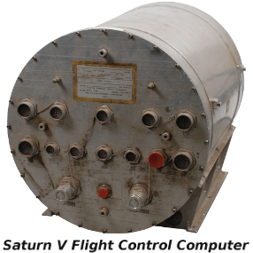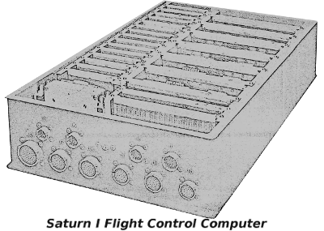The launch
vehicle (i.e., the Saturn V or IB rocket) was always directly
steered by the so-called Flight Control Computer (or FCC,
depicted in the picture at the right), an analog computer
whose salient property for our purposes is that it was not
the LVDC. However, the FCC did not operate on its
own, and thus itself needed to be supervised.
Normally, that supervision was performed, by default, by
the LVDC, indirectly through the LVDA, the Launch Vehicle
Data Adapter.
However, it was also possible for the Command Module to
send the flight control computer a signal, the Mode
Command, which instructed it to accept Alternate Steering
Commands from the AGC rather than the default steering
commands from the LVDC/LVDA.
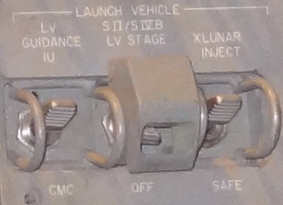Aside: As far as the detailed mechanisms in the AGC and the Command Module by which this was accomplished are concerned, the Colossus software's program P11 would have presided over the process. Normally P11 would just have been used to monitor the launch vehicle's activity. But if a toggle switch called "LV Guidance" on the CM's control panel (seen to the left) were to be flipped into the position marked "CMC", P11 could detect this via one of the AGC's i/o channels, namely bit 10 of channel 30. In turn, P11 could set bit 9 of i/o channel 12: That's the "Mode Command" signal in the block diagram above, and it's what told the IU that the change of control was taking place. At the same time, P11 would begin sending the "Alternate Steering Commands" to the IU, and those are what performed the actual steering. As it happens, these Alternate Steering Commands were no different than the ones used by the AGC's digital autopilot to steer the CM itself: They were literally the same electrical wires up to the point where they separated to go off to the IU, though controlled within the Colossus software by different polynomial-based flight equations. It's important to recognize that these signals were analog in nature, not digital. Or to put it in other words, the AGC did not control the LVDC. The LVDC was simply completely out of the picture insofar as steering was concerned, once the Mode Command to switch control to the CMC had arrived in the IU. It was also possible during P11 to key in VERB 46 ENTR on the DSKY to disable steering of the launch vehicle by Colossus's digital autopilot and instead allow the CM's Rotational Hand Controller (RHC) to be used by an astronaut to manually send Alternate Steering Commands to the IU.
How much control over the launch vehicle could actually be exercised by the AGC? The Apollo Operations Handbook for the Apollo 16 CM says this: "[Toggling the LV Guidance switch to CMC] allows CMC automatic steering (polynomial guidance) for S-IC stage, and attitude hold commands only, for SII and SIVB stages. Also provides capability of issuing RHC commands via CMC, provided configuration digit in N46 is 3 and V46E is keyed." So the amount of control the AGC could have over the launch vehicle was great, but was not complete.
Could the AGC exercise this control over the launch
vehicle in all Apollo missions? Regarding
Apollo 7, there is presently no information
whatever. But for the remaining missions, No!
The ability for P11 to provide automatic steering wasn't
present in 8 or 9, though it was present in Apollo 10 and
beyond. On the other hand, manual steering via the
Rotational Hand Controller (RHC) was available in Apollo 8
and onward. Unfortunately, there is not enough
surviving documentation presently to have full certainty
about all of the details.
Aside: I draw my conclusions from examination of the Colossus source code. First consider automatic steering. Insofar as Apollo 8 (Colossus 237) and 9 (Colossus 249) are concerned, they did not read bit 10 of i/o channel 30, and therefore could not have known to initiate automatic control. On the other hand, that capability is present in Apollo 10 (a version of Colossus called MANCHE45R2) onward. Admittedly, I have no basis for the assumption that the steering capability was 100% implemented and operational at that juncture. Nor do I have any information as to whether that steering ability was present for every stage of the rocket, or whether it merely applied to the S-IVB stage.
Regarding manual steering via the RHC, every version of Colossus from Apollo 8 onward has the following verbatim comment in P11's source code: "SATURN TAKEOVER FUNCTION ... DURING THE COASTING PHASE OF SIVB ATTACHED, THE ASTRONAUT MAY REQUEST SATURN TAKEOVER THROUGH EXTENDED VERB 46 (BITS 13,14 OF DAPDATR1 SET). THE CMC REGARDS RHC COMMANDS AS BODY-AXES RATE COMMANDS AND IT TRANSMITS THESE TO SATURN AS DC VOLTAGES. THE VALUE OF THE CONSTANT RATE COMMAND IS 0.5 DEG/SEC. AN ABSENCE OF RHC ACTIVITY RESULTS IN A ZERO RATE COMMAND. THE FDAI ERROR NEEDLES WILL INDICATE THE VALUE OF THE RATE COMMAND." This seems pretty conclusive, though it only applies to the "coasting phase", at which point stages S-IC and S-II would have been ejected, so at least on the face of it seems to apply only the S-IVB stage.
Of course, it was also desirable for the CM to be able to
monitor the activity of the Saturn, even under normal
conditions when the LVDC was controlling the rocket.
Since the spacecraft had its own Inertial Measurement Unit
(IMU), it knew its own orientation and acceleration — and
hence the Saturn's orientation and acceleration — at all
times, and the AGC could mathematically integrate these
quantities to know the velocity and position at all
times. Thus it was not necessary for the IU to
communicate that information to the spacecraft in order
for the AGC to monitor the physical motion of the rocket
and to display it for the astronauts on the DSKY.
Which is why there are no signals in the block
diagram showing such state-vector data flowing back from
the IU to the AGC.
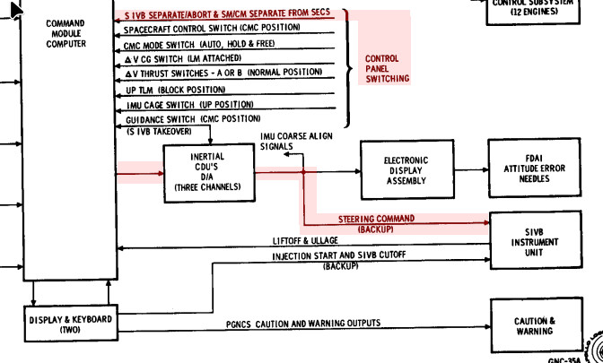Aside: (Refer to the portion of the CSM block diagram at the right.) What about the remaining signals in the Saturn block diagram the we haven't discussed: i.e., the "Abort Decision" and "Status" signals? The block diagram does show an "S-IVB SEPARATE/ABORT" signal directed at the CMC, and it would have been read by the CMC as bit 4 of i/o channel 30. On the other hand, the signal is clearly marked as coming from the control panel switches, and not from the IU, so perhaps there's some additional magic going on with that signal within the control panel. Regarding the IU's Status signals, those would appear to be "LIFTOFF" and "ULLAGE", which are presumably bits 5 and 1 of the CMC's i/o channel 30. The only one of these three signals actually used by Colossus, as far as I can see, is LIFTOFF, though it is used elsewhere in Colossus and not directly by P11.
What would normally happen in P11 with the LV Guidance control-panel switch remaining in the "IU" position as it did in every actual mission, is that VERB 06 NOUN 62 would be used to monitor the following items on the three 5-digit displays of the DSKY: The total inertial velocity in feet per second, the rate of change of altitude in feet per second, and the altitude in nautical miles above the radius of the launch pad.
I actually have an interesting graphic of the monitoring process to show you. This graphic is not from physical system. Rather, Riley Rainey has used the "equation defining document" which specified how the Instrumentation Unit (IU) was supposed to behave, to model the physical behavior of the rocket and the spacecraft's IMU, allowing Virtual AGC to monitor the launch behavior on a simulated DSKY. Here's a short movie he has created of that simulation. It's admittedly a little fuzzy, since I blew it up by about 2×, but perhaps we'll be able to get a better one sometime in the future:

Describing the overall structure of the software loaded into the
LVDC is a bit tricky at the present time. That's because
documentation is scarce, our cache of original LVDC software is
sparse, and the original development process seemed quite
compartmentalized. By the latter, I mean that programmers
concentrated on the specific areas to which they were assigned,
and often seem to have had little cognizance of even the most
basic features of the software when those features happened to be
outside their narrow specialization. Plus the set of LVDC
programmers available to me is limited, so I don't have
representatives of all of those specializations to consult
with. Of course, it's also possible that the many decades
between the time they spent working on the project and the time I
was able to quiz them about it may also have acted to erase some
of the information.
In short, important aspects of my descriptions in these sections
concerning the gross structure of the software are based on
my own inferences and on the recollections of developers not
entirely familiar with the details. So take my comments
about the program structure with a large grain of salt. Of
course, as more LVDC code has dribbled in over the years, more of
it has become susceptible to reverse engineering as well.
With that said, let's contrast the overall structure of the LVDC
code vs the software source code for the Apollo Guidance Computer
(the programs COLOSSUS, LUMINARY, and so on) and for the Abort Guidance System. All of these
non-LVDC programs were monolithic in nature. What I
mean by that is that although the AGC and AGS software was
structured into various semi-independent sections, for which the
development of each was presided over by specialists in those
specific areas, the source code for them was nevertheless
presented to the programmers in a single large chunk — i.e., a
single, unified program listing. Every AGC or AGS developer
saw the entire source code, regardless of whether it pertained to
them or not. The natural result was that it was possible
(and even likely) for an AGC or AGS developer to have some grasp
of the large-scale structure of the software, beyond his or her
own narrow area of specialization. Similarly, every word
stored in the AGC or AGS core memory came from that source
code. In that sense, each AGC or AGS program listing was
entirely self-contained. If you were able to assemble those
program listings, then you obtained a rope image that could be
loaded into the computer and run. Conversely, every word in
core-memory either came directly from the associated program
listing or from some action taken by the code in that program
listing. When you look at an ABC program listing for (say)
LUMINARY, you see the entire contents of the Lunar
Module's AGC's core memory. Moreover, almost all of the AGC
executable code was stored in read-only memory, and thus the AGC
programs contained no self-modifying code; once again, what you
saw in the program listings was what you got! (An exception
could be the relatively-tiny amount of Erasable Memory Programs,
or EMPs. Since these were loaded separately and were in
read-write memory, they were not shown in the main program listing
and could in theory be self-modifying.)
The overall structure of the LVDC software, however, is
fundamentally different. For one thing, the entire memory of
the LVDC was read-write, and thus software could be and was
sometimes self-modifying during operation. Moreover,
simultaneously loaded into the LVDC core memory were several
different logically-distinct "programs", each with different
sets of source code, assembled separately from each other,
and having different areas of specialization. Thus assembly
of any given one of these programs did not produce a full
core-rope image: merely a partial rope image. A full rope
image could be obtained only by merging all of the partial
core-rope images from the different assemblies of the several sets
of source code. The separate programs I'm aware of are
discussed individually in the sections that follow, but in brief,
they were:
A similar situation arises in modern computer systems, where you
typically have an "operating system" program and "application
programs" running in the computer at the same time. The
application programs rely on the operating system for certain
functionality, but have no understanding of how the operating
system provides that functionality. All the application
program needs to know is the exact method for requesting the
desired function from the operating system. Similarly, the
operation system stands ready to provide the desired
functionality, but has no knowledge of the internal workings of
the application program requesting service. The model of a
"BIOS" and software running atop the BIOS is even more á
propos, though that may be a concept no longer meaningful
enough to most computer programmers to be very illustrative.
In the LVDC, the method by which interaction between independent
but simultaneously-loaded programs worked was for there to be an
agreed-upon set of specific memory addresses hard coded into the
programs. For example, one program would know that to obtain
a certain type of service, it had to call a routine at a certain
fixed address in memory. Another program would know that it
had to put code providing certain types of services at certain
fixed addresses, but have no other knowledge of the program(s)
utilizing that functionality.
Because of this much higher degree of compartmentalization,
programmers working on (say) the Flight Program might have no
cognizance at all of the Preflight Program, the developers of
which might have no cognizance of the Flight Program. And
unfortunately, that means that we don't have a lot of
understanding of it either.
With all of that said, later Flight Programs like AS-512 and
AS-513 appear to have much less reliance on the Preflight Program,
to the extent that they may be able to operate with essentially a
skeleton version of the Preflight Program. While this claim
hasn't yet been fully analyzed as of this writing, it appears as
though the only parts of the Preflight Program desired by the
Flight Program may be:
Consequently, for some purposes, a skeleton Preflight Program
could consist essentially of nothing but boot code.
Until recently (as I write this), little about the Preflight
Program has been known. Just from inspection of the
available LVDC Flight Program source code, some inferences were
possible. For example:
The software was apparently known simply as the Flight Program,
and didn't have a catchy name such as "Luminary" or "Colossus".
You may also see references to the Generalized Flight Program (GFP) or generalized Flight Program System, in use from Apollo 12 onward. At that point the flight program was restructured for easier maintenance on a mission-by-mission basic, and that's where the "generalized" comes from.
Was the Flight Program classified in a national-security sense? No. Or at least it was not classified at the time period from which we begin to have any information. Several people associated with the development have stated to me that it was classified. But classified material must be stamped with one of the designations CONFIDENTIAL, SECRET, or TOP SECRET, not to mention having strict controls on availability. In other words, if this software was classified, it's highly unlikely we would have any access to it via parties who simply walked off it it ... current behavior by well-known national figures suggesting otherwise notwithstanding. Moreover, the available software listings are not so stamped, and therefore should not be considered classified. Undoubtedly IBM Federal Systems Division considered it "confidential" at the time, in the sense that like every other organization they reflexively wanted to hide it for their own private corporate reasons, but that doesn't make it classified in the sense of national security.| Mission |
Program |
Source Code |
Other Mission-Specific Documentation |
Notes |
|---|---|---|---|---|
| N/A |
PTC ADAPT Self-Test Program |
Page
Images or Transcribed Source-Code File or Colorized Syntax-Highlighted Assembly Listing |
"Saturn
V Laboratory Maintenance Instruction for LTE" |
This is not flight software as such, but
rather the software used for ground-test equipment known as
the Programmable Test Controller (PTC). The
PTC included a modified LVDC and a complex test panel with
many facilities for stepping through code, setting
breakpoints on code or data, etc. There's an extensive
write-up in the section titled "PTC ADAPT Self-Test
(PAST) Program" below. |
| AS-206RAM (unflown) |
Flight
Program |
We're currently treating LVDC
code as if it is restricted for export from the U.S. by the
International Traffic in Arms Regulations (ITAR). If
you legally qualify as a "U.S. person" and can provide
evidence of that status, contact us directly to arrange to
receive a copy of the code. |
"AS-206 S-IVB Restart
Alternate Mission Launch Vehicle Operational Flight
Trajectory" |
AS-206RAM was an alternate mission profile
which was never flown, and this is the LVDC flight software
for it as provided by an anonymous donor. Or rather,
it's an uncompleted and not-fully-debugged development
version of that software. The mission itself was
principally to get a Saturn S-IVB stage into orbit, and then
to test that the S-IVB's engine could be restarted after it
had been turned off for a while. Which obviously would
have been a good thing to know if you were depending on it! 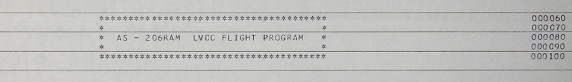
Although LVDC assembly-listing printouts
such as the one that provided this code were not printed
with dates or other identifying information (unless
programmers chose to explicitly include such information
in the source code itself), the mainframe that performed
the compilation sometimes provided additional information
about the printout. I've unfortunately been forced
to omit from the scans that extra bit of information (it's
not much!) due to anonymity concerns; however, I can say
that the assembly-listing printout was made on September
7, 1967. That's consistent with AS-206RAM, as the
documentation (see the link to the left) for that mission
is dated September 15, 1967.
There's a more-extensive write-up in the section titled "AS-206RAM Flight Program" below. |
| AS-512 (Apollo 17) |
Flight
Program |
We're currently treating LVDC code as if it is restricted for export from the U.S. by the International Traffic in Arms Regulations (ITAR). If you legally qualify as a "U.S. person" and can provide evidence of that status, contact us directly to arrange to receive a copy of the code. | 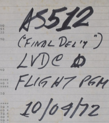Apollo 17 (AS-512) was, of course, the final
flown lunar-landing mission of Apollo. As far as we can tell, this is the complete Flight Program used in the actual mission. Lacking the associated Preflight Program, though, it still leaves us a bit short of having the full set of LVDC software for the mission, though perhaps only barely short. Unfortunately, the creators of the original LVDC compiler didn't see fit to include such niceties on their printouts as the date or code version, or at least not in any way we can unambiguously decipher it now, nor did the writers of the code see fit include such information (or even the Apollo mission number) within the code. In other words, the printout itself doesn't actually provide much direct support for the claim that this code was flown on Apollo 17, or indeed anywhere at all. And alas, the surviving owners of the printout appear to have had no knowledge at all of the nature of the material in their possession, with the original owner unfortunately being deceased by the time we became aware of the printout. We believe this code was flown on Apollo 17 partially because of the handwritten markings on the printout, which you can see in the photo to the right ... made at some unknown time by some unknown person. As it happens, there is a somewhat-cryptic notation in the assembler's messages which could be relevant, if we assume that "FT-512-1" stands for "Flight Program AS-512": 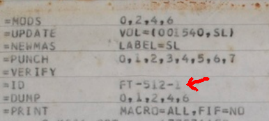
Besides which, I'm told that the assembly listing does include various presettings which are consistent with Apollo 17. For example, on p. 31 of the listing we find that something called P.DATE was set to 341. Apollo 17 launched on December 7, 1972, and December 6 was the 341st day of 1972. |
|
| AS-513 (Skylab 1) |
Flight
Program |
We're currently treating LVDC code as if it is restricted for export from the U.S. by the International Traffic in Arms Regulations (ITAR). If you legally qualify as a "U.S. person" and can provide evidence of that status, contact us directly to arrange to receive a copy of the code. | Skylab 1 (AS-513) was the mission that
launched Skylab into orbit. It was an unmanned
mission, succeeded almost immediately by the manned Skylab 2
mission, and then later by the manned Skylab 3 and 4
missions. As you may recall, Skylab itself was based
upon a modified Saturn S-IVB stage, without the usual
propulsion provided by that stage, but with the
S-IVB's Instrumentation Unit (IU) containing the LVDC and
controlling the other stages of the rocket. Thus the
launch was essentially a normal Saturn V launch, but with a
modified third stage. As far as we can tell, this is the complete Flight Program, though whether it was actually flown on the mission or is instead some earlier revision of the code we can't say for sure ... but we think it was. Of course, lacking the matching Preflight Program, it does not by itself provide the full LVDC software for the mission in either case, but even if not, it almost does so. As far as our claim that this code was associated with the Skylab 1 mission is concerned, the evidence consists partially of the handwritten notation seen in the photo below of the physical printout. Next to it, you see also a similar notation on the AS-512 printout, which was received from the same owners at the same time, so we're entitled to have roughly the same level of trust in the handwritten notation for AS-513 as we do for AS-512. 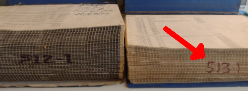
Moreover, the assembler's messages do include the following 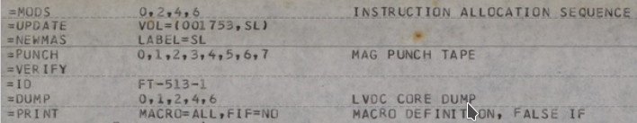
and we presume that "FT-513-1" is interpreted as "AS-513 Flight Program". The presettings embedded in the code are reasonably clear too. Consider this excerpt from p. 34 of the assembly listing:  Skylab 1 was launched on May 14, 1973, while day 119 of 1973 was April 29. Those dates are pretty close. But according to NASA, ... a few minor issues led NASA managers on Jan. 15, 1973, to announce a delay of two weeks for the dual launches. The Skylab 1 launch slipped from April 30 to May 14, ... so day 119 (April 29) was indeed
very, very close to the intended
launch date for Skylab 1, so it wouldn't be
surprising for it to be hardcoded.
|
|
| AS-207 (Skylab 3) |
Flight
Program |
Perhaps
some day ... |
"Flight
Simulation Malfunction Overall Test Report" PDF or Full-resolution page images "Saturn IB Launch Vehicle Flight Evaluation Report-SA-207 (SKYLAB 3)" "Skylab Saturn IB Flight Manual" |
Skylab 3 (AS-207) was the 2nd crewed
mission to Skylab. We don't actually have a program
listing for its LVDC at present. But we do have some
interesting related documentation that seems to me to
justify making an entry for it in this table anyway. It's open to question exactly what the "test report" linked at the left is. It arrived at our doorstep with no explanation, so after a bit of research I'm giving you my own personal speculations rather than any official story. Aside from the clues within the printout itself, which are the page headings DATE 04/26/73we also have the handwritten markings on the cover page and the page edges:  No, Malcolm Oats is not
the name of a heroic aerospace engineer in a
"thriller" novel. I think. (But feel free
to use it, if you're writing one!)
The acronym OAT appears in the various Launch Vehicle Flight Evaluation Reports, and specifically the one for Skylab 3 whose link(s) are to the left. OAT stands for Overall Test. For example, the Skylab 3 report specifically gives a timeline that includes "Malfunction Overall Test (OAT)" on June 19,1973. I actually find three types of OAT listed in that (and other) documentation, namely "Space Vehicle OAT No. 1 (Plugs In)", "Launch Vehicle Swing Arm OAT", and "Malfunction OAT". So I think it's reasonable to suppose that a "SIM FLT MAL OAT" would be a "simulated-flight malfunction overall test", or some variation thereof. In other words, our report would be a MAL OAT using simulated flight data, performed prior to the actual MAL OAT using the physical Saturn IB. The MAL OAT itself appears
to be simply a timestamped log of all the
launch-vehicle events that the OAT was capable of
detecting, and those events appear to be the ON/OFF
states of various signal wires. The exact
interpretations are open to question, as I've not yet
found any specific documentation as to how to read MAL
OAT tests. Each event is marked with a
designation like "DDA", "DEE", "LDO", "LDI", "MDO", or
"MDI". "DDA" may stand for "Digital Data
Acquisition"; the Saturn Flight Manual explains, among
other things, that
Telemetry system GP1 is a PCM/DDAS link that transmits realtime checkout data before launch, and measuring program information during flight.Which sound promising, if hardly definitive. Similarly, "DEE" may stand for "Digital Events Evaluator": The digital event evaluators (DEE) are used to monitor the status of input lines and generate a time tagged printout for each detected change in input status.As for "LDO" et al, you might suppose that a trailing "I" refers to input while a trailing "O" refers to output. Of course, what's an "input" vs what's an "output" would depend on your point of view: An "output" from the LVDC is an "input" to the device receiving the signal from the LVDC. So the most we could infer from this is that "I" and "O" signals may be going in opposite directions. For example, given a sequence of notations from the bottom of p. 1 of the report like ... perhaps one could infer that the
"decoder" had been powered on at time 0.472, checked at
time 0.532 to verify that it had been turned on, and so
forth. Or perhaps not.
At any rate, the reason I'm droning on about this report is that if the report really is a log of such events, and if the report could be interpreted properly, then it could perhaps also give us a reasonable timeline of the activities the LVDC was performing; i.e., which of its outputs it was controlling and which of its inputs it was interrogating. That could be useful in assessing simulated runs of other LVDC software versions. With that said, don't assume too much similarity between the Skylab 1 mission (for which we have the software) and the Skylab 3 mission (for which we don't). Skylab 1 used a modified Saturn V launch vehicle, whereas Skylab 3 used a Saturn IB launch vehicle, so the LVDC software must have been configured pretty differently between those two missions. |
Aside: You may wonder why there's an extensive write-up here of the unflown AS-206RAM Flight Program, whereas there is little to-do made of seemingly more-importation flight programs like the one for AS-512 (Apollo 17). (And similarly for the PTC software write-up in the next section.) But it's not some kind of snarky comment on the relative significance of AS-206RAM vs AS-512. It's just that when this write-up was done, AS-206RAM was the only LVDC code known to exist. And naturally, finding it was therefore a very big deal and I made a big fuss over it! A lot of the description below would be relevant to other versions of the Flight Program as well.To a computer programmer, the most important thing about any computer program is its source code, and at present not many versions of the LVDC Flight Program are available to us. (For some non-flight LVDC software, see the PAST program described in the next section.) The Flight Program at issue in this section is an engineering revision of the software, from September 1967, designated "AS-206RAM LVDC FLIGHT PROGRAM". If you were to Google this (don't do it!), you may confuse yourself by noting that Saturn IB launch vehicle AS-206 was used for the Skylab 2 mission (Conrad/Weitz/Kerwin). But the Skylab 2 mission was in 1973, far past the 1967 time frame in which this revision of the program is developed. What gives? The answer, is that AS-206 was originally intended for an unmanned mission that was canceled after the Apollo 1 fire. The software we have is not even for that canceled early AS-206 mission, but rather for a proposed backup to the canceled mission. So whatever software the LVDC had when AS-206 eventually launched as Skylab 2, is not this software. That doesn't alter the fact that this software is ancestral to the versions that followed it ... or at least a very close cousin to the ancestor of the versions following it. There are some references in the software to AS-205, which is what would have been Apollo 2 (the 2nd manned Apollo mission) had the tragic Apollo 1 fire not occurred; naturally, Apollo 2 was canceled thereafter. The designation AS-205 was later used instead for Apollo 7, though considering the time-frames involved, it's likely that the reference in the source code is to Apollo 2 rather than Apollo 7. In other words, the our AS-206RAM flight program had likely been branched off from the LVDC software being developed for the never-flown Apollo 2 mission.
The basic purpose of the Apollo Saturn 206 S-IVB Restart Alternate Mission is to place the S-IVB stage into orbit and test its restart capability, simulating the AS-501 mission profile. In the event S-IVB restart problems occur in the early Saturn V flights, this mission will be flown to help correct or solve the problems. The primary objective of the SA-206 Launch Vehicle is to insert the S-IVB/IU/Payload configuration into a near earth 100 nautical mile circular orbit. The payload consists of a Spacecraft LM Adapter (SLA) and a 25° Nose Cone (NC #2).As usual in these matters, what we have is not the punch cards on which the assembly-language source code was originally provided to the assembler program, but rather the "assembly listing" output by the assembler. Unfortunately, the status of the original assembly process for it found 41 warnings and 7 errors — meaning that there were problems in the source code and that the assembly process failed. Thus our listing represents an uncompleted development version that wouldn't actually work as-is anyway. That doesn't reduce its instructional value any, though, and it doesn't mean that some enterprising individual couldn't fix it up now to make it work! In fact, it's quite easy to get rid of the assembly-time errors, though whether or not that is adequate to get the program into a working state is questionable.
Aside: As far as assembly-time warnings are concerned, almost all warning messages produced by the original LVDC assembler, or for that matter the modern LVDC assembler we'll talk about below, are simply indications that some memory location which naively would be in the direct path of the assembly process had already been allocated for some other purpose. The assembler was able in those cases to transparently jump past the already-allocated locations, so other than the fact that slightly more memory and execution time was used to do so, there's no significant negative impact. In other words, these "warnings" are really typically just informational messages that such a bypassing jump had been added by the assembler. So while 41 warnings sounds like quite a lot, they really mean little, and are not an indication of a problem in most cases. In comparison, the AS-512 flight program, which is the final flight version and was fully debugged (to the extent that the original developers chose to debug it) itself has a couple of hundred of these warnings.

| ITAR Nonsense When I say "we" have a copy of this assembly listing, however, there's an unfortunate proviso. In the U.S. there is something called the International Traffic in Arms Regulations (ITAR), which prevents export of certain technologies from the U.S. except under strict controls. Under my non-expert, non-lawyer reading of the ITAR, the LVDC might be such a device whose export is prohibited. However, I cannot personally figure out whether the LVDC's software would also therefore be restricted. If it were restricted, then freely providing the software online would be regarded as "exporting" it, and would therefore also be prohibited! Legal assistance is working through the slow process of getting an official ruling on this matter, so perhaps one day will have a more-definitive answer as to what we can and cannot do with this software from a legal standpoint. But so far, many years have been spent on this effort, so I wouldn't recommend holding your breath. As it happens, the source code from
all available assembly-listing printouts have been
entirely transcribed into machine readable form.
Those are a lot more convenient to deal with than
scanned page images, since you can do things like text
searches on them, or even assemble them using the nifty
LVDC assembler I've written (see below). The
problem, of course, is that the transcribed source code
is just as much subject (or hopefully, it will
eventually turn out, not subject) to ITAR export
restrictions as the scanned images are, so this LVDC
source code is not presently available in our software
repository. The process for convincing me that you are a "United States person" has traditionally been somewhat cumbersome, and has typically involved sending me digital images of appropriate documentation, along with a video telephone call so that I can verify that your appearance matches photo ID. It is, of course, unwise for you to send such personal information to untrusted people — me! — that you've met online. Another alternative would be for you to pay a lawyer to provide me with a letter assuring your status as a United States person, which relieves both of us of the burden of trusting each other ... but which probably involves a monetary expenditure on your part. |
Aside: Alternately, some of the points I make in the following discussion are probably illustrated equally well by the non-flight PAST program discussed in the next section, which is definitely not restricted by ITAR and hence can be viewed in full by everybody. Unfortunately, I didn't have a copy of the PAST program, or even know of its existence, when I wrote up this section.At the time I originally wrote this description, the afore-mentioned abridged AS-206RAM code was something under constant revision, so I chose to illustrate the discussion with the scanned page images. Here are various images of pages of the assembly listing that illustrate things like how constants and variables are defined by the software, how some standard mathematical functions are encoded, and some of the tabular data generated by the assembler:


The middle group of pages above shows a few auxiliary subroutines
for computing the sine, cosine, arctangent, and spare root
functions, plus a 3×3 matrix-multiply routine. Note that
these are some of the very algorithms described in section 13 of the
EDD (LVDC Equation Defining Document), so the source code
can actually be compared to the defining documentation if one so
desired. The two images at the top show an area of the
program where some constants are defined, while the two at the
bottom show a portion of the assembly listing's cross-reference
table.
Regarding preloaded constants for LVDC memory, all missions (I
think!) were associated with a report called the "launch vehicle
operational flight trajectory", and these documents (among other
things) listed the LVDC preload settings. Unfortunately,
most of these reports are presently unavailable, though we do have a few of them. For
example, the AS-202 report says that "LVDC symbol" T1i,
the time-to-go for first IGM stage, is preloaded with 299.25 sec,
while Vex1, the J2 exhaust velocity for first IGM
stage, is loaded with 4165.45 m/sec, and so on.
Finally, I claimed earlier that the AS-206RAM Flight Program is
not, of itself, a complete program. In that assessment, I'm
not referring to the fact that when you try to assemble it you
find that there are a few missing symbols, associated with
variables that haven't been allocated. That problem
is simply due to the fact that the listing we have is an
engineering version of the code that had never been debugged to
the point of being released. It's quite easy, I think, to
fix up the assembly-time errors and warnings in the AS-206RAM so
that it assembles error-free, and is entirely self-contained in
that sense. But it is still not complete in the larger sense
I mean.
Rather, when I say that AS-206RAM is incomplete, I mean that it
references code at specific hard-coded addresses which are not
defined by the AS-206RAM program. Indeed, there are large
areas of core memory left undefined by the program. Even the
location in memory at which the power-up entry point should be
stored is left undefined. But for example, consider the
concrete example of the code necessary for processing commands
uploaded to the LVDC from mission control, as described in the Up-data section of this web-page.
When such a command is uploaded to the LVDC, an interrupt
occurs. The software then looks in an interrupt-vector
table, which appears on p. 207 of the program listing, and looks
like the following:


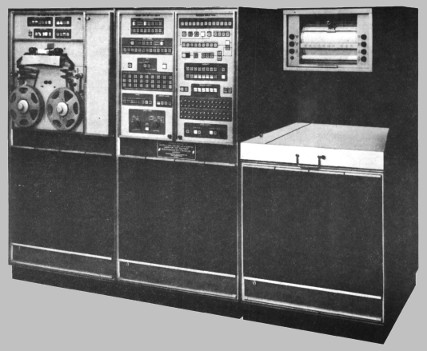This
section concerns the "PTC ADAPT Self-Test Program".
Since "PTC ADAPT Self-Test Program" is quite a mouthful, I'll
just refer to it as the PAST program. Not only is that
nice and short, it's also apt since the PAST program
chronologically preceded the AS206-RAM Flight Program
discussed in the preceding section.  But
beware: The acronym "PAST" is mine, and doesn't come
from the contemporary Apollo documentation.
But
beware: The acronym "PAST" is mine, and doesn't come
from the contemporary Apollo documentation.
Strictly speaking, the PAST program is actually not "LVDC"
software, and it is certainly not flight
software. But it's really quite significant in spite of
that, and shouldn't be ignored if you're interested
technically in the LVDC itself, rather than merely how the
LVDC fits into the context of the launch vehicle. The
PAST program fills in an important gaps in our understanding
of the LVDC and it is technically so close to being "LVDC
software" that it's really a matter of opinion as to whether
you want to label it as LVDC software or not.
(Hint: I do want to call it that.) Let's
begin the explanation with a little acronym-rich terminology:
The PTC is
documented here. (A tiny bit of
ADAPT and ASTEC documentation is here.) This PTC
documentation includes (in Chapter 7) a printout of the
assembly listing of the PAST program and is our only-known
source for it.
But it's not necessary to go into great detail about the PTC,
ADAPT, and ASTEC at the moment. Indeed, for our
immediate purposes, we can ignore the ADAPT and ASTEC entirely
and the only important things to know about the PTC are:
In some sense, you can think of the PTC as a large LVDC that
has been fixed up to allow various kinds of debugging
activities. For example, the PTC provides support via
circuitry enabling things like single-stepping through the
software. (In the PTC documentation, see section 2-80,
"External Control Element"; section 2-216, "External Control
Logic Circuits".) It's the fact that the PTC's CPU is a
"modified" LVDC which means the PAST program is not strictly
LVDC software. Rather, it's modified-LVDC
software. Still, except for small number of differences
I'll list in a minute, the PAST program matches LVDC Flight
Program syntax. Indeed, its assembly listing has clearly
been produced by the LVDC assembler program, although there
are a few differences in the way some of the output is
formatted. In terms of how the PTC's CPU has been
"modified" relative to the LVDC, those changes are described
in detail later but here's a list of some of the differences
visible at the software level, though admittedly it may not be
too meaningful to you until you study more about how the LVDC
works (and particularly its instruction set) later on:
How can I justify my claim that the PAST program is
"significant" and thus deserves your attention? There
are actually quite a few reasons to think so:
As far as the versioning of the software, there is nothing
embedded within the assembly listing itself which dates
it. However, given that it is printed in the PTC
document mentioned above, which is dated 5 MARCH 1965, I think
we can tentatively suppose that the PAST program too is from
early 1965. (Whereas the AS206-RAM program is from late
1967.)
Beyond that, there's also the academic question of the
versioning of the LVDC assembler used. Both the feature
set and the format of the output is more primitive in the PAST
assembly than in the AS206-RAM assembly. For all these
reasons, it's fair to infer that an earlier version of the
assembler was used for the PTC assembly, in which various
more-advanced convenience features did not yet exist.
The PAST program's source code has been transcribed into
textual form, so that it can be assembled.
You can get that source code from our software repository:
Folder in our GitHub repository for PAST program source-code files
I should note that while this code assembles 100% correctly —
i.e., without errors, and producing octal executables 100%
identical to those of the original scanned assembly listing —
there were nevertheless some behaviors (and perhaps bugs) of
the original assembler that I've not yet been able to figure
out how to mimic in the modern assembler. Thus to get an
assembled output identical to the original, some workaround
code consisting of a handful of ORG, DOG,
and TRA pseudo-ops and instructions have been
inserted into the source code. Hopefully it will be
possible to update the modern assembler at some point in the
future, and thus eliminate the workarounds.
You can also look at the scanned assembly listing created by
the Apollo-era assembler. To make it a little more
convenient to work with, I've extracted the listing from the
original scanned PTC document linked earlier, so that it can
be viewed as a set of image files, one per scanned page of the
listing:
Here's a quick index to the zipfile:
These images correspond to the original PTC document's pages
434-717. In general, the entire Chapter 7
("Calibration") of that document is relevant, as it contains
detailed flowcharts for the program, in addition to operating
instructions. Chapter 2 ("Theory of Operation") contains
detailed information about the PTC CPU and its peripheral
devices.

Aside: For a very long time, I had instead stated that at boot-up the LVDC acted as if there were a HOP constant (see below) stored at address 0-00-000, and that the starting instruction pointer, data-memory module, and data-memory sector were determined by this HOP constant. It now appears that the LVDC documentation was somewhat ambiguous — or in vulgar terms, wrong, making me wrong as well — on this point, and that LVDC booted up in the same manner as the PTC, as described in the preceding paragraph.


Aside: The "residual sectors" provide a flexible way of accessing variables. On the other hand, they could be used to hold instructions as well as variables. It's just that by doing so, you can only access instructions if the currently-selected instruction sector happens to point to that selfsame residual sector. In other words, you can't access instructions by using the A9 address bit I mentioned above, and that A9 bit is what makes the residual sectors special in the first place. So if the residual sector is used to store instructions, you're basically not taking advantage of its special features, and are simply treating it like any other memory sector. That's kind of a waste, given that only ~7% of LVDC memory resides in residual sectors, and an even tinier fraction of PTC memory. It's in accessing variables rather than instructions that the residual sector shines. Nevertheless, with that said, both the AS-512 and AS-513 Flight Programs do devote a couple of residual sectors to instructions rather than to data. Whether or not it's worthwhile doing that just depends on your particular needs. If you use the EXM instruction (see below), you'll definitely need to store at least a few instructions in residual sectors.Memory-sector selection and the "residual sector" become clearer when contemplating the HOP Register mentioned earlier. Here is the LVDC's version of the HOP Register:

 |
||||
|
Mnemonic |
A 8 |
A 9 |
O P 4 |
O P 3 |
O P 2 |
O P 1 |
Timing (computer cycles) |
Description of the instruction |
|||||||||||||||||||||||||||||||||||||||||||||||||
|---|---|---|---|---|---|---|---|---|---|---|---|---|---|---|---|---|---|---|---|---|---|---|---|---|---|---|---|---|---|---|---|---|---|---|---|---|---|---|---|---|---|---|---|---|---|---|---|---|---|---|---|---|---|---|---|---|---|
| HOP HOP* |
0 |
0 |
0 |
0 |
1 |
The HOP instruction provides an unconditional
jump instruction that also simultaneously changes the
instruction-memory and data-memory contexts. To
perform this operation, a "HOP constant" is needed,
specifying not only the desired instruction-memory sector
and data-memory sector, but the target offset into the
desired instruction-memory sector as well. The operand
is the address of the memory location (in the current or
residual data sector) containing the HOP constant. The following example codes an unconditional jump from HERE to THERE by means of a HOP: HERE HOP HTHEREThe need to explicitly code the HOP constant for every jump is is obviously a big pain in the neck, though convenient if the target location changes throughout execution rather than being known at assembly time. Alternatively, in assembly listings you'll also sometimes see the "instruction" HOP*. But there is no machine instruction such as HOP*. At the machine level there is only HOP, as described in the preceding paragraph. Rather, the presence of the "*" indicates an assembly-language convention that's a workaround for the inconvenience of having to hard-code HOP constants. The convention is that HOP*'s operand can be a left-hand symbol for the target location in the code rather than the left-hand symbol of a HOP constant of that target location. The example code above would change to something like this: HERE HOP* THEREBut the apparent simplicity of HOP* conceals a lot of stuff under the surface. What the assembler does for HOP* is to automatically allocate what I earlier called HTHERE:
See also TRA, TMI, TNZ. |
|||||||||||||||||||||||||||||||||||||||||||||||||||
| MPY |
0 |
0 |
0 |
1 |
1 (results available after 4) |
LVDC only ... not PTC. This is a multiplication instruction. It multiplies two 24-bit numbers to produce a 26-bit product. The accumulator provides the address of one operand, and the address embedded in the instruction points to the other operand. Recall that A1-A8 select the offset within a 256-word sector, and A9 is the "residual bit" that selects between the current sector and the "residual sector". In both cases, the most-significant 24-bits of the operands are used, and the least-significant 2 bits of the operand are ignored. A partial product (24 bits from the addressed memory times the 12 less-significant bits from the accumulator) can be fetched from the P-Q Register (0775 octal) on the 2nd instruction (or more accurately, two computer cycles) following MPY, though there is no need to do so if that value isn't desired by the program. The full product is available from the accumulator or from the P-Q Register on the 4th instruction (more accurately, 4 computer cycles) following MPY. However, the result will remain in the P-Q register until the next MPH, MPY, or DIV. |
|||||||||||||||||||||||||||||||||||||||||||||||||||
| PRS |
0 |
0 |
0 |
0 |
1 |
TBD |
PTC only ... not
LVDC This is a "print store" operation. Here's what the PTC documentation (see p. V-2-22) has to say about it: Initiates a printer operation. That rather laconic description is trying to tell you that the PRS instruction can send either 4 or 12 characters to the printer peripheral, for printing. In assembly language, the operand of the instruction is always a literal 3-digit octal number or else a symbolic label representing a memory address in the range 0008 to 7738. Recall that addresses in the range 4008 to 7778 refer to addresses 4008 to 7778 in the residual memory sector. See also the discussion of the BCI pseudo-op, farther down on this page, which is a convenient way in assembly language to encode memory-operand data for PRS. Each PRS instruction conveys 26 bits of data to the printer, and that 26-bit word is capable of encoding either 4 or 12 characters. The number of characters encoded depends on whether the printer is in "octal mode" (activated by the CIO 164 instruction) or "BCD mode" (activated by the CIO 170 instruction). The term "BCD mode" is a misnomer, in modern terms, since it would seem to imply that it covers only Binary Coded Decimals, whereas in fact it covers the complete repertoire of printable characters. Besides those, see also CIO 160, which conveys certain control commands to the printer. In octal mode, the 26 data bits comprise 8 octal character encoded as 3 bits each (000="0", 001="1", ..., 111="7"), plus a single "2-bit character", plus three blanks (which are always present, and thus require no bits to encode). So far, I've found no written explanation of what these "2-bit characters" are, but due to the way 26-bit data words are invariably represented in LVDC/PTC assembly listings — namely, as 9 octal digits with the final one being even — I feel confident that the 9th character is encoded as 00="0", 01="2", 10="4", 11="6". In BCD mode, the 26 data bits comprise 4 6-bit character code, left-aligned in the data word. In other words, the first character's most-significant bit appears at the SIGN bit of the 26-bit word. The least-significant 2 bits of the data word are not used as far as I can tell. (That's a pity, because it seems to me that it would be reasonable to use them to indicate how many characters the word contained, rather than just always being 4. Alas, that doesn't seem to be the case.) The 6-bit encoding scheme, called "BA8421", is covered in the discussion of the BCI pseudo-op. The PRS instruction has a side effect: It overwrites the interrupt latch. This potentially triggers interrupts if not inhibited; or, more usefully, the interrupt latch can be read back using the CIO 154 instruction for self-test purposes. Which particular bits are set depends on which characters are being printed. I can't give you too satisfactory a rationale as to the particular bit patterns used. Nor are they documented (unless they can be deduced from the 2nd-level schematics, which I've failed at so far). So all I can do is infer the bit patterns from how the PAST program source code uses them. But take what I say with a big grain of salt, because there's no unique way of making these inferences! With that said, here are the rules for deriving the interrupt-latch patterns that I've built into the PTC emulation software. The bit patterns are all 12-bit codes (stored in SIGN and bits 1-11 of the interrupt latch) as follows:
The parity bit for character data appears to be an odd
parity bit for the most-recently processed
character of the 4 (BCD mode) or 12 (octal mode) encoded
in the 26-bit data word at the time CIO 154 is
issued to read back the interrupt latch. The
characters are processed sequentially after the PRS
instruction is executed. The 4 characters in BCD
mode can be processed within a single CPU instruction
cycle, but the 12 characters in octal mode cannot be, and
require two instruction cycles to fully process. I
think that the timing for this processing is not
synchronized with the CPU clock, and indeed has some
tolerance in terms of frequency, so that it cannot be
known deterministically how many characters have been
processed until enough machine cycles have elapsed to
guarantee that all characters have been
processed. I suspect that's why all octal-mode PRS
test cases in the PAST program consist of strings of
characters having all the same parity; that way,
it doesn't matter which specific character has just been
processed, because the parity of each character is the
same anyway. This leaves many questions unanswered about the precise
original behavior of the PTC panel. Therefore,
ignoring the original behavior and thinking just in terms
of how the PTC emulation implements the parity in
the face of this indeterminacy, I recognize 3 distinct
cases:
PRS something
PRS something
Any intervening CIO or PIO instructions that result in a modification of the interrupt latch will prevent the parity-check bit from appearing in CIO 154.PRS something |
||||||||||||||||||||||||||||||||||||||||||||||||||
| SUB |
0 |
0 |
1 |
0 |
1 |
Subtracts the contents of a word pointed to by the address
embedded within the instruction from the accumulator, and
puts the result back into the accumulator. Recall that
A1-A8 select the offset within a 256-word sector, and A9 is
the "residual bit" that selects between the current sector
and the "residual sector". See also RSU. Regarding borrow from the operation, the CPU provides no direct way of accessing it, and thus no easy way to perform multi-precision subtraction. Refer to the notes for the ADD instruction for more information. |
|||||||||||||||||||||||||||||||||||||||||||||||||||
| DIV |
0 |
0 |
1 |
1 |
1 (results available after 8) |
LVDC only ... not PTC. This is the division instruction. The contents of the accumulator are divided by the operand pointed to by the address A1-A9 embedded within the instruction to produce a 24-bit quotient. Recall that A1-A8 select the offset within a 256-word sector, and A9 is the "residual bit" that selects between the current sector and the "residual sector". The quotient is available in the P-Q Register (0775 octal) on the 8th instruction (more accurately, 8 computer cycles) following the DIV. However, the result will remain in the P-Q register until the next MPH, MPY, or DIV. |
|||||||||||||||||||||||||||||||||||||||||||||||||||
| TNZ |
0 |
1 |
0 |
0 |
1 |
This is a conditional jump instruction, which branches to
the address embedded in the instruction if the accumulator
is not zero, but simply continues to the next instruction in
sequence if the accumulator is zero. Bits A1-A8 of the
embedded address represent the new offset within the
currently selected 256-word instruction sector, while bit A9
gives the syllable number within that word. The
"residual sector" cannot be accessed. The instruction
sector and data sector are not changed by the jump. As mentioned, the target address for the machine instruction itself had to be within the current sector, because its 8-bit address offset is embedded within the instruction. However, the assembler would transparently work around this problem, allowing essentially any target address to be used. For the sake of discussion, imagine an assembly language instruction, TNZ OINITin which the target location OINIT is not in the current memory sector. The workaround procedure used by the assembler was this:
The distinction between TNZ and TNZ* is reminiscent of the distinction between HOP and HOP* discussed earlier. As with HOP*, it is is unclear whether the * for TNZ* was present in the source code or not. It is therefore my assumption (and the modern LVDC assembler's assumption) that TNZ (without *) was always used in source code, while the * in TNZ* is only present in assembly listings. I am unaware of any evidence to the contrary. See also TMI, TRA, HOP, and the pseudo-op BLOCK. |
|||||||||||||||||||||||||||||||||||||||||||||||||||
| MPH |
0 |
1 |
0 |
1 |
5 |
LVDC only ... not PTC. This is a multiplication instruction. It is exactly like MPY except that the program "holds" until the multiplication is complete, so that the product is available from the accumulator or from the P-Q Register at the next instruction following MPY. However, the result will remain in the P-Q register until the next MPH, MPY, or DIV. |
|||||||||||||||||||||||||||||||||||||||||||||||||||
| CIO |
0 |
0 |
1 |
0 |
1 |
TBD |
PTC only ... not LVDC. There
is no LVDC equivalent for this instruction, which can be
viewed as a way of extending the LVDC/PTC PIO
instruction (see below) to a wider range of uses. Here's what the original PTC documentation has to say about CIO: "Controls the input, output operations of the CPU. The operand address bits specify the operation to be performed." A list of the CIO i/o ports is given below. As far as I know, only ports 154, 214, and 220 are for input, and they load the accumulator when used. Other ports are for output only, and the accumulator should to be loaded, prior to the CIO itself, with any additional data the specific operation requires, but is not affected by the operation. Note that most output operations do not require any such supplemental data, and therefore ignore whatever value is stored in the accumulator. Many of the operations relate to inhibiting or enabling interrupts (as you can see from the table above!), sending commands to the PTC's printer or plotter, etc. In assembly language, the operand of the instruction is always a literal 3-digit octal number.
|
||||||||||||||||||||||||||||||||||||||||||||||||||
| AND |
0 |
1 |
1 |
0 |
1 |
Logically ANDs the contents of the accumulator with the contents of the address embedded within the instruction and places the result in the accumulator. Recall that A1-A8 select the offset within a 256-word sector, and A9 is the "residual bit" that selects between the current sector and the "residual sector". | |||||||||||||||||||||||||||||||||||||||||||||||||||
| ADD |
0 |
1 |
1 |
1 |
1 |
Adds the contents of the
accumulator with the contents of the address embedded within
the instruction and places the result in the
accumulator. Recall that A1-A8 select the offset
within a 256-word sector, and A9 is the "residual bit" that
selects between the current sector and the "residual
sector". What about the carry bit? As far as I can tell, the CPU has no provision for carry bit that's useful at the software level. If you want to do multi-word precision arithmetic (say, 52-bit addition instead of just 26-bit addition), then you have to find some indirect, software-only way of detecting carry rather than on relying on the CPU to provide you with some easy way of handling it. It's certainly mathematically possible to do so: When adding two addends of the same sign using 2's-complement arithmetic, you can detect carry because the sum has the opposite sign of the addends, whereas adding two addends of opposite signs cannot result in carry anyway. But the coding to exploit this mathematical possibility is obviously going to be cumbersome and inconvenient. (The low-level adder circuit itself can deal with a carry bit, of course. The adder performs additions serially, starting with the least-significant bit and moving upward to the most-significant, and at each bit-stage there's a carry bit from the previous stage to worry about. However, the final carry bit is not accessible to software, and the carry-bit latch is cleared by any CLA instruction, making it very tough to transfer the carry-bit latch's contents from one word-addition to the next. In theory, if you could figure out a way to do multi-precision arithmetic without using CLA, perhaps you could exploit that hidden carry bit. But I'm having trouble seeing any way you might do it. That could just be my failure of imagination, of course.) |
|||||||||||||||||||||||||||||||||||||||||||||||||||
| TRA |
1 |
0 |
0 |
0 |
1 |
TRA is an
unconditional jump instruction, which branches to the
address embedded in the instruction. Bits A1-A8 of the
embedded address represent the new offset within the
currently selected 256-word instruction sector, while bit A9
gives the syllable number within that word. The
"residual sector" cannot be accessed. Note, however, that the assembler could work around the limitation that the target address had to be in the same sector. The assembler would automatically insert a HOP instruction instead of a TRA whenever it found that it was necessary to do so. For example, consider the instruction "TRA ETCBTC". If the target location ETCBTC is within the current instruction sector, the assembler would indeed assemble this exactly as expected, using a TRA instruction with opcode 1000. Actually, the assembler would refuse to directly do a TRA to a target in the same instruction sector under some circumstances, presumably to help guard the programmer from easy-to-make errors. The condition I've noticed in which this occurs is if the target address has been tagged by the assembler as being in a region with a different setting for the data module or sector, since unlike a HOP instruction, a TRA instruction doesn't alter the DM/DS settings. Whereas if a CDS instruction (which changes the DM/DS settings in the processor itself) happens to be at the target location, it doesn't trigger a replacement by HOP. Quite a complicated set of conditions! One wonders if the original programmers actually had much awareness at the time (or cared!) that these substitutions were being made for them. But if the target location (ETCBTC in this example) wasn't within the current instruction sector or failed the DM/DS conditions, then the assembler would instead perform the following complicated maneuver which preserves the expected program logic, at the cost of an extra machine cycle and an extra word of memory:
|
|||||||||||||||||||||||||||||||||||||||||||||||||||
| XOR |
1 1 |
0 1 |
0 0 |
1 1 |
1 |
Logically exclusive-ORs the
contents of the accumulator with the contents of the address
embedded within the instruction and places the result in the
accumulator. Recall that A1-A8 select the offset within
a 256-word sector, and A9 is the "residual bit" that selects
between the current sector and the "residual sector". Note: The opcode bits for XOR are 1001 (118) for LVDC, but 1101 (158) for PTC. However, the PTC documentation incorrectly indicates that the coding is 1001. (Either that, or the assembler assembled the instruction incorrectly; take your pick of explanations.) |
|||||||||||||||||||||||||||||||||||||||||||||||||||
| PIO |
1 |
0 |
1 |
0 |
1 |
Reads or writes an i/o
port. Bits A1-A9 select the source and
destination of the i/o. A table of the i/o ports
vs. addresses is given in the following section. In so far as assembly-language syntax is concerned, the operand of the instruction is always a literal octal numerical constant. |
|||||||||||||||||||||||||||||||||||||||||||||||||||
| STO |
1 |
0 |
1 |
1 |
1 |
Stores the contents of the
accumulator in the word indicated by the address embedded
within the instruction. Recall that A1-A8 select the
offset within a 256-word sector, and A9 is the "residual
bit" that selects between the current sector and the
"residual sector". The following addresses are
special, as described in the
documentation of the STO instruction (see p. 2-17):
The LVDC and PTC cases appear to be very different, but
the difference is really just that the PTC has no
multiplication and division instructions, and hence has no
product-quotient or multiplicand-divisor register. Nevertheless, the description of 776 and 777 above is
admittedly a bit tricky to understand, so let's try to get
at it another way. It's mainly about return
addresses for subroutines and interrupt-service
routines. Most modern CPU's have a "CALL"
instruction for calling subroutines, and part of what CALL
would do is to push the return address onto a dedicated
"stack" in memory; a subsequent "RET" instruction would
then pop the return address out of the stack and jump to
that return address. But the LVDC/PTC CPU has no
such features ... no CALL, no RET, no stack. What it
does instead is this: During the process of
executing any given LVDC/PTC instruction, a HOP constant
for the LVDC instruction at the next successive memory
address is formed. Keep in mind that the next
instruction successively in memory is not necessarily the
next instruction sequentially executed. Whatever the
next instruction executed, the previously-generated HOP
constant is temporarily shoved into a register called
"HOP-saver". Thus if the very next instruction executed
after a transfer instruction (HOP, TRA,
TMI, or TNZ) is STO 776 or STO
777, what ends up getting stored in location 776 or
777 is the HOP constant for the memory address that
follows the previously executed transfer instruction
instruction in memory. Or in brief, for a transfer
instruction to a subroutine, what gets saved at 776 or 777
is the return address of the subroutine. In fact,
this is the only easy method for accessing such return
addresses, and the only way at all for accessing return
addresses of interrupt-service routines. ...This becomes trickier if you have nested subroutine calls, because the nested routines can't each use the same storage buffers for their return addresses, and there's no way to temporarily replace the contents of 776/777 while still being able to restore the original contents afterward. (You can certainly read 776/777, for example with CLA 776, but you can't save an arbitrary value into either 776 or 777 afterward.) In other words, if you have a nested subroutine, you have to manage the return address of the parent subroutine manually. Here's an example I've constructed to illustrate the method: You can, of course, perform the same trick with multiple levels of nesting, at the cost of allocating more and more variables to store the manually-managed return addresses. It is perhaps obvious as well that the same address (776 vs 777) should not be used for interrupt-service routines and and for regular subroutines, even for the few instruction cycles needed for manual management, or else tremendous care needs to be taken to insure that no interrupt can occur during a subroutine with conflicting storage requirements for the return addresses. The safest thing would be to use 776 for interrupt-service routines (and their subroutines) and 777 for non-interrupt subroutines, or vice-versa. In examining the PTC ADAPT Self-Test Program and the AS206-RAM Flight Program, the two seem to use the opposite choice, so there may not have been a customary standard for doing so from one program to the next. |
|||||||||||||||||||||||||||||||||||||||||||||||||||
| TMI |
1 |
1 |
0 |
0 |
1 |
This is a conditional jump
instruction, which branches to the address embedded in the
instruction if the accumulator is less than zero, but simply
continues to the next instruction in sequence if the
accumulator greater than or equal to zero. Bits A1-A8
of the embedded address represent the new offset within the
currently selected 256-word instruction sector, while bit A9
gives the syllable number within that word. The
"residual sector" cannot be accessed. As mentioned, the target address for the machine instruction itself had to be within the current sector, because its 8-bit address offset is embedded within the instruction. However, the assembler would transparently work around this problem, allowing essentially any target address to be used. The workaround used by the assembler is that same as that described for the TNZ instruction above. Instructions for which the workaround have been applied are shown on the assembly listing as "TMI*" rather than "TMI". As with TNZ*, it is is unclear whether the * for TMI* was present in the source code or not. It is therefore my assumption (and the modern LVDC assembler's assumption) that TMI (without *) was always used in source code, while the * in TMI* is only present in assembly listings. I am unaware of any evidence to the contrary. See also TNZ, TRA, HOP, and the pseudo-op BLOCK. |
|||||||||||||||||||||||||||||||||||||||||||||||||||
| RSU |
1 0 |
1 0 |
0 1 |
1 1 |
1 |
Same as SUB, except that the
order of the operands in the subtraction is reversed. Note: The opcode bits for RSU are 1101 (158) for LVDC, but 0011 (03) for PTC. (0011 in LVDC is for the DIV instruction, which is missing from PTC.) |
|||||||||||||||||||||||||||||||||||||||||||||||||||
| CDS or CDSD or CDSS |
0 |
1 |
1 |
1 |
0 |
1 |
LVDC only ... not
PTC. Change the currently-selected 256-word data sector. For this instruction, A9 forms a part of the instruction itself, so only A1-A8 are significant. The partially overwrite the HOP Register as follows:  See also HOP. In terms of assembly-language syntax, there are the following variations: CDS SYMBOLNAMEThus CDS uses the characteristics of a variable name or a name defined with (for example) the DEQD or DEQS pseudo-ops (see below), whereas the module number and sector number are simply supplied with octal numeric literals in CDSD or CDSS. The difference between CDSD and CDSS is that the former selects duplex memory while the later selects simplex memory. In the usage I've seen, usage of CDSS is confined almost entirely to the context of USE DAT (see below). |
||||||||||||||||||||||||||||||||||||||||||||||||||
| CDS |
1 |
0 |
1 |
1 |
1 |
0 |
TBD |
PTC only ... not LVDC. This
functionally identical to the identically-named LVDC
instruction above, but is slightly different both
syntactically and in the encoding of the assembled
instruction. Changes the currently-selected 256-word data sector by partially overwriting the HOP Register as follows: 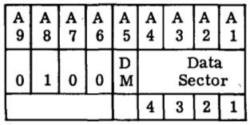
See also HOP. In terms of assembly-language syntax: CDS DM,DSDM is limited to 0 or 1, while DS is an octal literal from 0 to 17. |
|||||||||||||||||||||||||||||||||||||||||||||||||
| SHF SHL SHR |
0 |
1 |
1 |
1 |
1 |
0 |
1 |
LVDC only ... not PTC. Performs a shift operation on the accumulator. For this instruction, bits A8 and A9 form a part of the instruction itself, but of the remaining bits only A1, A2, A5, and A6 are actually used, as follows:
By a "left" shift, we mean a shift toward the more-significant direction (multiplying by powers of 2); by a "right" shift, we mean a shift toward the less-significant direction (dividing by powers of 2). In terms of assembly-language syntax, I have never seen SHF itself used. Rather, the synonyms SHL (left shift) and SHR (right shift) are used, and only in the following variations: SHL Nwhere N is a literal decimal numerical constant. However, N is not limited to just 0, 1, or 2, even those are all that SHF directly supports. If an operand N>2 is encountered, the assembler transparently replaces it with an appropriate sequence of shift-by-2 and shift-by-1 instructions. Note: The original documentation of the SHF instruction itself does not actually describe the directionality of the shifts, nor the nature of the data used to fill the bit-positions vacated by the shift. It instead simply refers to the there-undefined terms "MSD shift" and "LSD shift". Elsewhere in the original documentation is a theory-of-operation for the electronic circuitry, and the additional information about directionality and fill-values given above is derived from the theory of operation. |
|||||||||||||||||||||||||||||||||||||||||||||||||
| SHF SHL SHR |
0 |
1 |
1 |
1 |
1 |
0 |
TBD |
PTC only ... not LVDC. Functionally similar to the identically-named LVDC instruction, but differs in detail. It does not provide a "clear accumulator" function as the LVDC instruction does, but allows a shift of up to 6 bit-positions in a single instruction (rather than up to 2 as in the LVDC). As far as the encoding is concerned: A7 determines the direction of the shift: 0 = left shift (filling vacated bit positions with 0), 1 = right shift (duplicating the sign bit into the vacated bit positions). As for A6-A1:
In terms of assembly-language syntax, I have never seen SHF itself used. Rather, the synonyms SHL (left shift) and SHR (right shift) are used, and only in the following variations: SHL Nwhere N is a literal decimal numerical constant. However, N is not limited to just 1 through 6, even those are all that SHF directly supports. If an operand N>6 is encountered, the assembler transparently replaces it with an appropriate sequence of shift-by-6 (or less) instructions. Note: The original documentation of the SHF instruction itself does not actually describe the directionality of the shifts, nor the nature of the data used to fill the bit-positions vacated by the shift. It instead simply refers to the there-undefined terms "MSD shift" and "LSD shift". Elsewhere in the original documentation is a theory-of-operation for the electronic circuitry, and the additional information about directionality and fill-values given above is derived from the theory of operation. |
|||||||||||||||||||||||||||||||||||||||||||||||||
| EXM |
1 |
1 |
1 |
1 |
1 |
0 |
1 |
LVDC only ... not
PTC. "Execute modified". In baseball terms, this is the "infield fly rule" of the LVDC: it clearly does something, but upon first acquaintance it's hard to grasp exactly what it does. The EXM instruction takes a target instruction stored at a different memory location, in the residual sector of the current data module — not the current instruction module, unless they happen to be the same — then forms a modified operand for that instruction, executes the modified instruction, and then continues with the next instruction following the EXM (unless the program counter has also been changed by the modified instruction). For this instruction, A8 and A9 form a part of the instruction code, so only A1-A7 are significant. Aside: The original documentation isn't actually terribly clear whether it is the IM or DM register that selects the particular memory module in which the target instruction is stored. Personally, I think that it would be very reasonable to suppose that the IM register is used. Furthermore, I am told that if you work through what passes for schematic diagrams in the original documentation, those schematics do indeed indicate that it is the IM register which selects the memory module. And yet ....It is important to understand that the target instruction is not modified within the LVDC memory; rather, it is modified and executed without the modified form of it being stored in memory at all. Only 4 different choices of memory address are allowed to contain the target instruction which is to be modified, namely 0200, 0240, 0300, and 0340 in the "residual sector" in the memory module selected by the current DM (data module) register. Some of the bits in A1-A7 of the EXM instruction represent various types of modifications to the embedded address at the target address rather than themselves being address bits. Here are the interpretations of bits A1-A7 found in the EXM instruction:
The assembly-language syntax is EXM adr,syl,modwhere adr (0, 1, 2, or 3) selects target address 200, 240, 300, or 340, respectively; syl (0 or 1) is the syllable of the target address; and mod (00-17 octal) is the 4-bit modification to be applied to bits A1-A4 of the target instruction's operand. |
|||||||||||||||||||||||||||||||||||||||||||||||||
| CLA |
1 |
1 |
1 |
1 |
1 |
Store a value to the accumulator, from the memory word at the address embedded within the instruction. Recall that A1-A8 select the offset within a 256-word sector, and A9 is the "residual bit" that selects between the current sector and the "residual sector". |
Note that the LVDC code is self-modifying, and thus ports that
don't explicitly appear in the source code may actually be
accessed at runtime, while ports that do explicitly appear in the
code may be changed to something else before having a chance to be
accessed at runtime. For example, on p. 227 of the AS206-RAM
source code (look at labels MLDBUX, MLDBUY,
and MLDBUZ), there's self-modifying code that changes an
instruction PIO 203 to a PIO 303, then changes
it to a PIO 273, and then finally changes it back to PIO
203. Unfortunately, with programming and
documentation practices like these, getting a complete list of
ports used — other than by just running the code under all
possible combinations of conditions and recording what happens —
is a tough proposition. (That's not intended as a criticism
of the programming practices IBM FSD had back in 1967 ... but it
goes to show why, today, there are reasons that practices
such as these are frowned upon.)
At any rate, here is a table of ports from the original
documentation, though massaged a bit by me.
|
Address Field from PIO Instruction |
Data Source |
Data Destination |
Specific
I/O Ports |
||||||||||||||||||||||||||||||||||||||||||||||||||||||||||||||||||||||||||||||||||||||||||||||||||||||||||||||||||||||||||||||||||||||||||||||||||||||||||||||||||||||||||||||||||||||||||||||||||||||||||||||||||||||||||||||||||||||||||||||||||||||||||||||||||||||||||||||||||||||||||||||||||||||||||||||||||||||||||||||||||||||||||||||||||||||||||||||||||||||||||||||||||
|---|---|---|---|---|---|---|---|---|---|---|---|---|---|---|---|---|---|---|---|---|---|---|---|---|---|---|---|---|---|---|---|---|---|---|---|---|---|---|---|---|---|---|---|---|---|---|---|---|---|---|---|---|---|---|---|---|---|---|---|---|---|---|---|---|---|---|---|---|---|---|---|---|---|---|---|---|---|---|---|---|---|---|---|---|---|---|---|---|---|---|---|---|---|---|---|---|---|---|---|---|---|---|---|---|---|---|---|---|---|---|---|---|---|---|---|---|---|---|---|---|---|---|---|---|---|---|---|---|---|---|---|---|---|---|---|---|---|---|---|---|---|---|---|---|---|---|---|---|---|---|---|---|---|---|---|---|---|---|---|---|---|---|---|---|---|---|---|---|---|---|---|---|---|---|---|---|---|---|---|---|---|---|---|---|---|---|---|---|---|---|---|---|---|---|---|---|---|---|---|---|---|---|---|---|---|---|---|---|---|---|---|---|---|---|---|---|---|---|---|---|---|---|---|---|---|---|---|---|---|---|---|---|---|---|---|---|---|---|---|---|---|---|---|---|---|---|---|---|---|---|---|---|---|---|---|---|---|---|---|---|---|---|---|---|---|---|---|---|---|---|---|---|---|---|---|---|---|---|---|---|---|---|---|---|---|---|---|---|---|---|---|---|---|---|---|---|---|---|---|---|---|---|---|---|---|---|---|---|---|---|---|---|---|---|---|---|---|---|---|---|---|---|---|---|---|---|---|---|---|---|---|---|---|---|---|---|---|---|---|---|---|---|---|---|---|---|---|---|---|---|---|---|---|---|---|---|---|---|---|---|---|---|---|---|---|---|---|---|---|---|---|---|---|
| A9 |
A8 |
A7 |
A6 |
A5 |
A4 |
A3 |
A2 |
A1 |
|||||||||||||||||||||||||||||||||||||||||||||||||||||||||||||||||||||||||||||||||||||||||||||||||||||||||||||||||||||||||||||||||||||||||||||||||||||||||||||||||||||||||||||||||||||||||||||||||||||||||||||||||||||||||||||||||||||||||||||||||||||||||||||||||||||||||||||||||||||||||||||||||||||||||||||||||||||||||||||||||||||||||||||||||||||||||||||||||||||||||||||
| X |
0 |
A |
A |
A |
A |
A |
0 |
A |
Accumulator Register |
LVDA Telemetry Registers or PTC general purpose |
For LVDC, used to
output telemetry consisting of the values of variables,
typically via the TELEM macro in the LVDC source
code. For definitions of non-standard units of
measurement, see the later discussion
of that topic. Page-number references are to the
AS-206RAM LVDC source code or to its abridged
form.)
|
||||||||||||||||||||||||||||||||||||||||||||||||||||||||||||||||||||||||||||||||||||||||||||||||||||||||||||||||||||||||||||||||||||||||||||||||||||||||||||||||||||||||||||||||||||||||||||||||||||||||||||||||||||||||||||||||||||||||||||||||||||||||||||||||||||||||||||||||||||||||||||||||||||||||||||||||||||||||||||||||||||||||||||||||||||||||||||||||||||||||||
| 0 |
1 |
A | A | A | A | A | 0 |
A |
Main Memory |
LVDA Telemetry Registers | |||||||||||||||||||||||||||||||||||||||||||||||||||||||||||||||||||||||||||||||||||||||||||||||||||||||||||||||||||||||||||||||||||||||||||||||||||||||||||||||||||||||||||||||||||||||||||||||||||||||||||||||||||||||||||||||||||||||||||||||||||||||||||||||||||||||||||||||||||||||||||||||||||||||||||||||||||||||||||||||||||||||||||||||||||||||||||||||||||||||||||
| 1 |
1 |
A | A | A | A | A | 0 |
A |
Residual Memory |
LVDA Telemetry Registers | |||||||||||||||||||||||||||||||||||||||||||||||||||||||||||||||||||||||||||||||||||||||||||||||||||||||||||||||||||||||||||||||||||||||||||||||||||||||||||||||||||||||||||||||||||||||||||||||||||||||||||||||||||||||||||||||||||||||||||||||||||||||||||||||||||||||||||||||||||||||||||||||||||||||||||||||||||||||||||||||||||||||||||||||||||||||||||||||||||||||||||
| X |
0 |
A |
A |
A |
A |
A |
1 |
0 |
Accumulator Register | LVDA Output Registers or PTC general purpose |
|
||||||||||||||||||||||||||||||||||||||||||||||||||||||||||||||||||||||||||||||||||||||||||||||||||||||||||||||||||||||||||||||||||||||||||||||||||||||||||||||||||||||||||||||||||||||||||||||||||||||||||||||||||||||||||||||||||||||||||||||||||||||||||||||||||||||||||||||||||||||||||||||||||||||||||||||||||||||||||||||||||||||||||||||||||||||||||||||||||||||||||
| 0 |
1 |
A |
A |
A |
A |
A |
1 |
0 |
Main Memory | LVDA Output Registers | |||||||||||||||||||||||||||||||||||||||||||||||||||||||||||||||||||||||||||||||||||||||||||||||||||||||||||||||||||||||||||||||||||||||||||||||||||||||||||||||||||||||||||||||||||||||||||||||||||||||||||||||||||||||||||||||||||||||||||||||||||||||||||||||||||||||||||||||||||||||||||||||||||||||||||||||||||||||||||||||||||||||||||||||||||||||||||||||||||||||||||
| 1 |
1 |
A |
A |
A |
A |
A |
1 |
0 |
Residual Memory | LVDA Output Registers | |||||||||||||||||||||||||||||||||||||||||||||||||||||||||||||||||||||||||||||||||||||||||||||||||||||||||||||||||||||||||||||||||||||||||||||||||||||||||||||||||||||||||||||||||||||||||||||||||||||||||||||||||||||||||||||||||||||||||||||||||||||||||||||||||||||||||||||||||||||||||||||||||||||||||||||||||||||||||||||||||||||||||||||||||||||||||||||||||||||||||||
| X |
0 |
A |
A |
A |
A |
A |
1 |
1 |
LVDA Peripheral Inputs and Errors |
Accumulator |
|
||||||||||||||||||||||||||||||||||||||||||||||||||||||||||||||||||||||||||||||||||||||||||||||||||||||||||||||||||||||||||||||||||||||||||||||||||||||||||||||||||||||||||||||||||||||||||||||||||||||||||||||||||||||||||||||||||||||||||||||||||||||||||||||||||||||||||||||||||||||||||||||||||||||||||||||||||||||||||||||||||||||||||||||||||||||||||||||||||||||||||
| X |
1 |
A |
A |
A |
A |
A |
1 |
1 |
LVDA Resolver Processor Inputs |
Accumulator |
|
||||||||||||||||||||||||||||||||||||||||||||||||||||||||||||||||||||||||||||||||||||||||||||||||||||||||||||||||||||||||||||||||||||||||||||||||||||||||||||||||||||||||||||||||||||||||||||||||||||||||||||||||||||||||||||||||||||||||||||||||||||||||||||||||||||||||||||||||||||||||||||||||||||||||||||||||||||||||||||||||||||||||||||||||||||||||||||||||||||||||||
Figure 2-11 of the
original PTC documentation gives a list of i/o ports
employed by the PTC's CIO instruction.
Unfortunately, by my count, 137 different CIO ports are
used just within the PAST program, while the documentation lists
only 35 of them. The following is a table of all
known CIO ports, including not only those listed in the
original documentation, but also those found in the source code of
the PAST program. Sometimes the functionality of a port
referenced only in the PAST program is easily inferred
from comments in the source code, so I've supplied my inferences
in the table below, while in other cases I haven't yet deduced
that functionality. In other words, as usual, this is a work
in progress! Port numbers whose descriptions were pasted
from the original documentation are in bold text, to
distinguish them from those whose functionality has merely been
inferred.
| CIO Operand Address |
Operation |
||||||||||||||||||||||||||||||
| 000 |
Enables the interrupt inhibit
register latches to be set under control of accumulator data
bits 11 through 25 (Data bit 11 sets interrupt inhibit latch
15, etc.) |
||||||||||||||||||||||||||||||
| 001 |
Set interrupt 3 latch.
For additional functionality beyond this, see CIO 234. |
||||||||||||||||||||||||||||||
| 002 |
Set interrupt 1 latch |
||||||||||||||||||||||||||||||
| 003 |
TBD |
||||||||||||||||||||||||||||||
| 004 |
Enables the interrupt inhibit
register latches to be reset under control of accumulator
data bits 11 through 25 (Data bit 25 resets interrupt
inhibit latch 1, etc.) |
||||||||||||||||||||||||||||||
| 005 |
Set interrupt 4 latch |
||||||||||||||||||||||||||||||
| 006 |
Set interrupt 2 latch |
||||||||||||||||||||||||||||||
| 007 |
TBD | ||||||||||||||||||||||||||||||
| 010 |
Reset interrupt 1 latch |
||||||||||||||||||||||||||||||
| 011 |
Set interrupt 5 latch |
||||||||||||||||||||||||||||||
| 012 |
Set interrupt 3 latch |
||||||||||||||||||||||||||||||
| 014 |
Reset interrupt 2 latch |
||||||||||||||||||||||||||||||
| 015 |
Set interrupt 6 latch |
||||||||||||||||||||||||||||||
| 016 |
Set interrupt 4 latch |
||||||||||||||||||||||||||||||
| 017 |
TBD | ||||||||||||||||||||||||||||||
| 020 |
Reset interrupt 3 latch |
||||||||||||||||||||||||||||||
| 021 |
Set interrupt 7 latch |
||||||||||||||||||||||||||||||
| 022 |
Set interrupt 5 latch |
||||||||||||||||||||||||||||||
| 023 |
TBD | ||||||||||||||||||||||||||||||
| 024 |
Reset interrupt 4 latch |
||||||||||||||||||||||||||||||
| 025 |
Set interrupt 8 latch |
||||||||||||||||||||||||||||||
| 026 |
Set interrupt 6 latch |
||||||||||||||||||||||||||||||
| 030 |
Reset interrupt 5 latch |
||||||||||||||||||||||||||||||
| 031 |
Set interrupt 9 latch |
||||||||||||||||||||||||||||||
| 032 |
Set interrupt 7 latch |
||||||||||||||||||||||||||||||
| 034 |
Reset interrupt 6 latch |
||||||||||||||||||||||||||||||
| 035 |
Set interrupt 10 latch |
||||||||||||||||||||||||||||||
| 036 |
Set interrupt 8 latch |
||||||||||||||||||||||||||||||
| 037 |
TBD | ||||||||||||||||||||||||||||||
| 040 |
Reset interrupt 7 latch |
||||||||||||||||||||||||||||||
| 041 |
Set interrupt 11 latch |
||||||||||||||||||||||||||||||
| 042 |
Set interrupt 9 latch |
||||||||||||||||||||||||||||||
| 044 |
Reset interrupt 8 latch |
||||||||||||||||||||||||||||||
| 045 |
Set interrupt 12 latch |
||||||||||||||||||||||||||||||
| 046 |
Set interrupt 10 latch |
||||||||||||||||||||||||||||||
| 050 |
Reset interrupt 9 latch |
||||||||||||||||||||||||||||||
| 051 |
Set interrupt 13 latch |
||||||||||||||||||||||||||||||
| 052 |
Set interrupt 11 latch |
||||||||||||||||||||||||||||||
| 054 |
Reset interrupt 10 latch |
||||||||||||||||||||||||||||||
| 055 |
Set interrupt 14 latch |
||||||||||||||||||||||||||||||
| 056 |
Set interrupt 12 latch |
||||||||||||||||||||||||||||||
| 057 |
TBD | ||||||||||||||||||||||||||||||
| 060 |
Reset interrupt 11 latch |
||||||||||||||||||||||||||||||
| 061 |
Set interrupt latch 15 |
||||||||||||||||||||||||||||||
| 062 |
Set interrupt latch 13 |
||||||||||||||||||||||||||||||
| 064 |
Reset interrupt 12 latch |
||||||||||||||||||||||||||||||
| 065 |
Set interrupt latch 9 | ||||||||||||||||||||||||||||||
| 066 |
May do the
following: set interrupt 14 latch and then "enable
compare" (if SIGN=1) or "disable compare / reset compare
latch" (if SIGN=0). In other words, I suspect that an
interrupt of type 14 occurs when a comparison match
occurs. The other bits in ACC may be the bit
pattern against which the comparison is made. I would
suggest further that the the "compare latch" referred to is
the Address Compare (ADR COMP) latch, discussed on p. V-2-69
of the PTC documentation, so that the contents of ACC
would be something like a HOP constant. A perhaps
illustrative usage in the PAST program code is found at
label L9P36, shortly after which we find ACC
indeed being loaded with the HOP constant (for location L9P36),
and then output via CIO 066. A similar
sequence of code occurs at label L10P33. On
the other hand, this interpretation is inconsistent with the
notion that the SIGN bit must be non-zero to enable
comparisons, since L9P36's HOP constant has a SIGN
bit of 0, so perhaps more thought is required to unravel
what this operation is doing. |
||||||||||||||||||||||||||||||
| 070 |
Reset interrupt 13 latch |
||||||||||||||||||||||||||||||
| 071 |
Set interrupt latch 10 | ||||||||||||||||||||||||||||||
| 072 |
May do the
following: set interrupt latch 15, and load a register
determining the behavior of TSYNC signal. The PAST
program comments that relate to the values loaded in ACC
are:
|
||||||||||||||||||||||||||||||
| 074 |
Reset interrupt 14 latch |
||||||||||||||||||||||||||||||
| 075 |
Set interrupt latch 1 |
||||||||||||||||||||||||||||||
| 076 |
May be the same kind
of thing as CIO 072, except for interrupt latch 11
and the GCSYNC signal:
|
||||||||||||||||||||||||||||||
| 077 |
TBD | ||||||||||||||||||||||||||||||
| 100 |
Reset interrupt 15 latch |
||||||||||||||||||||||||||||||
| 101 |
Set interrupt latch 2 |
||||||||||||||||||||||||||||||
| 102 |
Set interrupt latch 13 |
||||||||||||||||||||||||||||||
| 104 |
Reset interrupt 16 latch |
||||||||||||||||||||||||||||||
| 105 |
Set interrupt latch 3 |
||||||||||||||||||||||||||||||
| 106 |
Set interrupt latch 1 |
||||||||||||||||||||||||||||||
| 110 |
Resets the main interrupt
latch, also known as the INT B latch. The value
provided in ACC is ignored. |
||||||||||||||||||||||||||||||
| 111 |
Set interrupt latch 4 |
||||||||||||||||||||||||||||||
| 112 |
Set interrupt latch 2 |
||||||||||||||||||||||||||||||
| 114 |
Generates a PTC single step
command. |
||||||||||||||||||||||||||||||
| 115 |
Set interrupt latch 5 |
||||||||||||||||||||||||||||||
| 116 |
Set interrupt latch 3 |
||||||||||||||||||||||||||||||
| 117 |
TBD | ||||||||||||||||||||||||||||||
| 120 |
Sends a single character to
be printed on the typewriter. This character is
encoded in 6 bits (SIGN and bits 1-5) in BA8421
format. See the BCI
pseudo-op for an explanation of BA8421. The typewriter BUSY signal (see CIO 214 below) becomes active while this operation occurs physically, and then becomes inactive when the operation is complete. For reasons which are unclear to me, CIO 120 appears to enable various interrupts in the interrupt latch, with different interrupts being enabled for different characters. The same holds true for CIO 124 and CIO 130, with the same interrupts being enabled for the same printable characters. Moreover, the conditions enabled by CIO 130 affect still other interrupt bits. In the PAST program source code, the characters printed vs the interrupt bits expected to be set are given by a 1-to-1 relationship between the arrays CHAR and PATN, with the exception that PATN does not distinguish between "upper case" and "lower case" characters as described below. Though not mentioning interrupts at all, the interrupt-bit patterns seem to be derivable from Figure 2-56 of the PTC document, "Selection and Tilt-Rotate Schedule", in which the following relationship between individual BCD keyboard solenoids (or other conditions) and interrupt bits seems to hold empirically:
Additionally, some characters are categorized as
"upper case" and others are categorized as "lower
case". These distinctions aren't what you would
expect, since the alphabetics ("A" through "Z") are all lower
case. When ever a change from an upper-case
character to a lower-case character occurs, the typewriter
requires additional time to make this adjustment, so the
BUSY signal remains active longer. Moreover, instead
of simply changing the interrupt-latch bits in the way
described above, a two-step process is observed:
|
||||||||||||||||||||||||||||||
| 121 |
Set interrupt latch 6 |
||||||||||||||||||||||||||||||
| 122 |
Set interrupt latch 4 |
||||||||||||||||||||||||||||||
| 124 |
Sends a single decimal
character to be printed on the typewriter. This
character is encoded in 4 bits (SIGN and bits 1-3).
The 6-bit BA8421 format (see the BCI
pseudo-op) but with the two most-significant bits
implicitly 0. I.e., the lowest 16 characters of
BA8421, which happens to include all decimal digits, plus 6
other characters (space and so on). See the notes for CIO 120, regarding the BUSY signal and the interrupt-latch bits. |
||||||||||||||||||||||||||||||
| 125 |
Set interrupt latch 7 |
||||||||||||||||||||||||||||||
| 126 |
Set interrupt latch 5 |
||||||||||||||||||||||||||||||
| 130 |
Sends a single octal digit to
be printed on the typewriter. This character is
encoded in 3 bits (SIGN and bits 1-2). See the notes for CIO 120, regarding the BUSY signal and the interrupt-latch bits. |
||||||||||||||||||||||||||||||
| 131 |
Set interrupt latch 8 |
||||||||||||||||||||||||||||||
| 132 |
Set interrupt latch 6 |
||||||||||||||||||||||||||||||
| 134 |
Generates a typewriter
control command. Positions SIGN and 1 through 5 of the
accumulator data word are decoded to perform one of six
operations.
A carriage return also occurs automatically, without the need for CIO 134, if the right-hand margin is reached and the typewriter is not otherwise busy. Regarding tabs and carriage returns, realize that for an IBM Selectric typewriter, the tab stops and the left/right margins were set manually, using controls on the face of the typewriter. Fortunately, Selectric typefaces used (I believe!) typefaces with fixed-width characters, so the number of characters per tab stop or line of print did not vary on a line-by-line basis. On the other hand, there were two different sizes for the typefaces, 12 characters per inch or 10 characters per inch, so the number of characters per line still varied depending on the chosen size of the typeface. Given that the PAST program's test procedures actually do test conditions such as reaching the right-hand margin, one would suppose that the PTC documentation of the self-test procedures would give specific instructions regarding these various choices. One would be mistaken in this assumption. So in terms of emulation of the PTC's typewriter peripheral, there's no cut-and-dried way of knowing where the tab stops are, when an automatic carriage returns is supposed to occur due to having hit a right-hand margin, or where the print head is supposed to position itself after a carriage return does occur. The PAST program itself gives some hints as to what's expected, in that some cursory notes on p. 90 of the source code — a routine which exercises the typewriter — say: * SET RIGHT MARGIN BETWEEN 120 AND 124Unfortunately these settings (or at least the margin settings) are not consistent with the tests actually implemented in the PAST program source code. The emulated PTC panel accepts the tab-stop width and carriage width as command-line parameters. See also the notes for CIO 120, regarding the BUSY signal and the interrupt-latch bits. |
||||||||||||||||||||||||||||||
| 135 |
Set interrupt latch 9 |
||||||||||||||||||||||||||||||
| 136 |
Set interrupt latch 7 |
||||||||||||||||||||||||||||||
| 137 |
TBD | ||||||||||||||||||||||||||||||
| 140 |
Generates an X plot command.
See CIO 144 below. |
||||||||||||||||||||||||||||||
| 141 |
Set interrupt latch 10 |
||||||||||||||||||||||||||||||
| 142 |
Set interrupt latch 8 |
||||||||||||||||||||||||||||||
| 144 |
Generates a Y plot
command. The CalComp 565 plotter is a drum plotter, in
which the paper is pinched against a cylindrical drum, and
the pen is on a carriage that moves parallel to the axis of
the drum. The Y axis is along the carriage, with the
positive direction being to the left, and the negative
direction to the right, while the X coordinate is around the
circumference of the drum and is changed by the rolling of
the drum to advance or regress the paper. The X value for CIO 140 and Y value for CIO 144, supplied by ACC, are not absolute coordinates, but are rather relative to the current position of the pen. According to the PTC documentation, the values for CIO 140 and 144 can range from -1024 to +1024, with each step representing an offset of 0.01 inch. (Of course, in the emulated PTC, the distances may not be represented accurately.) The drum itself was physically 11 inches wide, thus providing a hard limit on the absolute Y coordinates, which I presume was 0 to 1023. There is presumably no practical limit on the absolute X coordinates, since the paper is provided on a continuous roll (which can be torn off as desired) rather than on sheets cut to a specific length. The X and Y values are not in native 2's-complement format of the processor. Instead, they are encoded as positive 10-bit values (in the least-significant bits of ACC, bits 16 through 25), while the sign is indicated the SIGN bit. All other bits (1 through 15) are 0. The driving circuitry for the plotter was provided by the PTC, and allowed only for drawing along the X or Y axes, or at 45° angles, thus greatly limiting the flexibility of what could be easily plotted. To draw at 45°, CIO 140 and CIO 144 instructions would be performed in succession, outputting values that are either identical or else differ only by being opposite in sign. The plotter would then be stepped by the PTC circuitry at a rate of 300 steps/second. Using other combinations of values (such as an X value of 100 and and a Y value of 200) would not draw a line at a different angle; rather, the pen would proceed at a 45° angle until either X or Y had been exhausted, and then would move an extra amount along the Y or X axis until the other had been exhausted. Thus, to draw a line at (say) 30°, rather than attempting to do so in one iteration, it would be necessary to do it using many short segments at multiples of 45°, producing a slightly jagged effect. Note: The emulated PTC panel (yaPTC.py) ignores this restriction, and simply drives the pen in a straight line to the new commanded position, at whatever angle is implied. The original PTC documentation is not as explicit as I'd hope for, but it seems to imply that the initiation of the plotting action is controlled by CIO 144. In other words, merely loading the X value using CIO 140 is not enough to start the physical plot; it is necessary to load the Y value (perhaps with 0) using CIO 144 for the plotting to actually commence. This interpretation is consistent with the usage and the program comments in the PAST program source code. Regarding the PTC panel emulation (yaPTC.py), a separate window is opened to hold an image of the plot. The plot is in the same orientation as the original physical printer: the X-axis is vertical and the Y-axis is horizontal. By default the plot window is 1024×1024, plus a small margin. That's big enough in the Y direction, but not necessarily in the X direction. However, you can expand the size of the plot window by dragging its border. Or, if you have a mouse with a scroll wheel, you can pan the image vertically using the scroll wheel. For horizontal panning, depress the keyboard's SHIFT key while adjusting the scroll wheel. |
||||||||||||||||||||||||||||||
| 145 |
Set interrupt latch 11 |
||||||||||||||||||||||||||||||
| 146 |
Set interrupt latch 9 |
||||||||||||||||||||||||||||||
| 150 |
Generates a Z plot
command. Specifically, if bit 25 (the
least-significant bit) is set, then the pen is raised off of
the paper; if bit 24 is set, the pen is lowered onto the
paper. |
||||||||||||||||||||||||||||||
| 151 |
Set interrupt latch 12 |
||||||||||||||||||||||||||||||
| 152 |
Set interrupt latch 10 |
||||||||||||||||||||||||||||||
| 154 |
Stores the configuration of
the interrupt latches in positions SIGN and 1 through 15 of
the accumulator data word. (The SIGN bit stores interrupt
latch 1 configuration, bit 1 stores interrupt latch 2
configuration, ..., bit 15 stores the interrupt latch 16
configuration.) |
||||||||||||||||||||||||||||||
| 155 |
Spare |
||||||||||||||||||||||||||||||
| 156 |
Set interrupt latch 11 | ||||||||||||||||||||||||||||||
| 160 |
Outputs a single
carriage-control command to the printer, encoded in the 6
most-significant bits (sourced by ACC). The encoding
was defined by Figure 2-51 in the original PTC
documentation. For the original physical printer, there was a paper tape which encoded information about the paper loaded into the printer. This allowed things like automatic pagination without any software changes. The encoding of the carriage-control commands involved 12 "channels", each of which had a hole punched in the tape or did not have a hole punched. This paper-format-defining paper tape and its 12 channels is obviously irrelevant in modern terms, and specifically to any emulation of the PTC, where there's no paper tape and probably no paper! Similarly, the physical printer had a buffer in which all incoming data was stored until either the buffer was full or else a "group mark" command had been received, at which point the buffered data was physically printed and the buffer was cleared. The carriage-control commands fall into two groups, those which are executed "immediately" — i.e., presumably before the buffer is physically printed — or "after print". This buffer is not emulated, so there is no distinction made in the PTC emulation between the "immediate" and the "after print" commands. Here's my emulation-friendly summary of Figure 2-51, with all reference to the "channels" and "immediate"/"after print" removed. "X" (unlike in Figure 2-51) means "don't care":
As mentioned in the discussion of the PRS instruction earlier, using PRS to send character data to the printer has the side effect of altering the interrupt latch, thus potentially causing interrupts, or of allowing readback (using CIO 154) of those changes to the interrupt latch. This is entirely undocumented (unless it can be figured out from the 2nd-level schematics), as far as I can tell, but fortunately the PAST source code has a complete list of the bit patterns produced vs the data for CIO 160 that produce them. Refer to the arrays PATN2 and PATN3 in that source code. Rather than reproduce that list here, I'll instead give you a rule that I infer from them, which is helpful in understanding the PRS interrupt-latch bit-patterns:
|
||||||||||||||||||||||||||||||
| 161 |
Spare |
||||||||||||||||||||||||||||||
| 162 |
Set interrupt latch 12 | ||||||||||||||||||||||||||||||
| 164 |
Sets the printer to "octal"
mode. In octal mode, 8 octal digits are encoded in PRS-instruction
data. |
||||||||||||||||||||||||||||||
| 165 |
Spare |
||||||||||||||||||||||||||||||
| 166 |
Set interrupt latch 13 |
||||||||||||||||||||||||||||||
| 170 |
Sets the printer in "BCD"
mode. I think this is a misnomer, in that rather than
being a Binary Coded Decimal mode, it is actually a mode in
which 4 full characters (encoded in BA8421) are contained in
each PRS-instruction. |
||||||||||||||||||||||||||||||
| 171 |
Spare |
||||||||||||||||||||||||||||||
| 172 |
Set interrupt latch 14 |
||||||||||||||||||||||||||||||
| 174 |
TBD | ||||||||||||||||||||||||||||||
| 175 |
Spare |
||||||||||||||||||||||||||||||
| 176 |
Set interrupt latch 15 |
||||||||||||||||||||||||||||||
| 177 |
TBD | ||||||||||||||||||||||||||||||
| 200 |
TBD | ||||||||||||||||||||||||||||||
| 202 |
Set interrupt latch 12 |
||||||||||||||||||||||||||||||
| 204 |
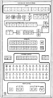Enables the program control display register to be loaded. Positions 20 through 25 of the accumulator data word are loaded into positions P40, P20, P10, P4, P2 and P1, respectively, of the program control display register, which in turn light the corresponding lamps on the PTC's Processor Display Panel depicted to the right (click to enlarge). | ||||||||||||||||||||||||||||||
| 206 |
Set interrupt latch 14 |
||||||||||||||||||||||||||||||
| 210 |
Enables one of six output discretes to be
generated. Discretes 1 through 6, respectively, are
controlled by positions 25, 24, 23, 22, 21, and 20 of the
accumulator data word. I believe these are the same
bits which can be read back with CIO 214 (bits
22-17). They may also light the lamps labeled D6 through D1 on the PTC's Processor Display Panel depicted to the right (click to enlarge). Finally, I believe that the outputs have specific functions in terms of the PTC hardware external to the CPU. While these functions are completely undocumented, the PAST program's source code uses them in various ways. I haven't yet determined how to reconcile the various uses, which aren't necessarily self-consistent — it's hard to tell! — but here's a summary of what the code seems to say::
|
||||||||||||||||||||||||||||||
| 212 |
Set interrupt latch 1 |
||||||||||||||||||||||||||||||
| 214 |
Transfers the PROG REG A data word into
the accumulator. PROG REG A is a set of 26 toggle
switches which are part of the PTC's Processor Display
Panel, depicted to the right (click to enlarge). The
original documentation is by no means clear, but here is my
interpretation of its explanations. Except for the toggles I mark below as GATED, the states of the toggle switches are simply read directly by CIO 214, with OFF (down) giving 0 and ON (up) giving 1. The interpretations are therefore software-dependent and essentially arbitrary. There are a few cases in which the PAST program uses certain toggles in a systematic way, and those are indicated below. In contrast, the GATED toggles are read as 1 when ON, but when OFF allow the CPU to instead read the indicated signals generated elsewhere in the PTC, which could each be either 0 or 1 at any given time.
|
||||||||||||||||||||||||||||||
| 216 |
Set interrupt latch 2 |
||||||||||||||||||||||||||||||
| 220 |
Transfers the PROG REG B data word into
the accumulator. PROG REG B is a set of 26 toggle
switches which are part of the PTC's Processor Display
Panel, depicted to the right (click to enlarge). It appears to me that the states of the switches are simply read directly by CIO 220, with OFF (down) giving 0 and ON (up) giving 1. The interpretations are therefore software-dependent and essentially arbitrary. |
||||||||||||||||||||||||||||||
| 223 |
TBD | ||||||||||||||||||||||||||||||
| 224 |
Undocumented, but from the
PAST program test procedures (see address 0-03-1-101), it
appears to me that the SIGN bit and bits 1-14 set interrupt
latches for all bit positions in which ACC has a
1; i.e., they logically OR the PTC's interrupt-latches
1-15. Notice that INT 16 is not affected. But also (see address 0-03-1-332 in the PAST program), bits 15-25 are used as well. Those 11 bits also seem to logically OR the PTC's interrupt-latches 1-11. |
||||||||||||||||||||||||||||||
| 230 |
TBD |
||||||||||||||||||||||||||||||
| 233 |
TBD | ||||||||||||||||||||||||||||||
| 234 |
As far as I can tell, this is
completely undocumented, so anything I have to say about it
is based on pure guesswork (and the desire for the self
tests in the PAST program to succeed rather than
fail). I think this may output a value to a 26-bit
shift register that subsequently shifts the data left at a
rate of one bit per machine cycle. In the original PTC
hardware, the shift register may be used to serialize data
for display on the PTC front panel, when the DISPLAY SELECT
rotary switch was in the TRS detent. Further, the current value of the shift register may possibly be read back with a CIO 001 instruction for test purposes. Thus if successive instructions of CIO 234 and CIO 001 are used, the latter should read back the data the former wrote out, shifted left by one bit position. If true, this would be an extra capability of CIO 001, in addition to the interrupt-control function described earlier. |
||||||||||||||||||||||||||||||
| 240 |
Lights the PROG ERR (PROGRAM ERROR) lamp
on the PTC's Processor Display Panel, depicted to the right
(click to enlarge). There is no way to
programmatically reset the PROG ERR lamp. The lamp is
part of the PROG ERROR/SYNC ERROR pushbutton indicator, and
the lamp is turned off by pressing the pushbutton on the
panel. (The SYNC ERROR lamp, though physically part of
the pushbutton, is not reset by this action; it is an
independent indicator and has a separate reset mechanism.) |
||||||||||||||||||||||||||||||
| 243 |
TBD | ||||||||||||||||||||||||||||||
| 250 |
The only documentation of CIO
250 comprises the following cryptic comments from the
PAST program source code:
This appears to relate to the use PRS
instructions when the printer is in octal mode. In
that case, each PRS instruction causes 9 octal
digits and 3 spaces to print. The octal digits print
at times 1 through 9, while the spaces print at times 10
through 12. When CIO 250 has been used to
inhibit the check bit "at 10,11,12" time", it means that
parity bits will not be generated for the 3 blank spaces. |
||||||||||||||||||||||||||||||
| 253 |
TBD | ||||||||||||||||||||||||||||||
| 263 |
TBD | ||||||||||||||||||||||||||||||
| 264 |
There is no documentation
I've found. I've looked at the instances of CIO
264 in the PAST program's source code, and the only
ones I find occur immediately after use of CIO 210
to activate discrete outputs 1, 2, and 3 in the course of
printer-peripheral operations, at which point those discrete
outputs apparently have the following interpretations:
Because CIO 264 is used only in blocks of the
PAST program whose comments indicate that it is testing
what happens in the case of printer parity errors, my best
guess is that CIO 264 latches these values into
a separate set of flip-flops, which are then used by the
PTC hardware to simulate that printer parity errors have
occurred. Such errors would otherwise be impossible
to simulate in software and would require physical
modifications to the printer electronics. The effect
I see (in the PAST program) is that certain bits in the
interrupt latch are set after a subsequent PRS
instruction. In other words, one latches the desired
bits using CIO 264, performs a PRS to
print, then reads back the interrupt latch with CIO
154, and tests bits read back from the interrupt
latch to verify that they indicate the proper printer
error. I have no rationale for the specific bits
that are set, other than that I have observed them
empirically. Indeed, they seem rather arbitrary, and
I don't intend to specifically document them here.
Moreover, once a particular self test has been initiated —
test routine 5 is the specific test in which CIO 264
occurs — the PAST program then runs the test repeatedly
until manually canceled, and yet does nothing to reset the
contents of CIO 264 for test runs subsequent to
the first run, as far as I can see. And yet they must
be reset, or else all subsequent tests would fail due to
the contents of the CIO 264 latch being
unexpected. The emulation handles this by resetting
those latched bits every time the printer's mode is
changed from BCD to octal or vice-versa. It's easy to see that this behavior I've described is a
particularly weak aspect of the PTC emulation, likely to
exist only in my imagination rather than correspondending
to what the original hardware did. I hope the
question may eventually be resolved by analysis of the PTC
electrical schematics. |
||||||||||||||||||||||||||||||
| 303 |
TBD | ||||||||||||||||||||||||||||||
| 313 |
TBD | ||||||||||||||||||||||||||||||
| 323 |
TBD | ||||||||||||||||||||||||||||||
| 333 |
TBD | ||||||||||||||||||||||||||||||
| 343 |
TBD | ||||||||||||||||||||||||||||||
| 353 |
TBD | ||||||||||||||||||||||||||||||
| 453 |
TBD | ||||||||||||||||||||||||||||||
| 603 |
TBD | ||||||||||||||||||||||||||||||
| 613 |
TBD | ||||||||||||||||||||||||||||||
| 623 |
TBD | ||||||||||||||||||||||||||||||
| 633 |
TBD |
There are up to 16 external interrupt sources for the PTC.
Interrupts of the first 15 types are generated by the circuitry of
the PTC that corresponds to an LVDA, and is latched in the LVDA,
whereas the 16th type is generated by a pushbutton ("I16") on the
PTC control panel.
When one of these interrupts occurs, assuming that interrupts
have not been inhibited, the following actions occur:
(A lot of information in this section is abstracted from the Astrionics
System Handbook, chapter 6, "Radio Command Systems".)
The term up-data refers to commands transmitted from
mission control to the LVDC/LVDA.
As transmitted, the standard command-word format consists of 35
bits:
The latter two sets of bits are interspersed within the message,
and thus are not transmitted in the specific order shown above.

However, the as-transmitted format of the data isn't really very
relevant to how the LVDC and its software relate to the up-data,
since only a portion of the transmitted bits reach the LVDC
software — specifically only some of the bits from the final group
of 18 — and even then they don't always reach the LVDC in the
exact form they are transmitted. Thus, let's narrow our
discussion of the up-data to just the LVDC's perspective.
The 18 control&data bits of the message are further
categorized as:
Similarly, there are two transmitted "interrupt bits" (see the
image above). These cause an interrupt to occur in the LVDC,
which I believe is designated in the
interrupt table given earlier as bit-position 4, Command
Receiver Interrupt.
Finally, the 14 remaining bits actually represent just 7 bits of
actual information, since each bit appears both in its normal form
and in its logically-complemented form for the purpose of
error-detection.
 Refer to section 6.2 of the
Astrionics System Handbook for more detail, but the LVDC
software accesses the received command using the following general
steps:
Refer to section 6.2 of the
Astrionics System Handbook for more detail, but the LVDC
software accesses the received command using the following general
steps:
The command word read using PIO 043 has the format
shown in the illustration to the right. As mentioned above,
there are 7 actual data bits, but they appear twice each:
Once "normally", and once inverted. Besides that, there is a
"sequence bit" which also appears normally (bit 8) and inverted
(bit 1). This bet helps to make sure the command words have
been received in an appropriate order. The sequence bit is 0
for the mode command word, then 1 for the first data command word
(if any), and then it just toggles between 0 and 1 for each
subsequent data command word received. When the next mode
command word is received, the sequence bit goes back to 0 and the
pattern repeats.
Units of angular measurement:
For most internal purposes, the source code typically measures
angles in a unit called a pirad. I can find no
reference to any unit by this name outside of the LVDC source
code, nor does the LVDC source code choose to define it in the
program comments. However, from the usage, it seems pretty
clear that
1 pirad = 180° = π radiansAnd then there are ladder units. They are undefined, of course, but I suspect this is the form required for outputting angular commands to external hardware:
1° = 1/0.06 ladder unitsThere are also references to angles measured in 2016 fine units, again undefined. Apparently, the "fine" refers to "fine resolvers", and thus is likely the form in which the angular data is delivered to the LVDC from the resolvers. At any rate, it appears that
1° = 2016/5.625 fine unitsFinally, there are references to backup units, which are (you guessed it!) undefined. It appears that
1° = 2016/180 backup unitsUnits of time: The source code sometimes refers to a unit of time measurement it calls qms, but does not define. I suspect this is the unit of measurement in which the real-time clock delivers data to the LVDC. Apparently,
1 ms = 1/0.24609375 qmsIn other words, "qms" probably stands for "quarter millisecond".
1 ms ≈ 4.063492 qms
By the way, these observations about columnar alignment don't
relate to the new assembler (yaASM.py), which does not generally
enforce or use the columnar alignment in any way, other than to
recognize that column 1 is special. (Exception: The BCI
pseudo-op used in PTC source code is special and does
require column alignment.) I don't know if the original
assembler actually cared about the columnar alignment, or whether
the alignment I've observed is simply a convention.
The LVDC assembler is a macro assembler, meaning that the
language it processes has a variety of constructs intended to make
coding easier and more manageable but which aren't directly
related to the internal characteristics of the LVDC CPU.
These constructs are all resolved and removed from the code by a
dedicated preprocessor pass prior to any assembly of actual LVDC
instructions or allocation of LVDC memory. The various
preprocessor constructs that appear in LVDC code are described in
this section.
The preprocessor itself operates in a single pass, and therefore
any symbols or macros it uses must have been defined prior in the
source code to such use. I don't think that any of the
features mentioned in this section are used the PTC source code
available to us, so it's possible that the early versions of the
assembler used for PTC didn't have a preprocessor at all.
CALL ARG1,ARG2which the preprocessor replaces by a pair of actual instructions,
CLA ARG2All three lines appear in assembly listings, but the CALL is treated as a comment and the other two have a '+' character printed next to them to show that they're there due to the expansion of the macro.
HOP ARG1
CALL ARG1,ARG2,ARG3instead expands as
CLA ARG3and thus calls a subroutine with two input arguments.
STO 775
CLA ARG2
HOP ARG1
NAME MACRO ARG1,ARG2,...Once defined, NAME can be used to invoke the associated macro.
... code using the symbols ARG1, ARG2, and so on ...
ENDMAC
CALL MACRO ARG1,ARG2This might be invoked, for example, as
CLA ARG2
HOP ARG1
ENDMAC
CALL MYFUNC,Xand would be expanded as
CLA XVarious features commonly used with macros (and described below in the section on pseudo-ops) are IF/ENDIF, UNLIST/LIST, EQU/REQ, and SPACE. One feature not discussed later that can be used in macro definitions is the counter string, &C1. This is a 3-decimal-digit counter that begins with a value of 000, and increments at the end of any macro which happens to use &C1. In other words, within the first macro expansion using &C1, it has the value 000, within the next such expanded macro it has the value 001, and so on. It can be used to create and reference labels which are good within any given macro expansion, but which don't overlap with any other macro expansion. The sample macro above doesn't use &C1, so expanding that macro wouldn't increment the counter. But suppose instead that the macro definition were written as:
HOP MYFUNC
CALL MACRO ARG1,ARG2If (say) this version of CALL were the the 7th, 9th, and 12th macro expansions actually using &C1, then the label for the CLA instruction would be CAL006, CAL008, and CAL011 for the respective expansions. If &C1 were used multiple times within the same expansion, it would have the same value every time; it only differs within different expansions. The naming of &C1 would seem to imply that there may be multiple counters of this type (such as &C2, &C3, and so on), but I've not seen them in actual LVDC code and can't imagine any use for them, so the modern assembler supports only &C1. In AS-512 and AS-513 LVDC code, the root name for program labels local to the macros is often D.L, rather than the root CAL I used above in the sample macro, so that many macro definitions appear to have program label named D.L&C1, which thus expand to D.L000, D.L001, D.L002, and so on.
CAL&C1 CLA ARG2
HOP ARG1
ENDMAC
Aside: In 1960's-era IBM 360 Basic Assembly Language (BAL), there was a "system variable" called &SYSNDX, the "macro instruction index", that corresponds pretty closely to our &C1. Admittedly, IBM-FSD LVDC assembly language is not IBM 360 BAL, but I imagine that the original LVDC assembler was likely written by people who had helped write the BAL assembler. Even if not, they would have been very familiar with BAL, and it seems to me that they would have mimicked BAL's features when it was appropriate to do so, rather than rethinking them unnecessarily.It is unclear whether macros can be nested. There are no cases of nested macros in any currently-available LVDC code.
Some differences were that &SYSNDX incremented for each expanded macro rather than just for the ones using &SYSNDX, and that it provided 4 digits rather than just 3. As it happens, there are more than 1000 total macro expansions in AS-512 source code, so if &C1 were to increment with each macro expansion like &SYSNDX, it would in fact need 4 digits. But considering the fact that symbols in LVDC assembly language are only 6 characters long (vs the 8+ characters in IBM 360 BAL), devoting 4 characters to &C1 could be an inconvenient naming limitation. Whereas because &C1 only increments when needed, it only reaches 128 in AS-512, comfortably within 3 digits. This is perhaps the reason that LVDC assembly language has &C1 (with its attendant properties) rather than sticking with the pre-existing &SYSNDX (with its).
Aside: In the afore-mentioned IBM BAL, macros could indeed be nested, which hints that the LVDC assembler may have been able to nest them as well. The modern LVDC assembler supports nested macros too, though at this writing macro-nesting is an untested feature.Pseudo variables: "Pseudo variables" are named numeric constants known only by the preprocessor. Any usages of such pseudo variables are replaced by numeric literals by the preprocessor, and thus none of them remain in the code by the time the actual assembly process begins. This implies that the namespace for pseudo variables is distinct from that for left-hand symbols in general, so a pseudo variable can have the same name as a block of code or a data variable in memory without overlap.
NAME EQU (EXPRESSION)In the operand here, the parentheses are literal and must always be present. EXPRESSION is an arithmetical expression involving numeric literals, arithmetical operators ("+", "-", "*", "/", and "**"), parentheses, and other (previously-defined) pseudo variables. For example,
OMEGA EQU (.72921141E-4)In general, parenthesized expressions involving pseudo-variables like this can appear anywhere in LVDC source code, and is replaced by the preprocessor with the numeric literals. Except for appearing as left-hand symbols in EQU statements, pseudo variables appear only with such parenthesized expressions, or in tests for conditional assembly (see below). Actually, the original assembler may have implemented a simpler expression evaluator than the modern assembler. For example, I've seen no LVDC source code that has parenthetical expressions (beyond the outer parentheses), so I don't really know if the original assembler supported them or not.
RWCP EQU (OMEGA*6373377*.87993)
(EXPRESSION)BnThe optional scaling factor doesn't really make sense if it were used in the EQU statements defining the pseudo-variables, since the purpose of the scaling factor is really a relationship between the logical value of the number and the physically-pragmatic pattern of bits stored in memory. Nevertheless, the assembler allows any expression to be thusly suffixed by a scaling factor, even in the EQU statement itself.
... Code block 0 ...then COUNT would be undefined while "Code block 0" was being assembled, but would have the value 1 while "Code block 1" was being assembled, 2 while "Code block 2" was being assembled, and so on. Among the LVDC program listings we have, this feature is not present at all until AS-512, and doesn't begin to be really exercised until AS-513, in which there are pre-processor constants that are REQ'd within macros, causing each expansion of a macro to be quite different than the previous expansion(s) of superficially the same macro. When you combine this feature with the concept mentioned earlier that pre-processor constants form a different namespace than variable names and program labels, then you can have a symbol appearing both namespaces, some of whose instances are subject to being REQ'd and some of which are not. And no, that's not just a theoretical concept; AS-513 has several such symbols, some of them performing their confusing magic within macros. And I do mean confusing.
COUNT EQU (1)
... Code block 1 ...
COUNT REQ (COUNT+1)
... Code block 2 ...
COUNT REQ (COUNT+1)
... Code block 3 ...
Aside: I have no insight as to how the original LVDC assembler implemented this concept. As far as the modern assembler is concerned, however, whenever it sees such an EQU or REQ, it implements it as what I call a "mangled" constant: The "COUNT EQU (1)" in the code above does indeed create "constant" called COUNT whose value can later be reassigned by REQ's at will. But it also creates a "mangled constant" called COUNT#000, having the value of 1, whose value cannot be reassigned. When it encounters the first "COUNT REQ (COUNT+1)", it does update the value of COUNT to 2, but it also creates a mangled constant called COUNT#001 with an unchangeable value of 2. And similarly, the assembler subsequently creates the mangled but true constant COUNT#002 with a value of 3, and so on. Actually, the assembler will reuse symbol names that have matching values, so the numerical suffix isn't necessarily related to the order in which the symbols were defined. But regardless of that, when you look at an assembly listing produced by the modern assembler, you'll find it strewn with references to COUNT#000, COUNT#001, COUNT#002, and so on, whereas the assembly listing output by the original assembler merely has COUNT in those places.Conditional assembly: Code can be conditionally retained or discarded by the preprocessor the basis of a test, with the syntax
You may wonder how these not-necessarily-constant constants are reflected in the listing of the symbol table emitted by the assembler? Well, the assembly listings we have that were created by the original assembler for AS-512 and AS-513 don't actually contain symbol tables! Or more accurately, what passes for a symbol table in those original assembly listings doesn't give you the values of any of the constants or the addresses of any of the variables or program labels, but instead simply tells you (by line number) where the symbols are referenced in the listing. And the pre-processor constants aren't even included anyway. This seems to be a pretty curious way of creating a symbol table, but the times have changed (a lot!), so who am I to say what was useful for LVDC programmer circa 1970? Besides, perhaps there were JCL options or something that controlled the type(s) of symbol table omitted, and we just happened to get the settings I personally don't like too much. This notion is bolstered by the observation that the contemporary assembly listings for AS-206RAM and PTC ADAPT SELF-TEST do indeed contain symbol tables in the sense I mean, though they do not appear to include the pre-processor constants either. The modern assembler, on the other hand" does indeed produce a symbol table with actual addresses of variables or program labels and actual values of pre-processor constants the way I like them. (Who'd have guessed?) In those tables, the unmangled symbols (like COUNT) are simply omitted from the table entirely since their values can change (unless they were defined via DEQD rather then EQU/REQ, and hence aren't subject to mangling), but the mangled names (like COUNT#000 or COUNT#001) show the (unchanging) values just as you'd expect them to.
Alas, I'm not sure what all of the syntactical variations on the CONDITION are, and can only report those found in surviving LVDC source code, which at this point means PTC ADAPT SELF-TEST, AS-206RAM, AS-512, and AS-513. The variations I've seen are:IF CONDITION
... code ...
ENDIF
PSEUDOVARIABLE=(EXPRESSION)For example, in first of these forms, if the value of the specified PSEUDOVARIABLE is equal the evaluated EXPRESSION, then enclosed code is retained by the preprocessor, and is thus eventually assembled. If not, then the enclosed code is discarded. The modern assembler supports those observed variants listed above, as well as the so-far unobserved variants
PSEUDOVARIABLE<(EXPRESSION)
PSEUDOVARIABLE>(EXPRESSION)
(EXPRESSION)>(EXPRESSION)
(EXPRESSION)=(EXPRESSION)
(EXPRESSION)<(EXPRESSION)
(Technically, what I'm calling the "assembly pass" here is really
implemented in the new assembler, yaASM.py, in two successive
passes, known the "discovery pass" and the "assembly pass".
The former associates all program labels and variable names with
physical addresses, while the latter performs the actual assembly
using the now-resolved addresses. That detail is totally
irrelevant and transparent to the user, but would be necessary
information to anybody modifying yaASM.py itself.)
Instruction operands: Operand formats differ for
some CPU instruction types, but most of them require a variable (a
word in data memory), and conform to a pattern in which there are
several allowed variants for specifying the operand:
Aside: The "=H'..." construct is occasionally through rarely encountered with a suffixed single-quote, a là "=H'...'". This variation doesn't affect the produced object code. It's interesting, at least to me, to speculate about which of these alternatives (i.e., with or without the trailing quote) were envisaged at the time as the preferred syntax. Recall that we have no documentation of any kind about the original assembler, and therefore have no choice but to speculate concerning its features. Though it's tempting to suppose that "=H'...'" was the preferred form and thus that "=H'..." was merely a very common shortcut, I suspect the opposite. My guess is that the "=H'..." was the only syntax recognized by the assembler, and that if a trailing single quote was encountered by the assembler it was just processed as the first character of the comment field. In other words, the single-quote only accidentally appeared to be part of the operand in the assembly-listing printout. Actually, it's fun to note that all examples of the suffixed quote appear in AS-513, and while there are 7 lines altogether in which it appears, those seven lines come from just two very-similar punch-cards that were apparently duplicated and reused, spreading their influence across multiple lines. Which, it seems to me, serves to reinforce the notion that the trailing suffix was merely something that accidentally worked out as the original programmer intended as opposed to being regarded as proper syntax. By the way, the affected lines in the original AS-513 code read as follows:
CLA =H'M.AR10' RETURN TO NOMINAL PATH NEXT PASS
CLA =H'M.AR20' SET HOP CONSTANT FOR THRUST CHANGE EVENTIn regard to the juxtaposition of the operand and comment, required by the speculation above, note that the original and modern assemblers differ in that the modern assembler requires at least one space between the operand field and the comment field. Whereas the original assembler allowed the operand field and comment field to run together with no intervening spaces if the first character of the comment was not something that could syntactically appear within an operand. This can be inferred from a single instance found in surviving LVDC source code in which the operand and comment do indeed run together:
P.OGY EQU (-.014226168)M/SEC**S,INITIAL GRAVITY ACCELERATION
ARGX12 OCT 12345
...
CLA ARCX12 MISTYPED "ARGX12" AS "ARCX12"
Except for the HOP instructions, the other CPU
instructions that transfer program control target a location in
the current IM/IS rather than a variable in the DM/DS, and thus
require a different type of operand. Those instructions (TRA,
TNZ, TMI) thus have operands in one of the
following formats:
Other exceptions:
| Pseudo-op |
Description |
|||||||||||||||||||||||||||||||||||||||||||||||||||||||||||||||||||||||||||||||||
|---|---|---|---|---|---|---|---|---|---|---|---|---|---|---|---|---|---|---|---|---|---|---|---|---|---|---|---|---|---|---|---|---|---|---|---|---|---|---|---|---|---|---|---|---|---|---|---|---|---|---|---|---|---|---|---|---|---|---|---|---|---|---|---|---|---|---|---|---|---|---|---|---|---|---|---|---|---|---|---|---|---|---|
| BCI ^text$ |
This pseudo-op appears only
in PTC code. This pseudo-op encodes the text argument into consecutive memory locations. It could be used for preparing messages for printing on either the printer peripheral (see the PRS instruction) or the typewriter peripheral. The text operand is delimited by a leading '^' and trailing '$', which are not themselves encoded into memory. The assembler right-pads the text, if necessary, until it is a multiple of 4 characters ending in at least 2 spaces. Note: The leading carat character (^) in text was not used in the original Apollo-era source code. It has been added to the assembly-language syntax for the convenience of the modern assembler (yaASM.py). That's because the text argument sometimes begins with a space character, and since the modern assembler does not enforce strict columnar alignment of the operand, it would otherwise have no way to ascertain where text begins. The original assembler, on the other hand, did enforce strict columnar alignment, and therefore required no delimiter at the beginning. Encoding of the text strings involves both BA8421 encoding, used for IBM 1400 series printers, and EBCDIC encoding, used for later IBM printers like the ones that printed the original LVDC and PTC assembly listings. The BA8421 encoding scheme can be found at this wikipedia link, but it has the codes in a hexadecimal form that are a bit confusing to relate to the octal codes used in LVDC assembly language, so below I've reformulated the table in terms of two-digit octal codes instead.
In case it isn't obvious from the table above, code 00 is
a blank space. The yellow-shaded characters have
encodings in the PAST program octal listing that don't
match the BA8421 encoding from wikipedia for some reason,
so the table above has been doctored to match the
assembler. The gray-background codes are
non-printable, and the emulation displays them as '
▯' when printed (for
example, using a PRS instruction). Actually, while the assembler, the PTC printer, and the
PTC typewriter all use characters encoded in BA8421 to a
certain extent, and they all conform in terms of
alphanumerics and the blank space, they differ among
themselves to a certain extent as far as the special
(non-alphanumeric) characters are concerned. Rather
than reproduce all of those tables here, I'd simply refer
you to our PTC front-panel emulation program, yaPTC.py, in
which the table above is appears as the array called
BA8421, the table for the printer peripheral appears as
"BA8421a", and the table for the typwriter peripheral
appears as "BA8421b". I have googled some of weirder characters, since it wasn't obvious why they would be included in such a limited repertoire of symbols, and unexpectedly got some historical information about them that may actually be applicable to their usage in the PTC:
As far as the octals assembled for BCI are concerned, each of the memory locations allocated by the pseudo-op encodes exactly 4 characters of the message. The first character of the string occupies the two most-significant octal digits of the first memory location, the next character occupies the next lower two octal digits of that memory location, and so on. Thus, encoding 4 characters requires 24 bits per 26-bit memory word. The least-significant bits of each memory word are always unused and are 0. For example, when the following is assembled, BCI ^TYPE OCTAL CHARACTERS$the assembler notes that "TYPE..." has the BA8421 character octal character codes 23, 30, 47, 65, ..., and thus the assembled octal encoding of the string is 233047650, .... That's pretty straightforward. In the printed assembly listing output, though, things are much less straightforward. While the original assembler did print out a representation of how the text string assembled, presumably intended to be helpful to the programmer, what it ended up printing was a pretty goofy representation of the original text. For example, consider the example BCI usage mentioned above, which comes from page 3 of the PAST program. The assembly listing displays the assembled memory locations as CHPVAs nearly as I can guess, the assembler derived this nonsensical representation roughly by the following procedure:
Yes, it seems silly to me too. Don't blame
me. Perhaps there's some amazing rationale for this
seemingly-loopy procedure that I simply don't
understand. If you know of one, let me know. I
suspect it's just a bug, but it seems ridiculous that a
bug as ridiculous as printing out "CHPV..." in place of
"TYPE..." went unnoticed back in the day! The modern
assembler (yaAGC.py) by default does not reproduce
this behavior — i.e., by default it prints out a correct
human-readable representation — but if you're a purist who
insists on seeing the ridiculously buggy printout instead,
you can use the assembler's --past-bugs
command-line switch to restore the original behavior and
enforce the buggy printout. |
|||||||||||||||||||||||||||||||||||||||||||||||||||||||||||||||||||||||||||||||||
| BLOCK n |
The BLOCK pseudo-op tells the
assembler not to break up the succeeding n
instructions in memory. For example, you might use BLOCK
for particularly time-sensitive code, to insure that it
really takes the amount of time you've designed it to
take. Another common use for very short blocks is to
protect instructions like "TMI *+m", for
which it would be disastrous if the assembler were to insert
any extra instructions or perform a memory-sector change
between the instruction and its targeted destination.
Recall that the assembler transparently inserts instructions
like TRA or HOP in order to detour
around already-allocated memory or prevent memory-sector
overflows, and what the BLOCK pseudo-op does is to
prevent any such insertions within the block. I'm not certain I understand the full scope of the actions BLOCK might take under various circumstances. (Realize that we have no documentation of any kind concerning the characteristics of the pseudo-ops and assembler directives I'm describing for you, and thus I am simply giving you my inferences based on examination of LVDC source code and my successes vs failures in implementation of the modern LVDC assembler.) But here's what I believe is going on:
BLOCK is used only for blocks of instructions (which are one syllable wide), and is not used for blocks of variables (each variable being two syllables wide). See the TABLE pseudo-op for the latter usage. |
|||||||||||||||||||||||||||||||||||||||||||||||||||||||||||||||||||||||||||||||||
| BSS n |
This pseudo-op simply allocates n
words of memory. They are loaded with the value 0. |
|||||||||||||||||||||||||||||||||||||||||||||||||||||||||||||||||||||||||||||||||
| CEJECT n |
This is a conditional EJECT, which
moves to the next page of the output assembly listing if
less than n available lines remain on the
current page. It is ignored by the modern LVDC
assembler. See also: EJECT. |
|||||||||||||||||||||||||||||||||||||||||||||||||||||||||||||||||||||||||||||||||
| DEC number |
This pseudo-op allocates one word of
memory, and loads the decimal number in
it. |
|||||||||||||||||||||||||||||||||||||||||||||||||||||||||||||||||||||||||||||||||
| DEQD M,S,LOC DEQS M,S,LOC |
This preprocessor pseudo-op is a variant
of EQU (see below). It defines a
pseudo-variable, named according to its left-hand symbol,
referencing a specific fixed location in memory, specified
by its module, sector, and offset, which are literal octal
constants. Since the pseudo-variable exists only in
the preprocessor, it does not store anything at that
location, but merely defines a symbol representing that
particular memory configuration. The symbol for the
pseudo-variable created in this manner did not appear in the
symbol tables produced by the original LVDC assembler, but
do so in symbol tables produced by yaASM.py. As far as
I know, those pseudo-variables are used only as operands of
CDS instructions (see above). DEQD differs from DEQS in that the former specifies a duplex memory configuration whereas the latter specifies a simplex configuration. As far as the LVDC and PTC code available to us is concerned, DEQS is used only once, in one place in AS-206RAM. |
|||||||||||||||||||||||||||||||||||||||||||||||||||||||||||||||||||||||||||||||||
| DFW instruction1,operand1,instruction2,operand2 |
Assembles a constant which can
subsequently be used as the operand of an EXM
instruction (see earlier). Note that EXM
cannot access such a constant in-place — i.e., not at the
location where the DFW pseudo-op stores it —
rather, requiring that the constant be moved at runtime to
one of the addresses 200, 240, 300, or 340 in residual
memory. Naively, what this pseudo-op does is to simultaneously assemble two instructions (remember, each instruction assembles into one "syllable" and that two syllables comprise a single word of memory), allocate a word of memory, and store the assembled pair of instructions in it. However, because of the way EXM uses such assembled instructions, there are a few details which differ from this simple model. Specifically, the residual bit (A9) and least-significant bits (A2, A1) in operand1 and operand2 are modified from what you expect to include certain bits from the DS (data sector) applicable to operand1 and operand2. The documentation for EXM should make it clear what those changes are. |
|||||||||||||||||||||||||||||||||||||||||||||||||||||||||||||||||||||||||||||||||
| DOG DM,DS,DLOC DOGD DM,DS,DLOC DOGD DM,DS, DOG SYMBOL DOG *,*[±n],*[±m] |
While the modern LVDC assembler supports
all of the forms shown to the left, I have no idea of how
broadly these various pseudo-op forms were supported by the
original assembler, because of the LVDC or PTC source code
available to us:
Regarding the DOG SYMBOL form, one might suppose (as I did), that the SYMBOL must be a location in data memory, such as a variable or a literal constant. That's the usual case, and in that case the behavior is exactly as one would guess. But there are exceptions: There are very rare cases in which SYMBOL is associated with a location in code. In this case, DOG assigns the assembler's internal DM, DS, and DLOC from the IM, IS, and LOC associated with the SYMBOL. Aside: The behavior when SYMBOL is in instruction space is inferred from just two examples,Possibly there was a DOGS pseudo-op as well (differing in that it pertained to a simplex memory configuration rather than a duplex one), but I have not encountered it in actual code and for that reason I don't support it in the modern assembler. |
|||||||||||||||||||||||||||||||||||||||||||||||||||||||||||||||||||||||||||||||||
| EJECT |
The existence of this assembler directive is
somewhat speculative, because by its very nature it does not
appear in assembly listings (which are presently our only
sources of LVDC source code). However, there is
circumstantial evidence that some assembler
directive of this nature was used, and my personal suspicion
is that it was EJECT. My description here
relies on contemporary manuals for IBM 360 Basic Assembly
Language (BAL). For the original LVDC assembler, the EJECT directive performed a page feed to move to the top of the next printed page. Note that the EJECT line itself was not printed in the assembly listing. The modern LVDC assembler effectively ignores EJECT directives. See also: TITLE, CEJECT. |
|||||||||||||||||||||||||||||||||||||||||||||||||||||||||||||||||||||||||||||||||
| ENDLIT |
See LIT below. |
|||||||||||||||||||||||||||||||||||||||||||||||||||||||||||||||||||||||||||||||||
| EQU (expression) REQ (expression) |
Defines a "pseudo variable" used only by
the assembler's preprocessor pass. The parentheses are
literally present. The expression is arithmetical in
nature, and can involve decimal numbers, other pseudo
variables, and the operations +, -, *, or /. The lines
are evaluated in a single pass, so pseudo variables used in
expressions need to have been defined earlier in the source
code. For example,PI EQU (3.1415927)Note that when pseudo variables are used they are always within arithmetical expressions that are enclosed in parentheses, (expression), such as: PI DEC (PI)B0These examples also illustrate the important point that the namespace used for these pseudo variables is distinct from the namespace used for left-hand symbols naming variables or blocks of code. There are indeed symbols that have this double usage. For example, in the AS-206RAM program, "GEPLON EQU (15)" is at line 006600, while "GEPLON DEC (GEPLON)B10" is at line 016820. REQ differs from EQU only in that it redefines an already-EQU'd assembly constant to have a different value. With that said, one would suppose that the following conditions might result in assembly errors or warnings:
In fact, these conditions did not result in any error or
warning messages in the original assembler. In
particular, when multiple EQU's are encountered
for the same assembler constant, the assembler seems to
simply silently ignore all of them after the first
one. Whether this was a bug in the original
assembler or in my thinking about what's reasonable, I
can't say. The modern LVDC assembler mimics the
original assembler in this behavior. |
|||||||||||||||||||||||||||||||||||||||||||||||||||||||||||||||||||||||||||||||||
| FLOW COL71,LHS,OPCODE,OPERAND,DEBUG,CP,CM |
This directive is
of my own invention, is not present in the original LVDC
assembly language, and wouldn't be recognized by the
original LVDC assembler. It is ignored by the modern
LVDC assembler, and does not in any way affect generation of
object code. Rather, it is used by separate software,
the LVDC flowchart generator, for creation of flowcharts
that hopefully correspond somewhat to the structure of the
LVDC source code. The FLOW directive is intended to allow corrections to the flowchart annotations present in the LVDC source code, while leaving the original LVDC source-code lines providing the faulty annotations untouched. Each FLOW directive provides corrections for the original source-code line that immediately follows it. As you can see from the argument structure, 7 separate properties of the flowchart annotations can be corrected for any given source-code line. None of the 7 fields of the directive can contain either spaces or commas, except for the final field (CM), thus no delimiting between the items is needed other than the commas themselves. None of the 7 fields can contain double-quote characters except as described in a moment. Any field which is left empty (i.e., if there are just two adjacent commas with nothing between them) indicates a flowchart annotation which is already correct and does not need to be corrected. Conversely, if you want to forcibly correct a non-empty annotation to become empty, you can surround the associated field with double quotes (as in ,"",). For example, FLOW ,,,,,,would correct none of the annotations of the succeeding source-code line, whereas FLOW "","","","","","",""would correct every annotation of the succeeding line to be blank. As a labor-saving feature, trailing commas can simply be omitted, and it is assumed that the omitted fields are blank. So for example, "FLOW Q" is equivalent to "FLOW Q,,,,,,". The 7 fields are interpreted as follows:
In my experience, the most-common type of correction
would be to add a missing annotation to column 71.
For example, if you had some code that looked like the
following CLA MYVAR IS MY VARIABLE NEGATIVE?it's clearly a test whether the variable MYVAR is negative or not, along with appropriate branches depending on the results of the test. But the flowchart annotations are incomplete, so the flowchart generator (which operates almost entirely from annotations rather than from the code itself) won't draw it that way. In principle, the way this code fragement should have been annotated is: CLA MYVAR IS MY VARIABLE NEGATIVE? QIn many cases, the flowchart-generator software can figure out what was meant in spite of incomplete annotations, whereas the annotations in this example are just too incomplete for it to do so. But, if were to add a couple of FLOW directives, we'd produce the same effect as the nominally-correct annotations and we'd be fine: FLOW QSee also:
|
|||||||||||||||||||||||||||||||||||||||||||||||||||||||||||||||||||||||||||||||||
| FORM a,b,... |
This preprocessor pseudo-op defines to the
assembler (without generating any actual code) the name of a
kind of macro that, when used, will pack a pattern of
bit-fields into a single word-size constant. In the FORM
statement itself, the field-widths (if literal integers) are
decimal, whereas when the macro is used, the values of the
fields (if literal integers) default to being octal.
An example may make all this clearer:MYPAT FORM 2,3,4,5,6,6The first of these lines defines a macro, MYPAT, which can pack a 2-bit, a 3-bit, a 4-bit, a 5-bit, and two 6-bit fields into a single 26-bit field. The LVDC word-size is exactly 26 bits, so the packed bits exactly fit a word. The second of the lines shown above is what invokes the MYPAT macro. It compiles the fields and stores the packed word at the memory location MYCON. In this example, various fields (including the right-most 0 just mentioned) will be as follows in binary notation: 01 010 0011 00100 000101 000110 0or octal 243101214. Where did the 0 at the very end come from? Confusingly, the way the assembler displays word-size constants, the least-significant bit is always 0 (because it's the physical position in which parity is stored), so the constant is actually aligned at bit 27 and appears as exactly 9 octal digits. Because of this, in other words, it will seem in an assembly listing that there's always an unused right-most 27th bit, which is the right-most 0 above. Is it possible for a+b+... to total to something less than 26 bits? There are rare cases of it in existing code, and the unused bits (at right) are all set to 0. The PTC ADAPT Self-Test program doesn't have any FORM statements in it. And for other early code like AS-206RAM, what I've said above is the full story. However, for later code like AS-512 or AS-513, there are several other possibilities for the parameters in the FORM statement:
As an example of DM, DS, and DA
parameters from existing code, AS-512 has the following
items in it:
According to my description above, the invocation of ZRLOC
should thus assemble as the bit-fields
where the final two bits on the right are the unused 26th
bit of the form and the parity bit. In octal this is
311763770, which is indeed precisely what the AS-512
assembly listing tells us appears there. Regarding the parameters for the invocation of an already-defined form, beyond the possibilities described above, they could be parenthesized expressions involving constant values and literals, in case the assembler will compute the expressions. Note that such parenthesized expressions may evaluate to non-integers, such as (2.4*2). While I have a pretty small sample of such lines of code, It appears to me that such floating-point values may be rounded to the nearest integer. At any rate, that's how the modern assembler treats them. Consider the following actual example from AS-512:
We'd expect the invocation of LADDER to
assemble to the following (in binary fields):
As a 9-digit octal number, this is: 101000014And indeed, that's exactly what the AS-512 assembly listing tells us it really does assemble to. |
|||||||||||||||||||||||||||||||||||||||||||||||||||||||||||||||||||||||||||||||||
| HPC SYMBOLNAME |
This allocates a word of memory at the
current location, and stores a HOP constant in it that's
constructed from the operand. In the one-operand variation, the HOP constant is simply the same as that of the symbol whose name is given by the operand. In the two-operand variation, IM, IS, S, and LOC fields of the HOP constant are taken from SYMBOLNAME1, while the DM and DS fields are taken from SYMBOLNAME2. |
|||||||||||||||||||||||||||||||||||||||||||||||||||||||||||||||||||||||||||||||||
| HPCDD arg1,arg2 |
Like HPC (see above), constructs
a HOP constant and stores it at the current location. For all I know, there may be an HPCDS variation as well, differing from HPCDD in applying to a simplex memory configuration rather than a duplex one, but I have not encountered it in practice. |
|||||||||||||||||||||||||||||||||||||||||||||||||||||||||||||||||||||||||||||||||
| LIST |
See UNLIST. |
|||||||||||||||||||||||||||||||||||||||||||||||||||||||||||||||||||||||||||||||||
| LIT ENDLIT |
LIT and ENDLIT appear in
AS-512 and AS-513 source code but not in AS-206RAM or PTC
ADAPT SELF-TEST. To explain them, I need to give you a
bit more information about how the assembler allocates data
memory then you might otherwise like to know about. By
data memory, I mean an area consisting of 26-bit
values that combine memory syllables 0 and 1, versus instruction
memory that consists of 13-bit values each occupying a
single syllable. Roughly speaking, there are two ways of
allocating data memory. The first way is to do so explicitly, under direct control of the source code. This is accomplished by using pseudo-ops such as DEC, OCT, HPC, DFW, BSS, or a predefined FORM, and in principle it gives you complete control and transparency concerning where your data words are stored. The second way is indirect: the assembler notices that it needs a word of memory, finds one that hasn't already been allocated, and then allocates it. When this happens, you have little transparency that it has occurred, and little control over where it occurs. This is a feature of the LVDC assembler, and does not happen at all in the AGC or AGS assemblers, in which the programmer retains complete control, at the cost of some convenience. There are several reasons it may happen in the LVDC assembler, and I won't go over all of them here, but an important case would be an assembly-language instruction like "CLA =5", which means "load the accumulator with a value of 5". However, the LVDC CPU has no such instruction. Its CLA instruction would instead demand an operand that's the address of a variable containing the value it's supposed to load into the accumulator. Thus an "instruction like "CLA =5" is actually functionally equivalent to a pair lines of code something like FIVE DEC 5What the assembler would do when it sees "CLA =5" is to:
Literal memory consists entirely of constants, because there are no symbolic names assigned to the locations in literal memory, and thus you cannot access them using LVDC instructions like STO (unless you happened to know their numerical addresses). Because literal memory is constant — i.e., the values in it do not change — the LVDC assembler tries to be efficient by reusing the values in literal memory if it can. For example, if you have code like the following ...and if each of these instructions has that same accessible data-memory sectors, then the assembler will only allocate a single literal-memory location to hold the 5, and will reuse it for each of these instructions. Now (finally!) that brings us to LIT and ENDLIT. Suppose that for some reason presumably unrelated to the various uses of literal memory, you also have some explicit lines of code such as the following: ...If your intention as a programmer is that these are constants, you might like to add them to the pool of literal memory, so that when the assembler sees something like "CLA =4" or "CLA =5" it will be able to reuse the constants known O4 and O5 instead of allocating new locations to hold 4 and 5. But on its own, the assembler can't do that, because it doesn't know that O4 and O5 are constants; for all it knows, perhaps 4 and 5 are simply the initial values of a variable, and not constant values that can be relied upon for all time. The LIT and UNLIT pseudo-ops are the solution to this little dilemma: LITBy enclosing the definitions of your constants in LIT/ENDLIT, you inform the assembler that that the enclosed locations can be considered as constants that belong to literal memory, rather than as variables, though unlike most literal memory they retain their symbolic labels, the addresses you've assigned them, and their consecutive order in memory. |
|||||||||||||||||||||||||||||||||||||||||||||||||||||||||||||||||||||||||||||||||
| MAT |
Forces alignment for the next memory allocated to a 020-word (octal, or 16 decimal) boundary, and may have something to do with the succeeding words logically forming a matrix. It does not allocate any memory. I.e., any memory it skips past to reach the proper alignment remains unallocated. | |||||||||||||||||||||||||||||||||||||||||||||||||||||||||||||||||||||||||||||||||
| OCT number |
Allocates a word of memory and stores the
given octal number there. |
|||||||||||||||||||||||||||||||||||||||||||||||||||||||||||||||||||||||||||||||||
| ORGDD IM,IS,S,LOC,DM,DS,DLOC |
LVDC only ... not PTC. Sets the instruction-memory and the data-memory assumptions for the next code or data lines to be assembled. The fields within the operand relate to those within the HOP constants, except that while the HOP constant has a single LOC field, the assembler internally maintains separate LOC fields for instruction memory (LOC) and data memory (DLOC). The trailing DLOC is sometimes not specified, so that we are left simply with "ORGDD IM,IS,S,LOC,DM,DS,". In that case, the first previously-unused location in the select data module/sector is used. Actually, even specifying DLOC explicitly does not necessarily imply that the data location is set to DLOC, since if that location has already been used, the next unused location after that will be selected instead, and the assembler generates a warning message. In general, the assembler will reject a LOC field to an address that has already been allocated: the assembler will always advance the counters until reaching the first unused location. There may be an ORGDS variant as well, specifying a simplex memory configuration rather than a duplex configuration, but I have not encountered it in practice. |
|||||||||||||||||||||||||||||||||||||||||||||||||||||||||||||||||||||||||||||||||
| ORG IM,IS,S,LOC,DM,DS,DLOC ORG symbol ORG symbol,symbol2 |
Note that ORG was not used in
AS-206RAM source code. This is functionally almost identical to the LVDC ORGDD pseudo-op, though differing slightly syntactically. Sets the instruction-memory and the data-memory assumptions for the next code or data lines to be assembled. The fields within the operand relate to those within the HOP constants, except that while the HOP constant has a single LOC field, the assembler internally maintains separate LOC fields for instruction memory (LOC) and data memory (DLOC). In the "ORG IM,IS,S,LOC,DM,DS,DLOC" form of the pseudo-op, any of the parameter fields may be left empty. As far as I can tell, any field left empty defaults to 0, except for DLOC. In the case of DLOC, it appears to me that it defaults to the next location after the previous one allocated in the sector. For example, consider the following example code: ORG 1,2,0,3,0,16,20The first 3 OCTs would be at addresses 0-16-20, 0-16-21, and 0-16-22. The final OCT would be address 0-16-23. It should not be inferred that the addresses 0-16-0 through 0-16-17 are completely filled up (as they would be for a similar LVDC pseudo-op ORGDD), because ORG merely increments the preceding address (rather than searching for the first unallocated address as in the LVDC's ORGDD). In fact, it appears to me that ORG with DLOC left empty never goes to DLOC=0, and instead starts with DLOC=1. Moreover, it appears to me that the original assembler had a bug, which we intentionally reproduce in the modern assembler (yaASM.py). The bug is that even if no data words had been allocated between one ORG and the next, the assembler still assumed that a minimum of 1 word had been allocated anyway. Suppose, for example, we were to append the following code to the sample above: ORG 1,2,0,3,0,16,The OCT would be at address 0-16-26, because each of the final 2 ORGs would incorrectly have assumed that at least one word had been allocated prior to it. Here's a selection of actual uses found in PTC software: ORG ,,,,,13,0As far as the "ORG symbol" form is concerned, principles are the same as described, but IM, IS, etc., are taken as being the same as for the already-defined symbol. This form of the pseudo-op does not alter the assembler's internal data-memory pointers DM, DS, and DLOC. Aside: The described behavior with respect to DM, DS, and DLOC is known only from the behavior of ORG V.SST2 at line 026027PK on p. 134 of AS-513. This small block of code also contains rare abnormalities with respect to the behavior of the DOG pseudo-op (see above), so it's possible that my interpretation of what's happening more questionable than usual.As far as the "ORG symbol,symbol2" form is concerned, it appears to me that IM, IS, S, and LOC are taken from symbol, whereas DM, DS, and DLOC are taken from symbol2. The latter two forms appear in later source code like AS-512 and AS-513, but not in earlier source code like PTC ADAPT Self-Test and AS-206RAM, so it's unclear whether all versions of the original LVDC assembler supported them. |
|||||||||||||||||||||||||||||||||||||||||||||||||||||||||||||||||||||||||||||||||
| REQ (expression) |
See EQU. |
|||||||||||||||||||||||||||||||||||||||||||||||||||||||||||||||||||||||||||||||||
| SPACE n |
This means that n blank
lines should be inserted in the macro. Apparently, blank punch cards (for the original assembler) were not a way to insert blank lines, and were simply ignored. The modern assembler mimics that behavior as well. |
|||||||||||||||||||||||||||||||||||||||||||||||||||||||||||||||||||||||||||||||||
| SYN symbol SYN *INS SYN *DAT |
I assume that SYN stands for
"synonym". This pseudo-op requires a left-hand symbol
to precede the SYN on the line, and SYN
defines that left-hand symbol in the symbol table without
allocating any actual memory for it. For example, it
might define a left-hand symbol called MY_LHS by
using a the line like "MY_LHS SYN *INS".Aside: Note that if SYN is the first line in a macro, it won't explicitly appear to have a left-hand symbol in the macro's source code; that's because the left-hand symbol for the first line in the expanded macro comes from the left-hand symbol from the macro's invocation. If that's confusing, perhaps an example would clarify what I mean. Imagine we have the following macro definition:The "SYN symbol" form of the pseudo-op tells the assembler to treat the left-hand symbol as a synonym for symbol. This is similar in concept to EQU, which essentially creates synonyms for numerical constants. But it differs in that EQU is part of the preprocessor while SYN is not, and thus SYN can reference symbol defined anywhere in the source code, whereas EQU can only reference symbol defined earlier in the source code. Further, SYN must reference program labels or variables — i.e., a symbol related to an actual memory address — and this cannot reference symbols like assembler constants; whereas the reverse is true for EQU. Alas, we have no documentation of the original assembler, so the explanation that follows of the "SYN *INS" and form "SYN *DAT" forms is based on my own observations. What SYN *DAT does is to tell the assembler that the left-hand symbol associates with the data-memory pointer of the next instruction or data-allocation pseudo-op the assembler encounters. In most usages in actual source code, this turns out to be the same thing as the assembler's current internal data pointer. But you can't rely on it, because there are cases in which that assumption fails rather badly. The worst case, from my perspective, is the SS1 macro used in AS-512 source code. For illustrative purposes, here's a simple macro I've modeled after just the problematic portion of SS1: MYSS1 MACRONow, macro SS1 is used many, many times throughout the AS-512 source code, but with our simple model macro, here's what just the very first expansion looks like: S.TTB1 MYSS1which expands to S.TTB1 SYN *DATThe code preceding this expansion happens to have left the data-memory pointer set to a location in memory module 2, sector 17. However, the SYN will assign symbol S.TTB1 to module 6, sector 11 instead, because the next data-word encountered comes from the OCT 0, and intervening DOGD does not itself allocate any data memory words even though it does affect the memory pointers. Thus if you had relied upon S.TTB1 to represent an address in module 2, sector 17, you would have been badly mistaken. Perhaps I make too big a deal of this, but I had assumed that the current data pointers were what were relevant and I was mistaken. It took quite a bit of effort eventually to come to an understanding of the actual behavior of SYN *DAT vs a more-simplistic view of it. Aside: It's not clear to me why they may have thought this was reasonable behavior for SYN *DAT back in the day, vs simply using the current data pointer. The only use case, as far as I know, is this ability to assign a label the way it's done in SS1. But an equivalent symbol assignment could have been accomplished just as easily — and perhaps more so! — by rewriting the macro asFor SYN *INS, the left-hand symbol is simply associated with the current instruction pointer of the assembler. I suspect that the intended behavior may be a bit more complex, similar to the next-instruction-encountered behavior just described for SYN *DAT, but there's no usage in actual LVDC source code where these actually differ. (Plus, I've had trouble trying to implement it in the more-complex way, so I'd prefer to pretend that the simply behavior is the intended behavior.) As I mentioned, in no case does SYM actually allocate memory. It merely creates symbols that refer to specific memory addresses, whether or not those memory addresses are actually allocated (by some other means). For example, upon reaching an address referenced by a SYN, the assembler will make no effort to skip over that address. |
|||||||||||||||||||||||||||||||||||||||||||||||||||||||||||||||||||||||||||||||||
| TABLE number |
This informs the assembler that the
succeeding number words of memory need to
be treated together as a group, for certain purposes.
Recall that a "word" comprises a pair of syllables
at a given offset into a memory sector: i.e., a single data
location or a pair of instruction words in opposing
syllables. The operand is a decimal number. As far as I can see, TABLE does not allocate any memory, and does not advance the assembler's internal location pointers. I believe that using TABLE simultaneously provides two features:
TABLE 8which would assure that the BSS and the two HPC's were in contiguous memory. When the table consists of a sequence of data pseudo-ops like BSS, HPC, DEC, or OCT like this, each of which itself allocates one or more words, TABLE is easy to comprehend. However, a table could instead comprise a sequence of instructions, with each instruction occupying a syllable rather than a wide word of memory. So one must question how 2*number instructions are packed within the number words of the table. This is determined by the USE pseudo-op (see below) and ORG pseudo-op (see above). There are instances in AS-512 of TABLE usage both with USE DAT and with USE INST, though it is unclear in the latter case why TABLE was used in preference to BLOCK. At any rate, TABLE itself does not enforce any specific ordering/packing behavior, and it's the programmer's responsibility to handle it. However, the protections afforded by TABLE affect only the lines of code immediately encountered by the assembler after encountering the TABLE itself. But if that's true, how are we then to interpret usages such as the following, in which there are no lines of code that could be affected following any TABLE? ...There are many such cases — generally (or always) involving TABLE 1 — in AS-512 source code. I think that the TABLE directives are being used here only as a convenient way to define symbolic labels (C.NI, C.TCV, and so on) without allocating any memory for them and without necessarily understanding what was eventually going to occupy those locations; those symbolic labels are then used throughout the source code with pseudo-ops like DOG or instructions like CDS to select a data-memory sector, but not with instructions (like CLA or STO) that would expect them to specify a unique memory location. And as I said, TABLE does not advance the assembler's internal memory pointers, so in this example, labels C.NI through C.NZ all refer to the same memory location (and hence the same memory sector). See also: BLOCK. |
|||||||||||||||||||||||||||||||||||||||||||||||||||||||||||||||||||||||||||||||||
| TELD X,Y,Z TELM X |
It appears that by the time of AS-512/AS-513
flight-program development, the user-defined MACRO
called TELEM used in the AS-206RAM flight program
was deemed useful enough to have been replaced by a similar
predefined macro called TELM in the assembler
itself, as assisted by a new pseudo-op called TELD.
The AS-206RAM flight program, developed (presumably) prior to the availability of TELD/TELM, defined TELEM as TELEM MACRO ARG1,ARG2,ARG3where ARG1 is one of several variables into which an HPC constant for an appropriate delay subroutine has somehow been placed. And ARG2 and ARG3, of course, are respectively a variable to be output after the delay has transpired and the number of the output channel itself. The equivalent operation using TELD and TELM would look like this: TELD ARG2,MODE,ARG3The reason ARG1 has disappeared here is that TELD internally generates what TELEM had earlier called "ARG1" by concatenating the literal string "D.HTR" with MODE, which is a single octal digit. Thus what happens as far as the assembler is concerned is that TELD "defines" the telemetry as having the name "ARG2", and internally associates the parameters "D.HTR"+MODE and ARG3 with that name. At some later point when TELM is invoked, the built-in macro is expanded and those associated parameters are substituted into it. That expansion of the built-in macro TELM ARG2 (if MODE were, say, 0) would look like this: BLOCK 3 |
|||||||||||||||||||||||||||||||||||||||||||||||||||||||||||||||||||||||||||||||||
| TITLE 'string' |
The existence of this assembler directive is
somewhat speculative, because by its very nature it does not
appear in assembly listings (which are presently our only
source material for LVDC source code). However, there
is circumstantial evidence that some assembler
directive of this nature was used, and my personal suspicion
is that it was TITLE. My description here
relies on contemporary manuals for IBM 360 Basic Assembly
Language (BAL). For the original LVDC assembler, the TITLE directive simultaneously performed two separate functions:
Note that because of the way the modern assembler
advances to the next "page" only when encountering
so-called modern comments of the form "# PAGE nnn",
TITLE directives must appear before those
comments. Note that the TITLE line itself was not printed
in the assembly listing. Single-quotes and ampersands appearing within the title string
must be treated specially. A single-quote character
must appear as two single-quotes in succession, and
similarly an ampersand must appear as two ampersands in
succession. For example, if the new title was
supposed to be
then the appropriate directive would be
TITLE 'THIS IS MY TITLE && IT''S A VERY GOOD ONE'Note that assembly listings as output by the modern LVDC assembler do not really have "pages" as such, other than for the purpose of documenting the correspondence to the original program listing, because the days when programmers pored over 1000+ page printouts on paper is now long past. Therefore, the modern LVDC assembler effectively ignores TITLE directives. See also: EJECT, CEJECT. |
|||||||||||||||||||||||||||||||||||||||||||||||||||||||||||||||||||||||||||||||||
| UNLIST |
In the available LVDC source code, it appears
to me that UNLIST (and its partner, LIST)
appear only within macro definitions — i.e., between a MACRO
and an ENDMAC. The effect of an UNLIST
is to omit all subsequent lines in the macro definition from
the assembly listing until a LIST is
encountered. The UNLIST'd lines are still
processed by the assembler, but simply not printed out. The modern LVDC assembler recognizes UNLIST and LIST wherever they appear, whether or not they are within a macro definition, although entry into or exit from a macro expansion includes an implicit LIST. The only exception is that they are ignored if in a false IF/ENDIF block. |
|||||||||||||||||||||||||||||||||||||||||||||||||||||||||||||||||||||||||||||||||
| USE INST USE DAT |
These pseudo-ops alter the way the
assembler places and orders succeeding items in
memory. The usual positioning and ordering is
represented by USE INST, whereas I'm unsure of
what USE DAT is for. I think it may be a
convenient way to pack CPU instructions when one wants to
place them in the midst of an area of memory used primarily
for storing variables, or may represent an alternative to
the DFW pseudo-op (see above). USE INST: The ORGDD pseudo-op (see above) defines an origin for both "instructions" (fields IM,IS,S,LOC) and "data" (fields DM,DS,LOC2). Normally, instructions are assembled at successive offset locations while the "syllable" (0 or 1) is kept fixed. I.e., normally, all of the locations with syllable 0 are used up, then all of the locations with syllable 1. The assembler uses the IM,IS,S,LOC fields from ORGDD to determine the memory area in which this happens. When the end of the memory sector is reached, a different syllable or sector or module must be selected either by the assembler or the coder.USE DAT: On other other hand, when USE DAT is in effect, I think only instructions are assembled, and data-allocated pseudo-ops like DEC, OCT, or BSS aren't used. There are two changes from USE INST in the way instructions are assembled. |
|||||||||||||||||||||||||||||||||||||||||||||||||||||||||||||||||||||||||||||||||
| VEC |
Forces alignment on a 4-word boundary, and
may have something to do with the succeeding words logically
forming a vector. It does not allocate any
memory. I.e., any memory it skips past to reach the
proper alignment remains unallocated. |
|||||||||||||||||||||||||||||||||||||||||||||||||||||||||||||||||||||||||||||||||
| WORK ... varies ... |
WORK is an
assembler directive I've introduced, not present in the
original LVDC assembly language. While none of the
workarounds defined by WORK affect correctness of
the generated object code, they can affect whether or not
the generated object code is a 100% match to the object code
generated by the original assembler. In the end, very
few WORK directives end up needing to be added to
the LVDC source code, less than 5 per LVDC program
(depending on the assembler's command-line switches). I hope they're a temporary addition, and that any WORK directives added to the source code can eventually be backed out, and hopefully sooner rather than later. Basically, they're there to help me diagnose internal changes in the original assembler (between the AS-206RAM time-frame and the AS-513 time-frame). Here are the presently-defined workarounds, and descriptions of the assembly problems they relate to:
As a debugging measure (vs a semi-permanent fix), using
the LVDC assembler's --fuzzy command-line switch
may be more useful than adding WORK INC and WORK
DEC directives to the LVDC source code, because --fuzzy
has the effect of categorizing ±1 mismatches separately
from other mismatches, produces more-useful messages, and
is easier to do. On the other hand, it conceivably
could also conceal some non-rounding octal mismatches. |
Here are some of my own observations and inferences, based on
inspection of the AS-206RAM assembly listing. It is quite
different from the much-later AS-512 Flight Program and AS-513
Flight Program. The latter two programs are perhaps best
understood from the Flight
Program Flowcharts section below.
Overall structure of the AS-206RAM program:
Assembly warnings: Warnings are marked with a W
in the leftmost column of the offending line. No explanation
appears in the assembly listing of why any particular warning is
issued. In the AS-206RAM assembly listing, the sequence
numbers at which errors and warnings are found is as follows:
012420 015020 015050 015070 015090 015110 015140 015260 015290 015310
026500 026800 026820 026840 026880 026920 026990 027020 027820 027890
027910 027980 028040 028090 029370 030230 031780 031930 032230 036880
036910 036920 036930 036950 036990 037020 037200 037490 038040 038680
038820
Sector shifts in the program flow: Recall that each 26-bit
word of memory (not including the parity bit) consists of two
13-bit syllables, referred to as syllable 0 and syllable 1.
Each CPU instruction assembles to a single 13-bit value, and thus
fits precisely within a single syllable, and any word in memory
can simultaneously hold two separate instructions. When the
CPU executes code in a given memory sector, it just sequences
through all of the instructions in the currently-selected
syllable. When the last-available word in the current
syllable is reached, execution cannot continue. Rather than
forcing the programmer to deal with this situation explicitly, the
assembler steps in and transparently substitutes an extra
instruction into the program flow to select a different syllable,
sector, or module. So from the programmer's standpoint, he
can just write an uninterrupted block of code without even
worrying about the fact that it spans several different memory
sectors. The code transparently modified by the assembler
uses slightly more memory and execution time that it superficially
appears to from the source code, but that usually doesn't
matter.
From the assembler's point of view, though, it's a bit more
complicated. The simplest case is in reaching the end of
syllable 0 for a given memory sector. The first (unused)
location of syllable 1 of that same memory sector is accessible by
a TRA instruction, so the assembler transparently
inserts a TRA just before reaching the end of syllable
0.
What happens when reaching the end of syllable 1 of a memory sector is much trickier. For one thing, various factors influence the usage of words at the ends of sectors in syllable 1, so it's a chore for the assembler just to figure out when the end of sector 1 has even been reached. The next problem is that once the end of syllable 1 has been reached, it can't simply switch to a new syllable: it instead has to switch to a different sector within the memory module, or perhaps even to a different memory module altogether. That can't be done with a simple TRA instruction, and requires a more-complex HOP instruction instead. Unlike a TRA instruction which encodes its target address within the instruction itself, a HOP instruction requires a variable containing the "HOP constant" of the target address. Naturally, no such variable containing the desired HOP constant normally exists. So in order to insert a HOP instruction, the assembler must first create such a variable: it must find an unused location in the current data sector or residual sector, and stick a HOP constant into it.
Those points at which a sector change is performed due to reaching the end of the sector, regardless of whether or not the assembler inserts any HOP or TRA instructions, is marked with a * in column 1 of the assembly listing. These transparently-inserted jumps are found at the following card-sequence numbers in the AS-206RAM listing:044700 047910 050170 052790 054910 057850 062640 065020 067470 070680
073610 076720 079190 083030 085700 089420 093330 096170 098760 101450
104090 109850 112570 116390 120760 123850
Assembly errors: Errors are marked in the leftmost column
of the offending line by a character that presumably indicates the
type of error. In the AS-206RAM assembly listing, the 7 such
errors are found, and here are my interpretations of what they
mean:
Notice that about half of the errors above occur on the (rare!)
lines having no card-sequence number. I think that for
pragmatic reasons, sequence numbers would usually have been left
off of the punch-cards while the code was under development.
Otherwise, they would have needed to be changed frequently, which
would be a great inconvenience. In other words, the sequence
numbers were likely only added once the code had reached a
releasable form. Thus most of the errors appeared in areas
of the code that were under active development, which is not
terribly surprising.
Alas! There are 7 more errors exactly like the A
type error listed above which the original assembler did not even
detect. These are the pairs of lines of code at
card-sequence numbers 026840, 026860, 026880, 026900, 026920,
026940, and 026960. They're all of the form
LABEL CLA CONSTANT
CLA CONSTANT+1
Fortunately, it's easy to see how these latter 7 errors should be
fixed. As it happens, there are quite a few examples on the
same page of the assembly listing that make it clear the pattern
should have instead been
LABEL CDS CONSTANTFormat of the source-code portion of the assembly listing: Consider a "normal" section of the listing, containing code, comments, etc., as opposed to report tables generated by the assembler, to which I've added some markup (in green) for explanatory purposes:
CLA CONSTANT+1


What the cross reference does is list each symbol in the program,
tell you where it appears in memory, and then tells you how to
find all uses of that symbol in the code. It should
be pretty obvious to you that in this example, the symbol UTEMP1
is in memory module 2, sector 17, at address 174. It may or
may not be obvious that where the symbol is used is at the
line SEQUENCE numbers 085370, 116640, etc. Alas, the few
pages of the assembly listing which I've elected to freely expose
do not include the one which UTEMP1 is allocated, but
does include several examples of where it is used. For
example, if you look at the sample code I've marked up in green
just a bit above, you can see it used at SEQUENCE number 117600,
just as expected. Not all lines of code have SEQUENCE
numbers, and in those cases the SEQUENCE number appearing in the
table are generated by simply adding 10 to last card having an
explicit SEQUENCE number.
Although I haven't shown any examples in the image above, memory
locations which the assembler itself automatically allocates also
appear in the segment cross reference table. Recall that
there are cases where the assembler transparently allocates memory
locations to store values of constants (like the values of
numerical expressions or HOP constants) which are referenced
on-the-fly without being explicitly defined in the source
code. These variables are distinguished by having no
symbolic name. Instead they are referenced by their unique
values rather than by symbolic name. I.e., their unique
values are used as if they were their symbolic names. Hence
what appears in the table in place of a name is the 9-octal-digit
value stored at the location. They appear in the table after
all of the symbolic names.
The octal listing of the program: This is generated by the
assembler and appears at the very end of the listing. It
simply shows what appears at each memory location in the modules,
as either a single 26-bit octal word or as two 13-bit
syllables. So you can see in the octal table what each
instruction and each pseudo-op assembles to in octal form.
In each of the numbered columns of the table, syllable 1 of the
memory word is on the left and syllable 0 is on the right.
For example, referring to the image below, in module 2, sector 00,
location 0201 (or 2-00-0201 for short), syllable 1 has the value
10170 and syllable 0 has the value 00174.
It's important to understand the alignment of the data shown in
the octal listing:
This seems weird — the instruction alignment in particular! — but
I suppose the rationale is that the open bit positions correspond
to the positions of parity bits. The assembler itself does
not bother to compute the parity bits for you, and thus represents
them all as 0. If you take an instruction from syllable 1
and one from syllable 0 as shown in the table, overlap the
least-significant octal digit from the left-hand
instruction with the most-significant octal digit from the
right-hand instruction, then bitwise OR them (or add them), you
get the full contents of the memory word. For example,
taking the first two instructions shown below (63224 12436), the
full 26-bit content of address 2-00-000, left-aligned, is:
63224
+ 12436
632252436
However, there's no doubt that the visual representation of this
data is undoubtedly weird. And, it's unclear just how useful
it is ... certainly not at all, if you're trying to disassemble
the instructions by eye! I've provided a handy python script
(unOP.py)
that you can use to provide a simple-minded disassembly of the
instructions found in the octal listing. The script assumes
that if an octal number you give it has a leading space character
then it is in syllable 0, and that if it has no leading space it
is in syllable l. For example, feeding "63224" into it gives
back "MPH 315", while feeding " 12436" into it gives back "CLA
124".

| # Sum of two double-precision
vectors A and B to produce vector C. CLA A ADD B STO C CLA A + 1 ADD B + 1 STO C + 1 CLA A + 2 ADD B + 2 STO C + 2 ... # Purportedly, subroutine linkages to call functions to perform vector addition. CLA ADRESA STO VCAADR CLA * + 2 HOP VCALINK HOPCON * + 1 CLA ADRESB STO VADADR CLA * + 2 HOP VADLINK HOPCON * + 1 CLA CADRES STO VTSADR CLA * + 2 HOP VTSLINK HOPCON * + 1 ... # Integration during accelerated flight. If you want to see the equations being # implemented, look at page 7 of the critique. AVERAGEG STO EXITHOP HOP HOPSET1 AVG1 CLA WK SHF R1 ADD HGK/2 ADD VK MPH H ADD R STO R MPY R HOP THISEC1 AVG4 CLA HOPWD1 ADD ONE STO HOPWD1 CLA PQ ADD DOTSUM STO DOTSUM HOPWD1 HOP HOPSET1 AVG2 CLA DOTSUM STO SQRTARG CLA * + 2 HOP SQRTLINK HOPCON * + 1 CLA SQRTANS MPY DOTSUM CLA -MUH/2 NOOP NOOP DIV PQ HOP THISSEC2 AVG5 CLA HOPSET1 STO HOPWD1 CLA HOPSET2 STO HOPWD2 NOOP NOOP NOOP CLA PQ STO DOTSUM HOP HOPSET2 AVG3 CLA R MPY DOTSUM CLA HGK/2 ADD W ADD V STO V CLA PQ STO HGK/2 ADD V STO V HOP THISSEC3 AVG6 CLA HOPWD2 ADD ONE STO HOPWD2 HOP HOPSET2 HOPSET1 HOPCON AVG1, XCOMP HOPCON AVG1, YCOMP HOPCON AVG1, ZCOMP HOPCON AVG2, XCOMP HOPSET2 HOPCON AVG3, YCOMP HOPCON AVG3, ZCOMP EXITHOP ( exit hop con ) STRTLINK HOPCON SQRT, XCOMP THISSEC1 HOPCON AVG4, AVG4 THISSEC2 HOPCON AVG5, AVG5 THISSEC3 HOPCON AVG6, AVG6 # Compute a double-precision square root. SQRT STO RETURN CLA ZERO STO NORMCNT CLA ARG NORMTEST AND HIGH3 TNZ NORMDUN CLA NORMCNT ADD ONE STO NORMCNT CLA ARG SHF L2 STO ARG TRA NORMTEST HIGH3 DEC -.75 1/2 DEC .5 SLOPELO DEC .4162 BIASLO DEC .1487 SLOPEHI DEC .2942 BIASHI DEC .2046 NORMDUN AND 1/2 TNZ ARGHI CLA ARG MPY SLOPELO SHF R1 STO ARG CLA BIASLO ADD PQ TRA NEWTON ARGHI CLA ARG MPY SLOPEHI SHF R1 STO ARG CLA BIASHI ADD PQ NEWTON STO BUF CLA ARG DIV BUF ADD ZERO ADD ZERO ADD ZERO ADD ZERO ADD ZERO ADD ZERO ADD ZERO CLA PQ SHF R1 ADD BUF STO BUF CLA ARG DIV BUF ADD ZERO ADD ZERO ADD ZERO ADD ZERO ADD ZERO ADD ZERO ADD ZERO CLA BUF SHF R1 ADD PQ STO ARG CLANORC CLA NORMCNT TNZ POSTSQRT CLA ARG SHF R1 STO ARG TRA CLANORC # Calling sequence for SQRT (or similar for any other unary subroutine). CLA X STO ARG CLA REHOP HOP SQRTLINK RETURN CLA ARG ... REHOP HOPCON RETURN SQRTLINK HOPCON SQRT |

Aside: In this section, I'm discussing our emulated LVDC CPU in isolation. By that I mean that I'm talking about it as a stand-alone item, irrespective of any other emulations of the peripheral equipment that also need to be present to have a fully useful simulation. The yaLVDC program uses a technique I refer to as "virtual wiring" to connect to other emulated devices. The principal resource on such "virtual wiring" is our Developer Page, and although that page discusses the matter largely within the context of the AGC and its peripherals, that same principles apply to the AGS and its peripherals, and to the case of interest to us, the LVDC and its peripherals. In brief, the emulated CPU and its peripherals form a client/server system, with the CPU being the server and the peripherals being the clients. The clients connect to the emulated CPU via TCP "ports". Signals that would normally pass between a physical LVDC and its peripherals via physical wires, instead pass digitally between server and client. In the case of the LVDC, those signals are explicitly emitted and received via the PIO instruction, and are implicitly emitted and received (for signals having no direct control by the software) using what you might call "fictitious" PIO channels not ordinarily used for any other purpose. But these are facts you can essentially ignore for the moment.In order to run an LVDC or PTC emulation, you first have have some LVDC or PTC software to load into it, and that LVDC/PTC software must have been assembled by the yaASM.py assembler which is covered in the next section. In any given assembly, the assembler produces 3 output files which are required as input to yaLVDC. These are called yaASM.tsv (the octal listing of the initial memory contents), yaASM.sym (the symbol table), and yaASM.src (the source code, as related to specific memory locations and source-code line numbers). These files can be moved to any folder you like, and renamed anything you like, as long as they retain the extensions .tsv, .sym, and .src.
yaLVDC [OPTIONS] --assembly=path/to/the/LVDC/or/PTC/executableFor example, you might already be in the folder containing PTC executables (which perhaps you've renamed PAST.tsv, PAST.sym, and PAST.src), and yaLVDC might be in your PATH, and the command might be
yaLVDC --ptc --cold-start --assembly=PASTHere's a list of the OPTIONS available right now, though using the command "yaLVDC --help" might give a more up-to-date list.
| OPTION |
Description |
|---|---|
| --help |
Displays a list of all available OPTIONS
for yaLVDC, and possibly other useful information. |
| --assembly=PATH |
Specifies a full path to the executable
LVDC/PTC files, minus the filename extensions (.tsv,
.sym, .src). For example, if you hadn't renamed the
executable files output by the assembler, and if those were
in the current folder, it would just be --assembly=yaASM.
Or if you had renamed them (say) MyProgram.tsv,
MyProgram.sym, and MyProgram.src, and were in the folder
.../test/, then it would be --assembly=../test/MyProgram.
(Note that on Linux or MacOs, the forward-slash character
'/' is used to separate components of a path on the
filesystem. On Windows, I think that either '/' or the
usual Windows backslash separator '\' would be accepted.) Multiple --assembly switches are allowed on a single yaLVDC command line, allowing simultaneous loading of separately assembled program components at nonoverlapping locations in memory. This is necessary because (as described above) the LVDC Flight Program did not completely fill memory, and required the presence of other programs (such as the Preflight Program) to function properly. The PTC ADAPT Self Test Program, on the other hand is complete and relies on no other software. |
| --cold-start |
Eventually, as the emulation
runs, it will automatically periodically save files
(yaLVDC.core) which act as snapshots of the internal state
of the emulation. Similarly upon startup, it will by
default automatically load the most-recent snapshot.
This action overrides the memory contents provided by the --assembly
switch(es) (while leaving intact their symbol tables and
source-code tables), essentially allowing execution to
proceed from the point where it had previously left
off. (This automatic saving of snapshot files, by the
way, is not yet implemented.) The --cold-start switch overrides the automatic load of the snapshot which occurs at power-up, thus insuring that the memory contents specified by the --assembly switch(es) are in place. |
| --core=FILENAME |
This switch overrides the filename for the
memory snapshot loaded at power-up, which would by default
otherwise be yaLVDC.core. It does not affect the
naming used for snapshots output by the emulation, which
remain yaLVDC.core. |
| --run |
By default, at startup, the emulation
pauses just prior to executing the first LVDC/PTC
instruction, and instead drops to a debugging interface
under user control. When --run is used, the
LVDC/PTC program instead runs freely without requiring any
user interaction, although it can be interrupted by hitting
any key on the keyboard. |
| --log-pio=FLAGS |
Causes a logfile (yaLVDC.pio) to be
collected of PIO instructions executed. FLAGS
is a an integer representing a collection of bit-flags
logically-OR'd together, used to select which particular
categories of PIO instructions are logged.
The available bit-flags are:
|
| --panel-pause |
(PTC only; see --ptc below.)
Starts the emulation in a state where it is not
free-running, but is instead waiting for commands from the emulated
PTC front panel, which hasn't been discussed yet but
is covered later. This superficially appears to be the opposite of --run, but in fact it is not. In fact, --panel-pause would generally be used with --run, or not at all. The explanation is that while LVDC emulations have a single debugger, namely the gdb-based one built natively into yaLVDC, PTC emulations instead have two debuggers that are essentially separate an independent. The first of these is still yaLVDC's native debugger, but the second one is based instead on the PTC front panel. While the two debuggers can be used at the same time, to a certain extent, they are not designed to do so. Normally, therefore, when using PTC front-panel based debugging, one would let the emulation free-run from the yaLVDC debugger's point of view, so the command-line switches --run --panel-paused would be used together. Conversely, when using yaLVDC based debugging, one would let the CPU run freely from the PTC panel's point of view, and thus neither of those command-line switches would be used. |
| --ptc |
By default, an LVDC CPU is emulated.
When the --ptc switch is used, a PTC CPU is
emulated instead. |
| --divisor=N |
Slows the LVDC/PTC's CPU clock down by a
factor of N (an integer). The default is
1. I'm not certain there's as much need for this
switch as I thought there was when I invented it. The
motivation is that the
existing software emulation of the PTC front panel
(yaPTC.py) has been designed with short-term
convenience (mine!) in mind, rather than speed of
execution. It is therefore possible under some
circumstances for it to fall behind the much quicker yaLVDC
software when the two are interacting. Using a switch
such as --divisor=3 can mitigate this problem. |
| --multiplier=N |
As a complement to --divisor, the --multiplier
switch speeds up the CPU clock by an integer factor of N.
Or at least it tries to, but in practice it will only speed
it up to the point that your own computer's speed or other
bottlenecks allow it to. You can even use --multiplier
and --divisor together, to achieve some
non-integral speed-up or slow-down, though I admit I'm not
sure why you would want to. As for why you might want to speed up the CPU relative to real time, this is something that's most useful when there's a long period of LVDC computation which doesn't have to be synchronized with activities of emulated (or physical) peripheral devices of the LVDC. The only example of this that I'm aware of is when the LVDC Flight Program is put into what's known as "repeatable flight test mode", of which we'll hear more later on. |
| --port=N |
Select the port number used for connecting emulated peripheral devices to the emulated CPU. This is a networking-based system of "virtual wires". Because the interface is network based, yaLVDC and emulated peripherals could run on separate computers, as long as there is an networking connection between them. The default port-number, 19653, memorializes the notion that our version of the PAST program is from March 1965. |
HELPSome useful commands you'll read about there are STEP (single-step some number of instructions), NEXT (single step instructions, but executing subroutines as indivisible blocks without seeming to descend into them), BREAK (set breakpoint), X (examine memory), SET (change memory contents), BACKTRACE (list the jumps that got us to the present point in the program), and so on. yaLVDC does not presently have the ability to be embedded within GUI debuggers such as Code::Blocks, but hopefully someday it might.
X/50 &ERRThis table is a record of the last 10 self-test failures which have occurred. Each of the failures contributes 5 successive words in the table, obviously, and the 5 words are interpreted as follows:
A general example: Let's the PTC ADAPT Self-Test Program without any emulated peripheral devices, thus being dependent on the built-in yaLVDC debugger. Assuming you had copied the assembler's output files (yaASM.tsv, yaASM.src, and yaASM.sym; see the next section) into the folder containing yaLVDC, you'd start the program something like this:
yaLVDC starts up and then pauses prior to emulating the very first instruction in the PAST program, giving you a "debugger" interface that may be something like this:./yaLVDC --ptc --cold-start --assembly=yaASM
HOP = 000000000 (ADR=0-00-0-000/0-00) VAL = 01037 ACC = 000000000
(777)= ????????? (empty address ) (776)= ????????? (empty address )
RET = 000000000 (ADR=0-00-0-000/0-00)
Instructions: 0, Cycles: 0, Elapsed time: 0.000000 seconds
Source line: 369
L1P1 CLA ZERO
>
What this is trying to do is to compactly display a lot of info
about the state of the CPU and of the emulation itself:
Of course, the final ">" is a user-prompt, indicating
that the debugger is waiting for user input, and as I said above,
wherever possible those commands are based on gdb.
So, for instance, if we used the command LIST, we'd see
the following:
Assembly ../PTC-ADAPT-Self-Test-Program/yaASM:What we see above is simply the original source code juxtaposed with the associated contents memory and the line numbers. Or if we used the command DISASSEMBLE, we'd see something like this:
369: 0-00-0-000 0-13 01037 L1P1 CLA ZERO
370: 0-00-0-001 0-13 03673 STO INTIND
371: 0-00-0-002 0-13 04033 STO STOP
372: 0-00-0-003 0-13 04073 STO CTR
373: 0-00-0-004 0-13 02633 STO LC8
374: 0-00-0-005 0-13 11556 CDS 1,13
375: 0-00-0-006 1-13 00013 STO TIME
376: 0-00-0-007 1-13 00053 STO CSCTR
377: 0-00-0-010 1-13 00113 STO DDCTR
378: 0-00-0-011 1-13 10556 CDS 0,13
379: 0-00-0-012 0-13 10605 CIO 214
380: 0-00-0-013 0-13 00654 TMI L1P1A
381: 0-00-0-014 0-13 00710 TRA L2P1
382: 0-00-0-015 0-13 05500 L1P1A TRA L1P1A1
383: 0-00-0-016 0-13 03537 L2P1 CLA VAR3
384: 0-00-0-017 0-13 05547 ADD =O000000002
385: 0-00-0-020 0-13 03533 STO VAR3
386: 0-00-0-021 0-13 10205 CIO 204
387: 0-00-0-022 0-13 01037 CLA ZERO
388: 0-00-0-023 0-13 03573 STO VAR4
Disassembling:In this case, the original source code has been ignored, but the disassembler has recreated a sort of facsimile of it by analyzing the contents of memory. That's important, because LVDC/PTC code is self-modifying ... i.e., it sometimes replaces the instructions originally in memory with different ones. The regeneration of the source code by DISASSEMBLE is quite good, and the disassembly looks much like the original. In some ways it's even more useful than the original, though lacking comments, since it not only tells you the names of variables, but goes out of its way to tell you what values are stored in those variables. You do notice a few differences, such as VAR3 in the one vs V3 in the other. That's because VAR3 and V3 are synonyms in the original source code (via the SYN pseudo-op), so the disassembler has no way to know which of the two synonyms was originally used ... but it doesn't matter. You may also see things that you at first think are bugs: for example, at address 0-00-0-017, you find an "ADD =O000000002" instruction, for which you're helpfully informed that the value stored in memory for =O000000002 is really 000000001. A discrepancy? No! In constructs like =O000000002 in LVDC/PTC assembly language, the 26-bit data is aligned at the most-significant (27th) bit when stored in memory, leaving the least-significant bit open for storing parity. In other words, from a "modern" point of view, they're left-shifted on place from where they ought to be. So =O000000002 is really, logically, the integer 1. A nice, constant source of confusion!
0-00-0-000 0-00 01037 L1P1 CLA ZERO, stored value = 000000000
0-00-0-001 0-00 03673 STO INTIND, stored value = 000000000
0-00-0-002 0-00 04033 STO STOP, stored value = 000000000
0-00-0-003 0-00 04073 STO CTR, stored value = 000000000
0-00-0-004 0-00 02633 STO LC8, stored value = 000000000
0-00-0-005 0-00 11556 CDS 1,13
0-00-0-006 1-13 00013 STO TIME, stored value = 000000000
0-00-0-007 1-13 00053 STO CSCTR, stored value = 000000000
0-00-0-010 1-13 00113 STO DDCTR, stored value = 000000000
0-00-0-011 1-13 10556 CDS 0,13
0-00-0-012 0-13 10605 CIO 214
0-00-0-013 0-13 00654 TMI L1P1A
0-00-0-014 0-13 00710 TRA L2P1
0-00-0-015 0-13 05500 L1P1A HOP L1P1A1 (destination), 160030160 (operand)
0-00-0-016 0-13 03537 L2P1 CLA V3, stored value = 000000000
0-00-0-017 0-13 05547 ADD =O000000002, stored value = 000000001
0-00-0-020 0-13 03533 STO V3, stored value = 000000000
0-00-0-021 0-13 10205 CIO 204
0-00-0-022 0-13 01037 CLA ZERO, stored value = 000000000
0-00-0-023 0-13 03573 STO V4, stored value = 000000000
Aside: The yaASM.py program should not be confused with the yaASM program, which also appears in the repository. yaASM is an assembler program for Gemini OBC assembly language. The naming of these two programs is similar due to the fact that the LVDC and OBC are such similar computers. The original intention was that yaASM would be able to handle both OBC and LVDC assembly languages. However, yaASM was written in advance of any true samples of LVDC source code becoming available. When true LVDC samples became available much later, the inadequacy of yaASM with respect to the language features that it would need to handle became apparent, and the idea of using yaASM for the LVDC was abandoned.Usage of the LVDC assembler is quite simple on the face of it:
yaASM.py [OPTIONS] [OCTALS.tsv] <INPUT.lvdc >OUTPUT.lstThe filename extension (shown above as ".lvdc") is not required. In point of fact, two different file extensions are currently in use, ".lvdc" and ".lvdc8". The only difference between these two formats is how the transcriber chose to align some of the columns. In brief, .lvdc files attempt to align everything horizontally in the precise columns of the original punch-cards, whereas .lvdc8 files instead aim for the convenience of aligning at nearby tab-stops (of width 8). Eventually, we expect that all .lvdc8 source files will be converted to .lvdc format. The assembler itself is indifferent to these concerns, and therefore accepts either format interchangeably.
Aside: Each available version of PTC or LVDC source code is accompanied by a Makefile that controls the assembly process (i.e., provides suitable command-line switches for the assembler). Therefore, studying those Makefiles may be useful.By default the assembler targets the LVDC assembly-language features found in the AS-206RAM flight program (1967), so no OPTIONS for the assembler are really advisable.
yaASM.py --helpGenerally speaking, LVDC source code is provided as a set of dozens of source-code files, in .lvdc or .lvdc8 formats, whereas you'll note that the usage of yaASM.py calls for a single source-code file. Thus these separate files must be concatenated into a single file for assembly. Moreover, this concatenation must be done in a specific order, if one expects to exactly reproduce the original executable word-for-word. So in building an actual LVDC program, it's best to let the build system (which is fully apprised of these quirks) handle the build. The provided Makefiles handle all of that.
cd AS-206RAMor perhaps
make
cd AS-206RAMThis both performs the assembly and compares the object code so-produced with the octal listing transcribed from the original printout. The following files are produced:
make clean all
Each of the latter three files is ASCII, with tabs delimiting
fields. (Or in the case of the .src file, UTF-8 rather than
ASCII if any non-ASCII characters appear in the input LVDC/PTC
source-code comments.) They are intended to be easily
machine readable, for use as the inputs to our (eventual) LVDC/PTC
emulator software, but are hopefully reasonably self-explanatory
to humans as well. The files are produced whether or not
there are fatal errors in the assembly process, so don't take
their existence alone as an indication that assembly succeeded.
Aside: (Primarily to myself, I suppose.) Concerning the execution speed of yaASM.py ... it is rather slow due at least partially to certain features of LVDC assembly language that I was unaware of until LVDC programs AS-512 or even AS-513, and whose implementation didn't fit well into an assembler design that had worked perfectly well for LVDC programs AS-206RAM and PTC ADAPT SELF-TEST. In other words, the present design of the assembler is inefficient. One aspect of the assembler's design that is particularly problematic is the partitioning into several phases that are supposed to operate basically independently, one after the other, on the entire set of LVDC code. Perhaps one day the assembler will be rewritten (substantially!) to fix this poor design.
In particular, there is a "pre-processor" phase, followed by a "symbol discovery" phase, followed by an "object-code creation" phase. Among other things, the pre-processor phase handles evaluation of assembler constants (defined by EQU), conditional code blocks (defined by IF/ENDIF), and macro expansions (defined by MACRO/ENDMAC). This works well up to a certain point, because the pre-processor requires only a limited understanding of LVDC syntax, and the later phases of the assembler require the numerical values of pre-processor constants (EQU) but not of their symbolic nature.
This concept begins to break badly, however, once the REQ pseudo-op is encountered. REQ is used mildly in AS-512, where it causes no observable problems, and intensively in AS-513, where it causes severe problems. REQ can reassign the values of pre-processor constants previously assigned with EQU, and the results of these reassignments are needed by the pre-processor. Meanwhile, the later phases of the assembler cannot use any of the symbolic constants affected by REQ, because the later phases will receive only the final values of the constants computed by the pre-processor, rather than the values appropriate to their position in the source code stream. Therefore, it must be the pre-processor that replacesany such symbolic "constants" by their numeric values. Moreover, it should be the pre-processor that computes and any arithmetical expressions involving these "constants". However, the pre-processor does not fully possess the syntactical knowledge needed to compute such expressions, because (among other reasons) the later phases of the assembler require some of these numerical values to be presented as decimal numbers and others to be presented as octal numbers.
The assembler works around this REQ problem by producing "mangled" versions of assembler constants each time it encounters an EQU or REQ. For example, suppose we have the assembly code "A EQU (1)"; as you might expect, the pre-processor creates a constant called A having the value 1. But it also creates a "mangled" constant named A#0, also having the value of 1, and every place it encounters A subsequently, it replaces it by A#0, so that if the value of A changes it still does not affect any line of code previously found to contain A. Now suppose that at a later point in the code we have "A REQ (2)". The pre-processor reacts by changing the value of the constant A to 2, but also by creating the mangled constant A#1 having the value 2, and from now on it replaces any occurrence of A by A#1. The end result after the pre-processing phase is that A has whatever value was assigned by REQ (or EQU) last. But that the pre-processed source code no longer contains any instances of A in operands. Rather, all of them have instead been replaced by A#0, A#1, A#2, ..., etc., with each of those having been assigned a value once and never having changed thereafter. The later phases of the assembler are then free to replace these mangled constants by their numerical values and to format them in whatever base is required by the syntax.
Unfortunately, this description is a bit simplistic of the workaround is a bit simplistic, because what it fails to mention is that program constants (such as variable names and symbolic labels for program locations) form a different namespace than assembler constants (defined by EQU/REQ). Thus it's possible for a symbol (such as S.SAT1 in AS-513) to exist in both namespaces. The pre-processor must S.SAT1 by a mangled symbols like S.SAT1#0 only if that particular usage pertains to the namespace of constants and not the namespace of variables and program labels.
This add-on concept of mangling adds a lot of overhead and (perhaps) some fragility to the assembler. It's not the sole aspect of poor design, but it's certainly a prominent example.
Apollo and Gemini software documentation often includes flowchart
representations of the software, sometimes called the "math
flow". In the case of Gemini, indeed, one gets the
impression that it's the math flow that is the "software", and
that any implementation of the math flow in some computer language
or the other is merely an afterthought. Whereas today, it's
my impression that software flowcharts have largely fallen out of
use. In fact, except in the one case I was asked to create
flowcharts (from an already-existing code base) for a patent
application, I don't recall having encountered a flowchart in my
entire career of about 35 years writing embedded software
applications. But perhaps it was different back in the
1960's and early 1970's. One thing I can say for sure is
that a flowchart is very useful if you don't have access
to actual LVDC source code, as is the case for almost anybody
reading this page.
In the specific case of the LVDC, flowcharts for the flight
program's various "application modules" are provided by the IBM
Federal Services Division document known as the "LVDC Equation
Defining Document (EDD) for the Saturn Flight Program".
There are two separate versions of the EDD (and various
mission-specific revisions of each), one for the Saturn IB Flight
Program and one for the Saturn V Flight Program. As of this
writing, we have only EDDs for the Saturn IB — i.e., not
for the Saturn V — and the
flowcharts are found in Part III of that EDD. The only
revision of Part III of the Saturn IB EDD we have happens to be
specific to the Apollo-Soyuz Test Project (ASTP), and thus is
presumably directly applicable to LVDC Flight Program AS-210, with
decreasing applicability to earlier AS-xxx Flight Program
versions. There will be a table a bit later with links to
the flowcharts for specific application modules, after I satisfy
myself I've bored you sufficiently with this long-winded
introduction.
Now, at the time I wrote the paragraphs above, our acquisition of
Part III of the Saturn IB EDD was a new thing ... indeed, I had
first seen it earlier in the day. Before that, we had no
published LVDC Flight Program flowcharts at all. That's is
part of what motivates the discussion in the following paragraphs.
If you are familiar with the movie Contact,
based on Carl Sagan's novel, you may recall that it is the story
of a SETI research team that begins to receive signals from
space. Eventually, they discover that hidden in the signal
are over 30K "encrypted pages" of text. For a while, even
though they can view these pages individually, they're stumped
about what to do with them more generally, because the pages don't
mean anything by themselves in isolation, and the team can't
figure out how to arrange the pages in any meaningful way.
You see, there are mysterious markings along the edges of the
pages that the team thinks determines the page ordering, but they
can't understand how the markings and the ordering work in detail.
Curiously, something similar happens in the LVDC flight-software
source code for AS-512 and AS-513. There are indeed
mysterious markings along the edges of the pages, and it's very
unclear why they're there or what they're good for. And make
no mistake, the markings are part of the source code, punched on
the original punch cards, and are not something merely generated
by the assembly process. And I'm not referring to punch-card
sequence numbers, which are indeed present, but which are
something entirely different.
I actually had a conversation with one of the original LVDC
software developers on this very topic, who told me that he (and
presumably the remainder of his team) never knew what these
markings were for, because they had been added before his time,
but nobody had provided any training or instructions concerning
them ... in spite of which, he himself had added some of those
markings when alterations to the source code were made.
In fact, here's a sample of the source code from the AS-512
SQUARE ROOT UTILITY module, color coded using a simple form of
syntax highlighting; the characters in red
along the right-hand margin are the mystery markings:
Fortunately, the markings don't have any influence on how
the pages are ordered, or any other aspect of how the source code
is assembled into object code, so we don't absolutely need
to understand what the markings are for. But it would be
nice to have some clue.
Personally, I've come up with my own theory. I say that
those markings were intended to be instructions for drawing
software flowcharts. It's not a perfect theory, because when
interpreted in that light the markings work pretty well, but not
perfectly. Of course, imperfection isn't too surprising in
light of what the LVDC developer I reference above said about
them: If the markings were updated by people who didn't know
what they're for or how they worked, why would we expect them to
be perfect? My guess is that the markings may have been more
accurate at some particular earlier flight-software version, at
which point flowcharts were drawn, but that the markings were
allowed to rot after that because there was no need to draw more
flowcharts. There wasn't any Apollo-era LVDC
flowchart-generating software as far as I have been able to
determine, so if the markings were indeed related to flowcharts,
they could only have been as hints for human draftsmen, who
wouldn't have needed absolutely perfect instructions anyway; in
other words, perhaps the markings never were perfect.
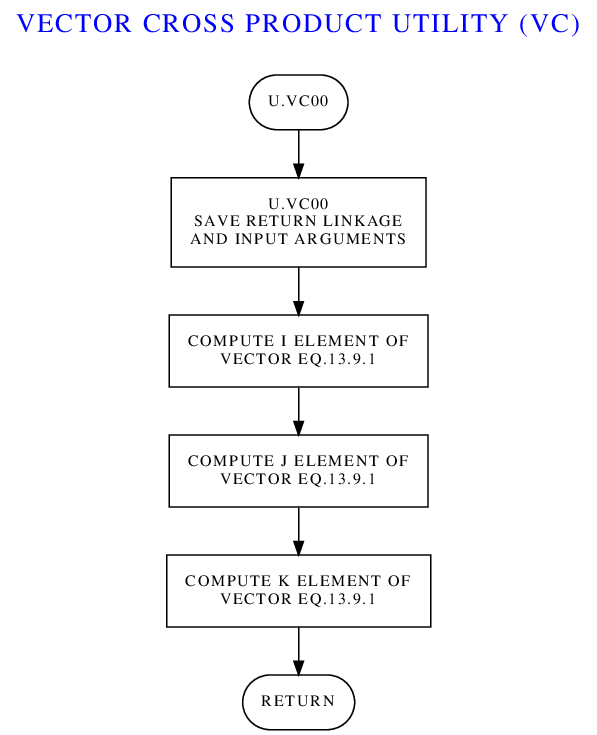Regardless of
whether any of that is strictly true or not, perhaps rather than
worrying what the marks were for originally, a better question to
ask may be whether these markings can be used now to help
us generate reasonably-useful flowcharts that can help us?
The answer to that question, in my estimation, is Yes, assuming
that a little work is done to correct some of the inadequate or
improper markings already present in the source code.
Admittedly, some of the LVDC modules have more-useful flowcharts
than do others. On the assumption that my suppositions about
the markings are correct, and a suffering from a large dose of
stubbornness, I've created LVDC
flowchart-generating software called yaASMflowcharts.py,
available in our software repository. Admittedly, it's not
of too much use unless you're qualified to access the AS-512 and
AS-513 source code, so I won't waste our time by telling you much
about this software here.
Now at this point, you may be rolling your eyes anyway, and
grumbling that I've already wasted your time by telling you about
these flowcharts you're not allowed to see. But where did I
say you can't see the flowcharts? I've thought about this
quite a bit, and my conclusion is that the flowcharts can in fact
be generally distributed. Admittedly, my thinking is based
on common sense rather than legalities, which is somewhat of a
drawback. After all, on the basis of "common sense" there's
not the slightest possibility of anyone using a Saturn launch
vehicle ever again in the entire future history of homo
sapiens, so restricting information about the LVDC seems
rather pointless; but being pointless doesn't seem to be relevant
to ITAR. At any rate, by my reckoning there are two pretty
compelling reasons why the flowcharts wouldn't be restricted from
export:
Or to put it differently, in an engineering sense, it would be
nonsensical to even attempt creating usable software from these
flowcharts, and even if you were idiotic enough to do so you would
quickly reach an impasse. Imagining that functional software
would result from such an effort is Hollywood thinking rather than
engineering thinking.
Which nicely brings us full circle back to Contact.
In the movie, once the mysterious edge markings of the pages of
"encrypted data" are finally understood, the pages are then
understood to be instructions for building a fabulous machine of
unknown nature and purpose, involving physical principles nobody
understands. But the world's governments nevertheless build
the machine, at enormous cost. And the machine works, first
time around. Without significant testing, because after all,
since the machine's function is a mystery, how could it be tested
in advance? Again, Hollywood thinking! Not meaningful
in the real world.
But I digress.
Without further ado, here are all of the available LVDC Flight
Program flowcharts, both from published IBM Federal Services
Division documentation and from my automated-generation
effort. They're roughly in the order in which they appear in
the actual source code, with some exceptions since for AS-210 I
couldn't always determine the probable location in the source
code.
Given that the AS-210 flowcharts come directly from IBM
documentation, whereas the AS-512 and AS-513 flowcharts were
somewhat-speculatively semi-automatically generated by my
software, it's worthwhile asking how closely the two agree.
That's important not just for my own vanity (or embarrassment as
the case may be), but because we'd like to know whether we can
usefully rely on the automatically-generated ones. It
doesn't take too much looking to realize that there are often
significant disagreements. On the other hand, perhaps there
should be significant disagreements, due to mission
differences and due to the differences between the Saturn IB and
the Saturn V. But in addition to cases where the differences
are obvious, there are also cases where the similarities are
eerie. As an example of the latter, consider the
side-by-side complete flowcharts for the CHI COMPUTATIONS module
seen below; AS-210 is to the left and AS-512 is to the
right. Whether the automatically-generated flowcharts are
trustworthy or not in general, I fear, must for now remain
a matter of personal opinion.
On a slightly-related topic, it may also be worth noting that
I've devised color-coded, syntax-highlighted HTML LVDC program
listings, with internal hyperlinks, just like we've had for AGC
and AGS program listings for a long time. These things are
nifty, because the flowcharts have been been somewhat-integrated
into them for easier cross-reference. And while I can't show
you the complete listings for AS-xxx, colorized or
otherwise, I have prepared an "abridged"
AS-512 listing, in which everything has been removed except for
pure mathematical subroutines highlighted in yellow above, and in it you
can see how the flowchart integration has been handled.
Also see the FLOW
assembly-language directive above and the LVDC
flowchart-editing tutorial.
Just as the EDD contains software flowcharts for the associated
LVDC Flight Program, a document called the "LVDC
Preflight Program Descriptions" contains flowcharts for the
various subroutines of the LVDC Preflight Program. The only
revision of the latter document in our library claims to have an
effectivity for the AS-512 (Apollo 17), AS-513 (Skylab 1), and
AS-206 (Skylab 2) missions. And just as in the preceding
section, we can index those flowcharts for you here. Unlike
the preceding section, though, I don't currently have any idea as
to the overall ordering of these subroutines within the Preflight
Program's source code.
Given that the LVDC was basically a pure black box —
in every respect other than its color, which wasn't black — it may
be tough to come up with ways off the top of your head to
demonstrate it actually doing anything ... that is, unless
you put it in a physical Saturn IB/V rocket or a full-up emulation
of one and blast off! With that said, it turns out there's a
surprisingly large number of ways you can you can see the LVDC
doing its thing without going to that impossible extreme.
The subsections below tell you about some of them.
Don't be fooled by the way I've written these sections to suppose
that there's no overlap between the techniques discussed
below. With some limitations, any or all of the techniques
can be used together in almost any combination.
I already mentioned in the section on our LVDC
CPU emulator that the emulator has a built-in debugging
feature that you can use to get a very detailed close-up view of
the LVDC in operation. It's worth reemphasizing, as well as
reading what I said about it back then if you haven't already done
so. The debugger feature is command-line only, admittedly,
and we turn up our noses at that in these days when we've long
been used to debuggers with graphical interfaces. But it's
worth noting, I think, that a command-line debugger still far more
convenient than any debugging capability the original LVDC
developers had back in the day. More on that below.
Also as I mentioned earlier, the command set of the debugger is
based on the widely-used GNU
debugger (gdb), albeit providing on a small subset of the
commands available in true gdb. Given that I've already
given a brief explanation of it, I won't harp on it any further,
except to say that you can get an idea of the capabilities by
looking the command set as it is at the writing, courtesy of the
debugger's HELP command:
STEPI [n] Step n instructions, default n=1.
SI [n] Same as STEPI.
NEXTI [n] Next n instructions, w/o entry.
NI [n] Same as NEXTI.
DELETE Delete all breakpoints.
DELETE n Delete breakpoint n.
CONTINUE Continue running emulation.
JUMP *address M-SS Jump to code-memory address and assign DM/DS as M-SS and run.
JUMP [asm:]name Jump. Operand is symbolic name of a HOP constant in data memory.
JUMP [asm:]name M-SS Jump to symbol in code memory and assign DM/DS as M-SS.
JUMP octal Jump using literal octal HOP constant.
GOTO ... Same as JUMP, except pause rather than run.
LIST List following block of source code.
LIST - List preceding block source code.
LIST [asm:]n List source block at line #n.
LIST [asm:]name List source block at function.
DISASSEMBLE Disassemble next LISTSIZE instructions in current HOP environment.
DISASSEMBLE - D-TT Disassemble preceding LISTSIZE instructions; D-TT is starting DM/DS.
DISASSEMBLE M-SS-Y-LLL EEE D-TT Disassemble from code address M-SS-Y-LLL to EEE using data sector D-TT.
X[/[n][b|d|o]] address Show n words at address.
X[/[n][b|d|o]] &[asm:]name Show n words at name.
CLEAR [asm:]name Delete breakpoint at function.
CLEAR [asm:]number Delete breakpoint at line #.
CLEAR *address Delete breakpoint at address.
BREAK [asm:]name Set breakpoint at function.
BREAK [asm:]number Set breakpoint at line #.
BREAK *address Set breakpoint at address.
TBREAK ... Same as BREAK, but temporary.
BACKTRACE [n] Show last n backtraces, default=20.
BT [n] Same as BACKTRACE.
INFO ASSEMBLIES List all loaded assemblies.
INFO BREAKPOINTS List all breakpoints.
INFO BREAK List all breakpoint numbers.
RUN Reboot the LVDC/PTC emulation.
QUIT Quit the LVDC/PTC emulator.
SET LISTSIZE n Sets default size used for LIST.
SET name = n Store value n in variable name.
SET *address = n Store value n at memory address.
SHOW LISTSIZE Show current size for LIST.
PANEL Resume full control by PTC front panel.
HELP Print this list of commands.
In the preceding section, I proffered the opinion that our LVDC
emulator's command-line debugger is "far more convenient than any
debugging capability the original LVDC developers had back in the
day". You might be forgiven for supposing that that's pure
unwarranted bluster on my part. But I think not.
The only debugging capability provided back in the day came in
the form of the Programmable Test Controller (PTC), which I babbled
a bit about above in the section about the PTC ADAPT
Self-Test Program. It's certainly true that you could do
many of the things with the PTC that you can do with our LVDC
emulator's debugger, such as single-step through an LVDC program,
set breakpoints, and view memory. But you had to do it with
a panel littered with dozens of push-buttons and indicator lamps,
rather than a keyboard and an alphanumeric display, and that's not
easy. Though I don't mean to suggest that the original
developers were necessarily unhappy with it! Indeed, I was
told by one of the original developers that when LVDC code written
by prior developers was handed off to them, they often had little
clue from the program comments or from the code itself as to what
the code was actually doing; and thus they would put it into the
PTC and step through it to find out! So even the PTC was a
great advance over the only other alternative open to them, which
was to glare at the code until some conception about it formed in
their heads.
And while you probably don't have a PTC sitting around, we
have a PTC emulator for you that you can use with our emulated
LVDC, if it suits you, to produce essentially the same
effect! Admittedly, even a physical PTC's CPU is not exactly
identical to a physical LVDC CPU, so a little bit of code
adaptation may be necessary. You couldn't, for example, run
an entire LVDC Flight Program in the PTC. But you can run
reasonable-sized chunks of code it in fairly easily, because the
difference between PTC and LVDC code is minimal when compared (for
example) to the differences between the Block I and Block II AGC's
code.
Still, it's always going to be easier to run code on the PTC that
was written specifically for it, rather than adapting code to it
what was written for the LVDC. And of course, we do actually
have such a program tailored to the PTC, namely the PTC ADAPT
Self-Test (PAST) Program. So if you want to try running LVDC
code on the PTC, the first step on the learning curve may be to
start with the PAST program. Unfortunately, the process for
doing so is a bit elaborate. In an attempt to maintain a little
clarity without unnecessarily further cluttering this page with
long descriptions of PTC usage, I've split discussion of the PAST
program test procedures into a separate page:
Surprisingly to me, even though the LVDC has no user
interface, you can actually make the AS-512 or AS-513 flight
program perform significant observable activity, in a
hands-off fashion, even without any simulation of any of the
LVDC's peripheral components. As far as I know, this was
first pointed out by Nik Beug, and Mike Stewart actually made
it work. But you too can do it, and I'm going to tell
you how.
This capability relies on a feature of the LVDC flight
program that seems like an incredible oddity. The flight
program has three different operating modes, one of which
("flight mode") corresponds to what a hypothetical Sensible
Person™ would imagine is the only mode, namely the
normal operation of launching into orbit. But there are
two other modes as well, which are the "repeatable flight test
mode" and the "non-repeatable flight test mode", sometimes
called the "flight simulation" modes. In these modes,
the LVDC neither controls the physical rocket nor reads data
such as acceleration from the physical inertial measurement
unit, but instead simulates the flight data using
built-in equations of motion. In other words, it used physics
to simulate the effects its commands will produce, and reads
back this simulated data from a simulated IMU embedded in the
flight program itself. The difference between the
"repeatable" and "non-repeatable" modes is that in the
repeatable mode, you'll consistently get the same results
every test run because the external hardware is completely
bypassed. Whereas in the non-repeatable mode, there's
some interaction of the LVDC with external hardware, so you
won't necessarily get precisely the same results every time,
if only because of slight timing differences from run to run.
The upshot is that if the flight program is put into
repeatable test mode, and if your flight program and LVDC
function properly, then from the perspective of the LVDC it
will appear as if the launch vehicle lifts off and
goes into whatever orbit the flight program was designed
for. Which is a useful test of the flight program and of
the CPU hardware ... which in turn is pretty nifty for us,
since we're using our own home-grown CPU emulator instead of
an actual hardware LVDC, and we would naturally like to test
that the CPU emulator works properly.
Aside: I said above that the simulation feature is an "incredible oddity". While it's clearly quite useful for testing purposes, its presence during the mission itself is very odd indeed in relation to "modern" thinking about high-reliability software. Modern thought is that it's important to not have "dead code" in your flight code. Dead code is code that won't be used during the mission, and the reason dead code is regarded as a poor practice is the question of "what if the computer starts executing that dead code during the actual mission due to some kind of glitch?" For example, what if there's an electrical discharge (such as a lighting strike) which accidentally puts the LVDC in a simulation mode during the ascent? Whereas instead, if your computer-memory hardware is capable of detecting accesses to unallocated memory, it's much safer to simply have nothing at all in a memory location rather than to have dead code in it, because an illegal memory access could then trigger a computer restart ... much safer than executing completely-unintended code! On the other hand, the LVDC did employ so-called Triple Modular Redundancy, in which three identical copies of logic modules were used, with majority voting among them. This seems as though it would have served to offset the danger of the dead code by greatly reducing the probability that a glitch could cause it could be executed. On the other hand, the current mode does not seem to be among the items that are telemetered, which is surprising since I think one would want to be able to detect whether the LVDC was in flight mode vs simulation mode. It would be interesting to know if anybody at the time considered the dead-code issue to be an issue at all.
The set-up for using the repeatable flight mode to simulate
boosting the launch vehicle into orbit is just a matter of
creating a skeleton Preflight Program that sets the flight
mode accordingly and then jumps to the Flight Program.
Because this is a teachable moment, let's go through that
conceptually-simple skeleton Preflight Program in detail:
ORGDD 0,0,0,000,0,0,0
CDS D.FMDI This sets the CPU's data-sector
# registers to correspond to the data
# sector containing the variable D.FMDI
# (and coincidentally, the variables
# D.KB11 and D.KB15 in AS-512 and
# AS-513). It happens to be memory
# module 2, sector 17.
CLA D.KB11 D.KB11 is a variable which for our
# purposes is interesting because it has
# bit 15 set and all other bits cleared.
# (Bit 1 is the least-significant and
# bit 26 the most significant.) The CLA
# instruction simply loads that value
# into the accumulator register.
ADD D.KB15 Similarly, D.KB15 has bit 11 set and
# all other bits cleared. And no, I
# haven't accidentally swapped these two
# variables!
STO D.FMDI D.FMDI is a variable holding "flight
# mode indicator", normally uploaded to
# the LVDC by the RCA 110A computer on
# the ground, though in our case just
# being set directly by us. Here's how
# some of the individual bit flags are
# interpreted:
# Bit 26 is 1 = normal flight mode,
# 0 = flight test mode.
# Bit 15 is 1 = repeatable,
# 0 = non-repeatable.
# Bit 11 is 1 = Cape Canaveral,
# 0 = Huntsville.
# The STO instruction just copies the
# accumulator into D.FMDI.
HOP E.GP0 E.GP0 is the "mission start" entry
# point for the the Flight Program. The
# HOP instruction just jumps there.
# Note that the HOP instruction technically must have an operand
# that's the address of a HOP constant corresponding to the address
# to jump to. But instead of that, the operand above is a program
# label. The assembler will therefore need to create a HOP constant
# corresponding to that program label, and then to automatically
# allocate an address (in memory sector 2-17) to hold the value of
# that HOP constant. So it may be prudent to make sure there's
# actually unallocated space in sector 2-17 to hold that HOP constant.
# The assembly listings for AS-512 and AS-513 tell us that there are
# indeed a few data words left over in sector 2-17 in both cases, so
# we're fine. We could make the code above slightly more complex and
# completely avoid allocating anything new in memory sectors used by
# AS-512 and AS-513, but fortunately we don't have to do so.
Now, in the code above, we've pretended that our skeleton
Preflight Program can directly access the variables D.FMDI
and D.KB11, which reside in the Flight
Program. Which it could, if it knew they were
there in the first place. That's a bit unrealistic,
since the Preflight Program and Flight Program would normally
be assembled separately, as well as being loaded into the LVDC
separately, and thus the Preflight Program wouldn't have any
notion at all of what variables existed in the Flight Program,
nor where they were located in memory. (Whereas the
Preflight Program would know about entry point E.GP0,
though perhaps not by its symbolic name, since by convention
that entry point would always be at the fixed address
0-10-0-000.) For our purposes, though, we can cheat a
bit and optionally just add our skeleton Preflight Program
source code to our AS-512 or AS-513 Flight Program source
code, and assemble them both at once, thus giving the
Preflight Program complete knowledge of the contents of the
Flight Program. But we'll still be tricky about it, and
add it to the end of the Flight Program source code
instead of the beginning, even though it's at a lower address,
to avoid changing any of the addresses of variables in data
sector 2-17.
Actually, you don't have to do any of this yourself, since
I've added it to the AS-512 and AS-513 source-code trees
myself, as a source file called SKELETON_PREFLIGHT.lvdc.
SKELETON_PREFLIGHT.lvdc is discarded during normal builds of
AS-512 and AS-513, but is included if you build them like so:
make clean repeatable.tsv
in which case the object file repeatable.tsv is created in
place of the normal build's yaASM.tsv, and an assembly listing
called repeatable.lst is created instead of LVDC-AS51x.lst.
Thus if you run repeatable.tsv in the LVDC emulator, you
should be able to get into orbit, virtually speaking. On
the other hand, without some additional effort you won't know
you got into orbit, since all of that takes place entirely
within the emulated LVDC, which has no user interface.
So you have to somehow capture the data from the
simulation. The way I've done that myself is to use the
emulator's --log-pio command-line switch, which
causes a logfile (yaLVDC.pio) to be created for all of the
Flight Program's uses of the PIO instruction, which
in turn is used (among other things) for producing output
telemetry:
Wait (say) 12 minutes, halt the simulation (ctrl-C), et voilà, you have a log! Here's a brief excerpt of the gibberish produced:yaLVDC --assembly=repeatable --log-pio=1 --cold-start --run
The columns are:7 > 072 00 177760000
9 > 076 00 000017777
11 > 032 00 177760000
29 > 072 13 077760000
31 > 076 13 000000001
39 > 072 00 177760000
40 > 232 00 100000000
83 > 272 00 167760000
121 > 232 00 100000000
135 > 076 00 000000076
.
.
.
There are lots and lots of PIO channels used by the LVDC,
even if we just confine ourselves to those used for telemetry,
but let's suppose that what we're interested in are the
altitude and velocity of the launch vehicle as a function of
time. In that case, the telemetry PIO's that are
relevant are:
I wrote a
little Python script to pull just the lines for these
specific PIO's out of the log, massage them mathematically
into altitudes and inertial velocities, and then write all
that stuff back out as another file that you can pull into
most spreadsheet software to produce pretty graphs:
The output file consists of columnar data, separated by tab characters, and thus very easy to import into practically any spreadsheet software.analyzeBoost.py <yaLVDC.pio >GRAPHABLE.txt
Here are the actual results you can get from the simulation
procedure described in the preceding section, for an AS-512
(Apollo 17) simulated launch. In graphical form:
Full disclosure: If you let the simulation run past orbit insertion (~700 seconds), you'll find that you'll continue to get simulated data until ~870 seconds, but at 825 seconds and beyond you'll begin to see some oddities in the altitude that I cannot yet explain. So if you try out the simulation yourself and see weird data like that, it's not something bad you've done.Are these results close to correct? According to the "Apollo/Saturn V Postflight Trajectory - AS-512" document, what happened in the actual mission on December 7, 1972, was this:
Just as for AS-512 in the preceding section, we can find out what happened during the ascent phase on the actual AS-513 mission, on May 14, 1973, from the "Apollo/Saturn V Postflight Trajectory - SA-513 - Skylab 1 Mission":
The document also has graphs:
In the preceding section, use was made of the
ability of yaLVDC to log the execution of all
PIO instructions to a file. PIO
instructions are used for many type of
i/o. For example, all telemetry
output by the LVDC is in the form of PIO
instructions. Telemetry, of course, is the
data output by the LVDC (and other components
of the launch vehicle and space craft), for
transmission to the ground and indirectly to
mission control, so that a more-or-less
continuous picture of the status of the entire
system can be maintained in real time.
As I mentioned earlier, yaLVDC connects to
peripheral devices (including recipients of
telemetry data) using a mechanism I refer to
as "virtual wiring". This refers to the
notion that the yaLVDC (the emulated LVDC CPU)
and its peripheral devices together form a
client/server system, in which yaLVDC is the
server and the emulated peripherals are the
clients. The data exchanged between the
server and client in this case consists almost
entirely of PIO data; in other
words, each message that's exchanged consists
basically of a PIO channel number
and its data. For example, if we had the
LVDC assembly-language snippet
CLA =O27 LOAD THE ACCUMULATOR WITH OCTAL 270000000/2
PIO 124 OUTPUT ACCUMULATOR ON CHANNEL OCTAL 124
then in essence, the virtual-wiring message
output by the CPU would contain (octal) 124
and 134000000.
But not all PIO's are related to
telemetry, though many are; channel 124 in the
example above is telemetry-related, and gives
the total inertial velocity of the
vehicle. But often, the exact
interpretation of the PIO's
containing data telemetered from the LVDC to
the ground depends on the specific LVDC Flight
Program version and the flight phase.
The same PIO transmitted by a
different flight program or in a different
phase of the flight may have a different
interpretation. Channel 124 is always
inertial velocity in any flight program I know
of, but other PIO's are not always
the same.
At this point, you should begin to see
telemetry data appearing, and it should be
relatively self-explanatory ... or at least,
as self-explanatory as anything related to the
LVDC can be. But being me, I'll
naturally explain it anyway, using the
following brief excerpt that I captured at
random:
.
.
.
73.756 V.EART -6944 -6944 RTC PULSES REAL TIME CLOCK READING ASSOCIATED WITH EXTRA ACCEL READ
73.780 K.ETC O343434343 END TELEMETRY CYCLE WORD
73.791 V.BTC O000000111 B25 COUNTER BEGIN TELEMETRY CYCLE WORD
73.792 D.VTI 17422 B15 17.0137 SECONDS TIME FROM GRR WHEN CURRENT TIME BASE SET
73.803 D.VTB 57281 B15 55.9385 SECONDS TIME IN TIME BASE AT ACCELEROMETER READ
73.818 D.VACX 0 0 .05 M/SEC X ACCELEROMETER READING
73.829 D.VACY 0 0 .05 M/SEC Y ACCELEROMETER READING
73.842 D.VACZ 0 0 .05 M/SEC Z ACCELEROMETER READING
73.867 D.VACT -6645 -6645 RTC PULSES REAL TIME CLOCK (RTC) READING ASSOCIATED WITH D.VTAS
73.878 D.VTAS 74703 B15 72.9521 SECONDS MISSION TIME AT ACCELEROMETER READ
73.988 D.VXDM 1927676 B14 941.248 M/SEC X COMPONENT OF MEASURED VELOCITY
73.999 D.VYDM 4755 B14 2.32178 M/SEC Y COMPONENT OF MEASURED VELOCITY
74.024 D.VZDM 210345 B14 102.708 M/SEC Z COMPONENT OF MEASURED VELOCITY
74.026 D.VXDD 8149224 B6 15.5434 M/SEC**2 X COMPONENT OF PLATFORM MEASURED ACCELERATION
74.037 D.VYDD 0 B6 0 M/SEC**2 Y COMPONENT OF PLATFORM MEASURED ACCELERATION
74.062 D.VZDD 2984152 B6 5.69182 M/SEC**2 Z COMPONENT OF PLATFORM MEASURED ACCELERATION
74.098 D.VXS 25514883 B23/B27 6.37872e+06 METERS X COMPONENT OF SPACE-FIXED POSITION
74.109 D.VYS 105408 B23/B27 26352 METERS Y COMPONENT OF SPACE-FIXED POSITION
74.110 D.VZS 96431 B23/B27 24107.8 METERS Z COMPONENT OF SPACE-FIXED POSITION
74.157 D.V1OR 22063246 B-22 1.56769e-07 1/METERS RECIPROCAL OF RADIUS
74.183 D.VGX -20554632 B4 -9.80121 M/SEC**2 X COMPONENT OF GRAVITY ACCELERATION
74.184 D.VGY -58322 B4 -0.0278101 M/SEC**2 Y COMPONENT OF GRAVITY ACCELERATION
74.184 D.VGZ -86230 B4 -0.0411177 M/SEC**2 Z COMPONENT OF GRAVITY ACCELERATION
.
.
.
The columns are interpreted like so:
As I mentioned, the timestamps provided by
analyzeBoost.py on each line aren't as useful
as they might be, because they relate to
elapsed time in analyzeBoost.py rather than to
any timing property of the emulated
LVDC. As it happens, timestamps of a
sort are among the telemetry data, but
are only emitted periodically rather than
being embedded on a PIO-by-PIO
basis. You can actually see one such
timestamp in the sample data above: It's D.VTAS,
"MISSION TIME AT ACCELEROMETER READ", and its
value is close to the timestamp assigned by
analyzeBoost.py, but not quite equal. Which
should not be a surprise, since given that PIO
000 is emitted only at about 1.5 second
intervals, it's not very good for timestamping
any individual PIO records appearing
in the in the interim.
Besides the timestamps, another inconvenience
of analyzeBoost.py is that the telemetry
rushes past so fast that you can't possibly
see it without scrolling or without capturing
it by piping it into file first ... which, on
the other hand, is very easy to do.
However, as I said, there is an alternative
method of viewing the telemetry, and that's
via a GUI program called yaMccLvdc.py, available
in the same place in our source-code
repository, whose output looks something
like the following:
yaMccLvdc.py --helpWe'll encounter yaMccLvdc.py again in the next section.
Note: This section is under construction, even more so that most of the rest of the material on this page. In fact, I'm writing it as I learn about it, reverse engineer it, and implement the "modern" form of it, so everything I will say is iffy and very subject to change!
Data isn't merely sent from the LVDC to
mission control via telemetry, but can be sent
from mission control to the LVDC as well ...
though in the latter case the data is normally
called a "command", and it's delivered by
what's known as the Digital Command System
(DCS). I suppose I should give a
disclaimer right up front that when considered
as a kind of interface for user input into the
LVDC, DCS leaves a lot to be desired.
For one thing, it is capable of doing quite a
lot less then you might imagine ... while at
the same time, most of what you can do
with it is limited to very specific phases of
the mission. Well, it is what it is, and
like Popeye the Sailor, that's all that it
is. A corollary of that is that there's
a bit of a steep learning curve as well.
Adjust your expectations accordingly.
Regarding the AS-206RAM mission, I know that
it had DCS capability because the comments in
the Flight Program's source code do refer to
it. But there's no documentation about
it, and nothing in the AS-206RAM Flight
Program seems to process it directly. I
suspect that this is due to DCS having been
processed back in those early days by the
Preflight Program (which we don't have) rather
than by the Flight Program (which we
do). In other words, the Preflight
Program would have received and processed all
of the incoming DCS commands, and just passed
along to the Flight Program whatever dribble
of information it thought was needed. I
suppose.
Whereas, in later missions the DCS was
processed by the Flight Program. So the
amount of information about DCS in the AS-512
and AS-513 missions is a bit more substantial
if not 100% complete. Besides the
flight-program source code itself, section 10
of the document "Saturn
Instrument Unit: LVDC Equation Defining
Document (EDD) for the Saturn IB Flight
Program" covers some DCS
commands in reasonable detail. The
so-called "Technical Information Summary"
documents for individual missions, though not
providing any technical details about DCS in
depth, sometimes though not always list the
specific DCS commands available for the
missions, as well as the constraints on when
those various commands could be
accepted. For example:
Admittedly, the value of a list of available
DCS commands is minimal without the ability to
actually run the still-unavailable LVDC Flight
Programs or Preflight Programs capable of
accepting those commands, so only AS-512
(Apollo 17) and AS-513 (Skylab 1) are of much
interest at the moment. You'll notice
that those missions are not among any
of the documented ones. With that said,
the particular commands available to the
AS-512 or AS-513 missions are summarized in
the following table, to the extent I've been
able to discover or guess what they are:
| Command (Octal) |
AS-512 |
AS-513 |
|---|---|---|
| 05 |
INHIBIT MANEUVER Inhibit coast phase attitude maneuver. |
|
| 10 |
TIME BASE UPDATE The time-base time is advanced or retarded by a selected amount. |
FINE
TIME BASE UPDATE See also command 40 below. |
| 11 |
NAVIGATION
UPDATE Re-initializes the navigation state vector (position and velocity) at a specified time with data provided by mission control. |
|
| 12 |
GENERALIZED
SWITCH SELECTOR The specified switch-selector function is issued at the first opportunity. |
|
| 13 |
SECTOR DUMP The contents of the specified memory sector are telemetered. |
MEMORY
DUMP The contents of the specified contiguous memory block are telemetered. Presumably this is a combined equivalent for the separate SECTOR DUMP and TELEMETER SINGLE MEMORY LOCATION commands found in AS-512. |
| 14 |
TELEMETER SINGLE MEMORY
LOCATION The content of a single selected memory location is telemetered. |
|
| 17 |
TIME BASE 8 ENABLE Initiates time base 8. I believe that TB8 is the post-S-IVB-separation maneuver, including a propellant dump and safeing sequence. |
|
| 20 |
TERMINATE Stop DCS processing and reset for a new command. |
|
| 21 |
EXECUTE
ALTERNATE SEQUENCE In general, initiates one of (potentially) 16 different preprogrammed alternate sequences. Specifically, in so far as AS-513 is concerned, the only choices are sequences 4A and 4B, though I don't know what either of those sequences actually does. |
|
| 22 |
UPDATE MANEUVER Change the time for starting the coast phase maneuver. |
|
| 25 |
TIME BASE 6D Initiates time base 6D. I have found no specific documentation for TB6D, but I believe that it is an S-IVB ignition restart for TLI. |
|
| 31 |
TARGET UPDATE Replace targeting quantities for second S-IVB burn. |
|
| 33 |
EXECUTE MANEUVER A Track-local-reference orbital maneuver. |
|
| 34 |
EXECUTE MANEUVER B Inertial-attitude hold maneuver. |
|
| 35 |
EXECUTE
GENERALIZED MANEUVER Initiates either an inertial-attitude hold maneuver or a track-local-reference orbital maneuver. |
|
| 36 |
RETURN
TO NOMINAL TIMELINE Returns to the pre-programmed orbital attitude timeline in effect prior to DCS-initiated action having overridden it. |
|
| 40 |
INHIBIT MANEUVER This appears to be the same as command 05 (see above). The same subroutine is executed for either one. |
COARSE
TIME BASE UPDATE See also command 10 above. |
| 41 |
LADDER
MAGNITUDE LIMIT |
|
| 43 |
UPDATE MANEUVER This appears to be the same as command 22 (see above). The same subroutine is executed for either one. |
|
| 45 |
INHIBIT
WATER CONTROL VALVE LOGIC Inhibit water valve from changing position. |
|
| 52 |
S-IVB/IU LUNAR IMPACT Presumably, initiates the maneuver that crashes the S-IVB onto the moon. |
|
| 53 |
SWITCH ANTENNA TO OMNI Both the PCM and CCS antennas are switched. |
|
| 54 |
SWITCH ANTENNA TO LOW
GAIN Both the PCM and CCS antennas are switched. |
|
| 55 |
SWITCH ANTENNA TO HIGH
GAIN Both the PCM and CCS antennas are switched. |
|
| 60 |
TD & E ENABLE Inhibits T6 (TLI?) so that TD & E (LM Transposition, Docking, and Ejection) can be accomplished in Earth orbit. |
|
As far as what I said above that DCS being
more limited than you might expect is
concerned, you can see that in the table
above. For example, noticing that there
are DCS commands to download chunks of LVDC
memory, you might suppose that there would
also be DCS commands to upload chunks of
memory ... but there aren't. So DCS cannot
be used for purposes such as patching the
software — what for the AGC was known as
Erasable Memory Programs (EMPs) — nor even for
changing the value of a single variable.
Not unless it had been decided in advance to
allow certain limited changes to a particular
variable and provide a DCS command dedicated
to that specific variable.
How does one send a DCS command to the
LVDC? Well, in the case of the "modern"
LVDC emulator, you can use the very same
yaMccLvdc.py program we used in the preceding
section for viewing telemetry. The
program has an extra DCS window that I didn't
show you before, enabled by a command-line
switch (--dcs). The DCS window
when emulating AS-513 looks something like the
following:

> X PIO-032
PIO-032: 000000000 (000000000)
(The notation 2-17-206 is the address of the variable, and will differ between different versions of the Flight Program.) In the case of D.VIHC, it's bit 4 (rather than bit 5 as above) that corresponds to the DCS interrupt, so with a mask like the one shown above, that bit is 0, and the DCS interrupt is still masked. You can enable it using the debugger:> X &D.VIHC
2-17-206: 320000000 (640000000)
How effective this is in allowing the Flight Program to receive DCS commands varies. In some of the Flight Program's time bases, this setting persists until the end of the time base; in others, it's essentially undone immediately. If you happen to be in one of the time bases where it persists, though, once you allow the Flight Program to continue its free run (with the debugger's CONTINUE command), you'll now be able to send the Flight Program DCS commands, and have them acknowledged!> SET D.VIHC=0330000000
Overwriting value 320000000 with 330000000.
This, of course, means "none of them are allowed". I won't bore you by giving you lists (separate for AS-512 vs AS-513) of which bits in D.VLNK correspond to which DCS commands, since it's easier to simply enable everything:> X &D.VLNK
2-17-073: 000000000 (000000000)
> SET D.VLNK=0377777777
Overwriting value 000000000 with 377777777.
Now after resuming free-running in the
debugger, we find that full multi-word DCS
commands are indeed apparently fully accepted
by the Flight Program, though not necessarily
acted upon. Indeed, once sending a DCS
command, sending any additional commands
likely to result in a response that translates
as "A DCS program is in progress at this time;
however, no more data is required; only a
terminate mode command can be processed at
this time".
TBD
Saturn Rocket
Mission Designation
Software Developer Team
Notes
SA-202
AS-202 (informally "Apollo 3")
TBD
SA-501
Apollo 4
TBD
SA-502
Apollo 6
TBD
SA-204
Apollo 1
TBD
Apollo 5
TBD
SA-205
Apollo 7
TBD
(n/a)
AS-206RAM
TBD It seems that launch vehicle SA-206 was originally intended for the third crewed Apollo mission, canceled in the wake of the Apollo 1 fire, and that the rocket was eventually repurposed for the Skylab 2 mission (see below). However, flight program AS-206RAM was developed for this (unflown) alternative mission profile in the ensuing interval.
SA-503
Apollo 8
Larry Pennington, Jim Howell Jim Howell tells us that "Larry and I used the GFP source code as the starting basis for our work. I seem to remember that Larry had told me that it would be the first time that the GFP basis had been used for an actual launch. IIRC, Larry had been involved in the creation of the GFP base line." Note that this also implies that the GFP was used in some form for SA-505 (Apollo 10). But since Jim was involved neither with SA-504 (Apollo 9) or SA-506 (Apollo 10) teams, his comments do not imply that the GFP was used for those rockets.
SA-504
Apollo 9
TBD
SA-505
Apollo 10
Larry Pennington, Jim Howell
SA-506
Apollo 11
TBD
SA-507
Apollo 12
Larry Pennington, Jim Howell It is thought that the GFP was exclusively used for all Apollo missions from this point onward.
SA-508
Apollo 13
TBD
SA-509
Apollo 14
Larry Pennington, Jim Howell
SA-510
Apollo 15
TBD
SA-511
Apollo 16
Larry Pennington, Jim Howell
SA-512
Apollo 17
TBD
SA-513
Skylab 1
TBD
SA-206
Skylab 2
Jim Howell, Louis Berry, Ron McCain One of the tasks included modifying the GFP for use in Skylab crewed missions.
SA-207
Skylab 3
Jim Howell, Louis Berry, Ron McCain
SA-208
Skylab 4
Louis Berry, Ron McCain
SA-210
Apollo-Soyuz Test Project TBD
Saturn Rocket
Mission Designation
Software Developer Team
Notes
SA-202
AS-202 (informally "Apollo 3")
TBD
SA-501
Apollo 4
TBD
SA-502
Apollo 6
TBD
SA-204
Apollo 1
TBD
Apollo 5
TBD
SA-205
Apollo 7
TBD
SA-503
Apollo 8
TBD
SA-504
Apollo 9
TBD
SA-505
Apollo 10
TBD
SA-506
Apollo 11
TBD
SA-507
Apollo 12
TBD
SA-508
Apollo 13
TBD
SA-509
Apollo 14
TBD
SA-510
Apollo 15
TBD
SA-511
Apollo 16
TBD
SA-512
Apollo 17
TBD
SA-513
Skylab 1
TBD
SA-206
Skylab 2
TBD
SA-207
Skylab 3
TBD
SA-208
Skylab 4
TBD
SA-210
Apollo-Soyuz Test Project TBD


{kind=link}
{kind=link}
{kind=link}
{kind=link}
{kind=link}
.dot.ps.png){kind=link}
.dot.ps.png){kind=link}
.dot.ps.png){kind=link}
.dot.ps.png){kind=link}
.dot.ps.png){kind=link}
.dot.ps.png){kind=link}
.dot.ps.png){kind=link}
.dot.ps.png){kind=link}
.dot.ps.png){kind=link}
.dot.ps.png){kind=link}
.dot.ps.png){kind=link}
.dot.ps.png){kind=link}
.dot.ps.png){kind=link}
.dot.ps.png){kind=link}
.dot.ps.png){kind=link}
.dot.ps.png){kind=link}
.dot.ps.png){kind=link}
.dot.ps.png){kind=link}
.dot.ps.png){kind=link}
.dot.ps.png){kind=link}
.dot.ps.png){kind=link}
.dot.ps.png){kind=link}
.dot.ps.png){kind=link}
.dot.ps.png){kind=link}
.dot.ps.png){kind=link}
.dot.ps.png){kind=link}
.dot.ps.png){kind=link}
.dot.ps.png){kind=link}
.dot.ps.png){kind=link}
.dot.ps.png){kind=link}
.dot.ps.png){kind=link}
.dot.ps.png){kind=link}
.dot.ps.png){kind=link}
.dot.ps.png){kind=link}
.dot.ps.png){kind=link}
.dot.ps.png){kind=link}
.dot.ps.png){kind=link}
.dot.ps.png){kind=link}
.dot.ps.png){kind=link}
.dot.ps.png){kind=link}
.dot.ps.png){kind=link}
.dot.ps.png){kind=link}
_TELEMETRY(OD).dot.ps.png){kind=link}
_TELEMETRY(OD).dot.ps.png){kind=link}
.dot.ps.png){kind=link}
.dot.ps.png){kind=link}
.dot.ps.png){kind=link}
.dot.ps.png){kind=link}
.dot.ps.png){kind=link}
.dot.ps.png){kind=link}
.dot.ps.png){kind=link}
.dot.ps.png){kind=link}
.dot.ps.png){kind=link}
.dot.ps.png){kind=link}
.dot.ps.png){kind=link}
.dot.ps.png){kind=link}
.dot.ps.png){kind=link}
.dot.ps.png){kind=link}
.dot.ps.png){kind=link}
.dot.ps.png){kind=link}
.dot.ps.png){kind=link}
.dot.ps.png){kind=link}
.dot.ps.png){kind=link}
.dot.ps.png){kind=link}
.dot.ps.png){kind=link}
.dot.ps.png){kind=link}
.dot.ps.png){kind=link}
.dot.ps.png){kind=link}
.dot.ps.png){kind=link}
.dot.ps.png){kind=link}
.dot.ps.png){kind=link}
.dot.ps.png){kind=link}
.dot.ps.png){kind=link}
.dot.ps.png){kind=link}
.dot.ps.png){kind=link}
.dot.ps.png){kind=link}
.dot.ps.png){kind=link}
.dot.ps.png){kind=link}
.dot.ps.png){kind=link}
.dot.ps.png){kind=link}
.dot.ps.png){kind=link}
.dot.ps.png){kind=link}
.dot.ps.png){kind=link}
.dot.ps.png){kind=link}
.dot.ps.png){kind=link}
.dot.ps.png){kind=link}
.dot.ps.png){kind=link}
.dot.ps.png){kind=link}
.dot.ps.png){kind=link}
.dot.ps.png){kind=link}
.dot.ps.png){kind=link}
.dot.ps.png){kind=link}
.dot.ps.png){kind=link}
.dot.ps.png){kind=link}
.dot.ps.png){kind=link}
.dot.ps.png){kind=link}
.dot.ps.png){kind=link}
.dot.ps.png){kind=link}
.dot.ps.png){kind=link}
.dot.ps.png){kind=link}
.dot.ps.png){kind=link}
.dot.ps.png){kind=link}
.dot.ps.png){kind=link}
.dot.ps.png){kind=link}
.dot.ps.png){kind=link}
.dot.ps.png){kind=link}
.dot.ps.png){kind=link}
.dot.ps.png){kind=link}
.dot.ps.png){kind=link}
.dot.ps.png){kind=link}
.dot.ps.png){kind=link}
.dot.ps.png){kind=link}
.dot.ps.png){kind=link}
.dot.ps.png){kind=link}
.dot.ps.png){kind=link}
.dot.ps.png){kind=link}
.dot.ps.png){kind=link}
.dot.ps.png){kind=link}
.dot.ps.png){kind=link}
.dot.ps.png){kind=link}
.dot.ps.png){kind=link}
.dot.ps.png){kind=link}
_(DS).dot.ps.png){kind=link}
_(DS).dot.ps.png){kind=link}
.dot.ps.png){kind=link}
.dot.ps.png){kind=link}
.dot.ps.png){kind=link}
.dot.ps.png){kind=link}
.dot.ps.png){kind=link}
.dot.ps.png){kind=link}
.dot.ps.png){kind=link}
.dot.ps.png){kind=link}
.dot.ps.png){kind=link}
.dot.ps.png){kind=link}
.dot.ps.png){kind=link}
.dot.ps.png){kind=link}
.dot.ps.png){kind=link}
.dot.ps.png){kind=link}
.dot.ps.png){kind=link}
.dot.ps.png){kind=link}
.dot.ps.png){kind=link}
.dot.ps.png){kind=link}
.dot.ps.png){kind=link}
.dot.ps.png){kind=link}
.dot.ps.png){kind=link}
.dot.ps.png){kind=link}
.dot.ps.png){kind=link}
.dot.ps.png){kind=link}
.dot.ps.png){kind=link}
.dot.ps.png){kind=link}
.dot.ps.png){kind=link}
.dot.ps.png){kind=link}
.dot.ps.png){kind=link}
.dot.ps.png){kind=link}
.dot.ps.png){kind=link}
.dot.ps.png){kind=link}
.dot.ps.png){kind=link}
.dot.ps.png){kind=link}
.dot.ps.png){kind=link}
.dot.ps.png){kind=link}
.dot.ps.png){kind=link}
.dot.ps.png){kind=link}
.dot.ps.png){kind=link}
.dot.ps.png){kind=link}
.dot.ps.png){kind=link}
.dot.ps.png){kind=link}
.dot.ps.png){kind=link}
.dot.ps.png){kind=link}
.dot.ps.png){kind=link}
.dot.ps.png){kind=link}
.dot.ps.png){kind=link}
.dot.ps.png){kind=link}